终于来到最后一篇
红修之后，青山的更新速度爆跌，很多新篇章都号称“连载复活”，休刊时间也显著变长。与这些“连载复活”同时的，是新志的过去也【复活】了。
这一时期，一方面，厚司艾莲娜（也包括明美）的故事大幅增加，此前几乎从未正面提及的小哀过去故事逐渐得到描写；另一方面，由于优作开始坐镇米花，柯南的父母也同步提高戏份，颇有两家会师的感觉。
多次休刊带来的另一后果，则是每次连载都势必要至少有一点牙膏主线，于是朗姆等危险逐步向柯哀逼近，小哀开始出门必带帽子，柯南对小哀的重点关注也毫不遮掩；在脱离了小兰的剧情需要后，柯哀互动越发暧昧，并最终引起了M26+时光胶囊的胜局。
因此，本章名为【新志的过去，柯哀的未来】，这实际上构成了红修之后属于柯哀的两条主要恋爱故事线，至于已经出局的小兰则只剩下主线中的破坏任务，尚未出局的世良则被安排屡屡吃瘪的角色，二者的恋爱线均不能再对柯哀产生影响了。
这个帖子不知道会更新到什么时候，也许会出现极多打脸和错误，但也应该会有新的可磕之处被发掘。
顺便奉上全部系列的链接：
【折叠的时空•零】基于小时间线分析哀登场前的新兰感情变化趋势
【折叠的时空•贰】哀与兰的交错对决：从转学生到危命复活
【折叠的时空•叁】堕入回忆的新兰-双向单箭头的柯哀（满月篇）
【折叠的时刻•陆】手机篇柯哀的峰回路转
【折叠的时空•柒】青山的婚姻，瑛佑的告白，柯哀的寤寐思服
【折叠的时空•捌】转折还是盖棺定论？死罗神前后的新兰与柯哀
【折叠的时刻•玖】新兰阵线的总崩溃--伦敦篇前的绝望迁就
【折叠的时空•拾】来自世良的观测：波本后篇的柯哀恋爱喜剧
【折叠的时空•XI】红修前与七宗罪：小兰的最后一博与世哀对决
欲盖弥彰镇楼！
红修之后，青山的更新速度爆跌，很多新篇章都号称“连载复活”，休刊时间也显著变长。与这些“连载复活”同时的，是新志的过去也【复活】了。
这一时期，一方面，厚司艾莲娜（也包括明美）的故事大幅增加，此前几乎从未正面提及的小哀过去故事逐渐得到描写；另一方面，由于优作开始坐镇米花，柯南的父母也同步提高戏份，颇有两家会师的感觉。
多次休刊带来的另一后果，则是每次连载都势必要至少有一点牙膏主线，于是朗姆等危险逐步向柯哀逼近，小哀开始出门必带帽子，柯南对小哀的重点关注也毫不遮掩；在脱离了小兰的剧情需要后，柯哀互动越发暧昧，并最终引起了M26+时光胶囊的胜局。
因此，本章名为【新志的过去，柯哀的未来】，这实际上构成了红修之后属于柯哀的两条主要恋爱故事线，至于已经出局的小兰则只剩下主线中的破坏任务，尚未出局的世良则被安排屡屡吃瘪的角色，二者的恋爱线均不能再对柯哀产生影响了。
这个帖子不知道会更新到什么时候，也许会出现极多打脸和错误，但也应该会有新的可磕之处被发掘。
顺便奉上全部系列的链接：
【折叠的时空•零】基于小时间线分析哀登场前的新兰感情变化趋势
【折叠的时空•贰】哀与兰的交错对决：从转学生到危命复活
【折叠的时空•叁】堕入回忆的新兰-双向单箭头的柯哀（满月篇）
【折叠的时刻•陆】手机篇柯哀的峰回路转
【折叠的时空•柒】青山的婚姻，瑛佑的告白，柯哀的寤寐思服
【折叠的时空•捌】转折还是盖棺定论？死罗神前后的新兰与柯哀
【折叠的时刻•玖】新兰阵线的总崩溃--伦敦篇前的绝望迁就
【折叠的时空•拾】来自世良的观测：波本后篇的柯哀恋爱喜剧
【折叠的时空•XI】红修前与七宗罪：小兰的最后一博与世哀对决
欲盖弥彰镇楼！
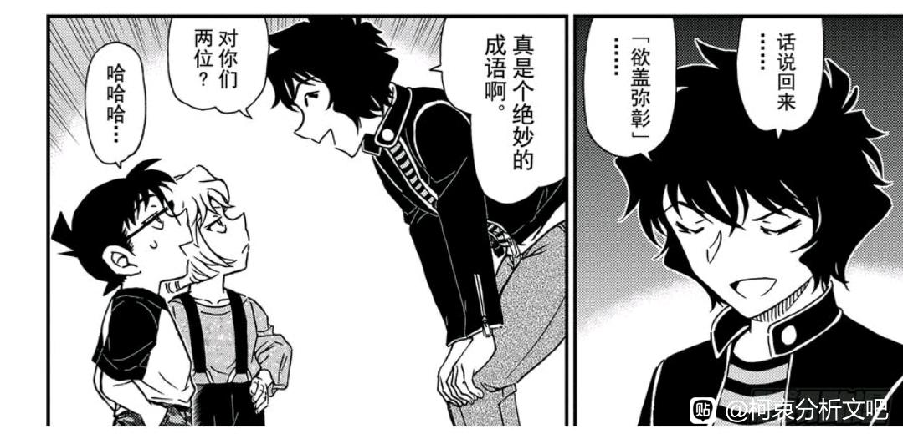
1、黑兔亭：宫野家的复活
仿佛是约定好一样，优作和有希子回到日本之后，下一个案件就是安室回忆厚司和艾莲娜。
我个人认为，安室的这一整段剧情，绝对不可能是一开始的黑波本或者后来的工安早有的设定（不然列车篇会很狗血），而是工具性的，目的就在于提供一个宫野家过去的视角。
毫无疑问宫野夫妇的过去需要描写，但是柯南不知情，小哀也不会说，因此只能让过去还比较空白的安室承担这一任务，安室在这一剧情中没得选，必须初恋是艾莲娜。
（当然，青山描写得还算不错，并且应该是有意识地和安室本人的身世串联起来了。）
仿佛是约定好一样，优作和有希子回到日本之后，下一个案件就是安室回忆厚司和艾莲娜。
我个人认为，安室的这一整段剧情，绝对不可能是一开始的黑波本或者后来的工安早有的设定（不然列车篇会很狗血），而是工具性的，目的就在于提供一个宫野家过去的视角。
毫无疑问宫野夫妇的过去需要描写，但是柯南不知情，小哀也不会说，因此只能让过去还比较空白的安室承担这一任务，安室在这一剧情中没得选，必须初恋是艾莲娜。
（当然，青山描写得还算不错，并且应该是有意识地和安室本人的身世串联起来了。）
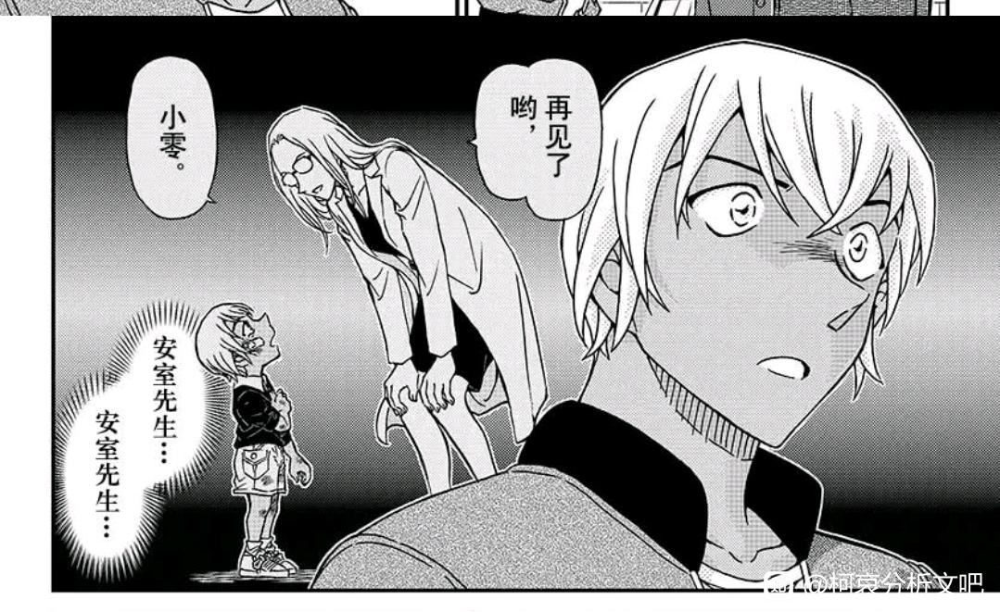
2024-10-10 22:15 | 卷福花生酱酱酱:一期没落，好有成就感哦！嘿嘿嘿2024-10-11 19:16 | 清茶姑娘:纯属好奇：有没有一种可能即使是黑波本时期，也有过类似于“宫野夫妇好心救助过一个来历不明的孩子”这种设定？因为我一直在考虑“降谷正晃”这个问题，或者其实就是为了圆这个名字而把安室的本来姓氏选为了降谷？2025-01-02 12:28 | 贴吧用户_QQ1Zea2:对波本这人没好感，艾莲娜初恋回忆的飞起对人家大女儿见死不救反手还要活捉小女儿，自己b动静导致苏格兰紫砂把锅推赤井身上，很难评2025-02-19 22:55 | marynn0424:回复 贴吧用户_QQ1Zea2 :我也 对赤井的执念的恨给我感觉他很不成熟且无能狂怒2025-04-15 15:20 | 发疯的法师:回复 贴吧用户_QQ1Zea2 :那就没办法了吧 毕竟明美死的那会还没波本的影子
在白鸠制药倒台之后，厚司来到了艾莲娜的小医院，漫画里没有提到地点，但我怀疑是鸟取，如果是大城市的话应该不会困难到要去投靠乌丸。
可以看到，医院里有不少患者，但明美还会去外面找到受伤的孩子带到医院，显然孩子的医治是无偿的，这样的医院，维持生计之艰难可想而知，加之艾莲娜录音带事件中提到，20年前的宫野夫妇已经被酒厂监视，则酒厂摧毁19年前的宫野医院简直没有什么难度，可以说这个小医院能维持6年已经是极限了。
在这样艰难的条件下，厚司并没有放弃自己的梦想，艾莲娜也全力支持，也许小哀对父母已经没有太多印象，但这一传统还是通过明美，录音带甚至是若狭传递出来，并最终作用于柯哀，这种对恋人梦想的支持，大概是某些小兰粉丝所永不能理解的。
（厚司的梦想很可能是激进地试图消灭某些疾病存在的土壤，例如癌症，也就是A药的核心思路，令细胞程序性死亡，当然这一点暂时没有更多证据）
可以看到，医院里有不少患者，但明美还会去外面找到受伤的孩子带到医院，显然孩子的医治是无偿的，这样的医院，维持生计之艰难可想而知，加之艾莲娜录音带事件中提到，20年前的宫野夫妇已经被酒厂监视，则酒厂摧毁19年前的宫野医院简直没有什么难度，可以说这个小医院能维持6年已经是极限了。
在这样艰难的条件下，厚司并没有放弃自己的梦想，艾莲娜也全力支持，也许小哀对父母已经没有太多印象，但这一传统还是通过明美，录音带甚至是若狭传递出来，并最终作用于柯哀，这种对恋人梦想的支持，大概是某些小兰粉丝所永不能理解的。
（厚司的梦想很可能是激进地试图消灭某些疾病存在的土壤，例如癌症，也就是A药的核心思路，令细胞程序性死亡，当然这一点暂时没有更多证据）
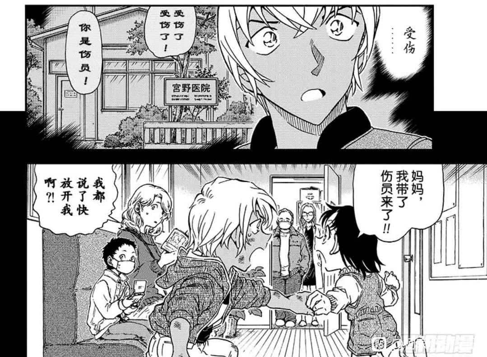
2024-10-10 22:13 | EdwardClow:在宫野夫妇19年前加入酒厂之后才被监视。寻找艾莲娜磁带那系列说的是【大概】20年前宫野夫妇回到房子，实际上大概20年前指的是19年前。2024-10-10 22:44 | EdwardClow:宫野厚司的研究可能是诱发人体内的病变细胞程序性死亡，乌丸发现这和自己半世纪前就开始进行的计划的药学原理很相似，便一直邀请他加入乌丸集团。2024-10-10 23:09 | 变成一道墙:回复 EdwardClow :「Apotoxin—程式细胞之死」概念大概率取材于现实中关于「ES细胞」和「iPS细胞」（induced pluripotent stem cells）的研究，而日本做这个方向研究的科学家山中伸弥和青山刚昌是同辈人，山中伸弥曾在访谈中提到他想要治疗「不治之症」，后来取得诺贝尔奖。2024-10-10 23:11 | 变成一道墙:回复 🌐之徙 :我对A药不是很感兴趣，所以没有深入挖，你们感兴趣的话可以往这个方向去找找。2024-10-10 23:12 | EdwardClow:回复 变成一道墙 :有可能，我觉得药学原理应该是诱发人体内的病变细胞程序性死亡。2024-10-10 23:12 | 变成一道墙:回复 变成一道墙 :理由参见我初心论贴子三小节第5点2024-10-10 23:20 | 🌐之徙:回复 EdwardClow :这个“大概20年前”，感觉还是直接理解成20年前比较好，例如明美是“4-5岁”，而明美现在25，则是20-21年前2024-10-10 23:21 | 🌐之徙:回复 EdwardClow :此外，加入酒厂后志保很快就出生了，但是他们去老家并没有志保，艾莲娜也并未怀孕2024-10-10 23:21 | 🌐之徙:回复 EdwardClow :包括犯人也都说的是“封印20年杀意”2024-10-10 23:22 | EdwardClow:回复 🌐之徙 :犯人说的是大概20年前，他总不可能说封杀19年杀意吧2024-10-10 23:25 | 🌐之徙:回复 EdwardClow :这个你手上有原文的话看一下，中文译文是直接20年前的，而且就是20年前被监视也不太奇怪，这个环境下明美居然在到处玩，可见这时并不是严格监视，大概是游说团之类的2024-10-10 23:25 | EdwardClow:回复 🌐之徙 :原文是大概20年前2024-10-10 23:27 | EdwardClow:回复 🌐之徙 :如果宫野夫妇加入乌丸集团之前就被监视，那他们还会加入吗？乌丸集团一直在邀请，伪装自己友好的虚假形象。2024-10-10 23:28 | 🌐之徙:回复 EdwardClow :所以我说是游说团嘛，事实上监视只是柯哀的想法，实际上明美在屋子里到处玩也没人管2024-10-10 23:29 | EdwardClow:回复 🌐之徙 :有些女性怀孕时的显怀状态不明显2024-10-10 23:31 | 🌐之徙:回复 EdwardClow :这个有没有访谈专门说这一件事啊，如果没有，其实应该就是20年前才对，奥卡姆剃刀了。2024-10-10 23:33 | EdwardClow:回复 🌐之徙 :不知道最近为什么这么流行奥卡姆剃刀原理？好多人和我讨论时都说过这个，实际上这个原理不适用名柯，甚至不适用大部分文艺作品2024-10-11 00:07 | 数码特摄♬:回复 EdwardClow :我觉得这种比较宽松的监视是乌丸接洽宫野夫妇的方式之一，可能正面邀请，跟踪，监视各种手段他们都在用，安室的回忆里也提到宫野厚司一直对加入乌丸犹豫，其中也包括一些不好的传闻，说明组织相比刻意掩盖自己的形象可能更在意掌握宫野夫妇的社会关系状态2024-10-11 00:14 | EdwardClow:回复 数码特摄♬ :这到底什么逻辑？一个正常公司为了邀请员工加入，居然使用了监视的手段，并且不允许员工在自己家待到第二天，员工知道被监视后，还不知道这个公司有问题，还要依靠亲戚的消息才知道这家公司不好2024-10-11 00:32 | 数码特摄♬:回复 EdwardClow :好吧，其他的还可以解释，但宫野夫妇访问老宅的状态和之后再没回来过的事实确实不太符合未被组织限制的逻辑2024-10-11 02:03 | 竑傺:回复 EdwardClow :我觉得没有很难理解。我一同学他们对接大客户，为了能和负责人见会去他们公司门口，常去的地方等。有时候为了能见一面甚至会去他们小区门口彻夜或者连几天轮番蹲点等人回来或者出去，堵住就算赢。因为一个单子都是上千万上亿的。2024-10-11 06:38 | EdwardClow:回复 竑傺 :宫野厚司【死死盯着窗外】2024-10-11 10:38 | 贴吧用户_aGDtC16:真热闹 没想到几位都在这2024-10-11 14:17 | 上総守信長ºº:回复 EdwardClow :是的，很多细节真要深究的话就变成作者吃书了2024-10-11 19:23 | 清茶姑娘:之前和纯路人讨论名柯里人物的家世，曾觉得其实宫野家家底不算差，起码有那么大一个宅子借给朋友开公司，一直不收租金，朋友居然还不觉得蹊跷（厚司仗义是一回事，可能朋友也确实觉得厚司不差钱所以没往这方面想），很能说明问题。但就是有这样的家底还被排挤到走投无路只能到地方上勉强维持小医院2024-10-11 19:25 | 清茶姑娘:可以想象宫野夫妇当时的举步维艰，不过∠÷肯定会认为“我们的天屎∠也一样完美善良支持新一啦”，毕竟曾在偶然间看到过∠得知真相后哭喊“你告诉我我不告诉别人不就得了”然后把新一的嘴堵住的情节2024-10-11 19:29 | 清茶姑娘:可见宫野夫妇当时的举步维艰。不过∠÷大概是不会这么说的，它们只认为它们的天屎∠“那么善良会支持新一”，我还看过∠得知真相后大喊“为什么不能告诉我，你告诉我我不告诉别人不就得了”然后让新一哑口无言的情节2024-10-12 12:58 | 贴吧用户_aQGJMMJ:回复 EdwardClow :正解，很多人忽略原文用词大概
有些SR非常喜欢这一论调，即“小哀的即将出生，最终导致了宫野夫妇加入酒厂”，这话听起来似乎说得通，但其实是不对的。
如图，即使知道了将会有第四个家庭成员，厚司的反应仍然只是“再考虑一下”，还是没有加入组织，加入组织要到后来艾莲娜和安室告别时。因此，他们决定加入组织应该还有别的原因，最大的原因，正是组织对二人的经济封锁。
25年前明美将出生而白鸠倒闭，19年前志保将出生而宫野医院不复存在，组织的经济封锁手段绝非宫野夫妇可以抗衡。因此，在加入组织后，宫野夫妇也绝非真心实意，很快就研制能贯穿组织心脏的“银色子弹”，又“改变了若狭的人生”，宫野夫妇的后招将不断揭露，他们以身入局，既是经济上的无奈，又是精神上的勇敢。
如图，即使知道了将会有第四个家庭成员，厚司的反应仍然只是“再考虑一下”，还是没有加入组织，加入组织要到后来艾莲娜和安室告别时。因此，他们决定加入组织应该还有别的原因，最大的原因，正是组织对二人的经济封锁。
25年前明美将出生而白鸠倒闭，19年前志保将出生而宫野医院不复存在，组织的经济封锁手段绝非宫野夫妇可以抗衡。因此，在加入组织后，宫野夫妇也绝非真心实意，很快就研制能贯穿组织心脏的“银色子弹”，又“改变了若狭的人生”，宫野夫妇的后招将不断揭露，他们以身入局，既是经济上的无奈，又是精神上的勇敢。
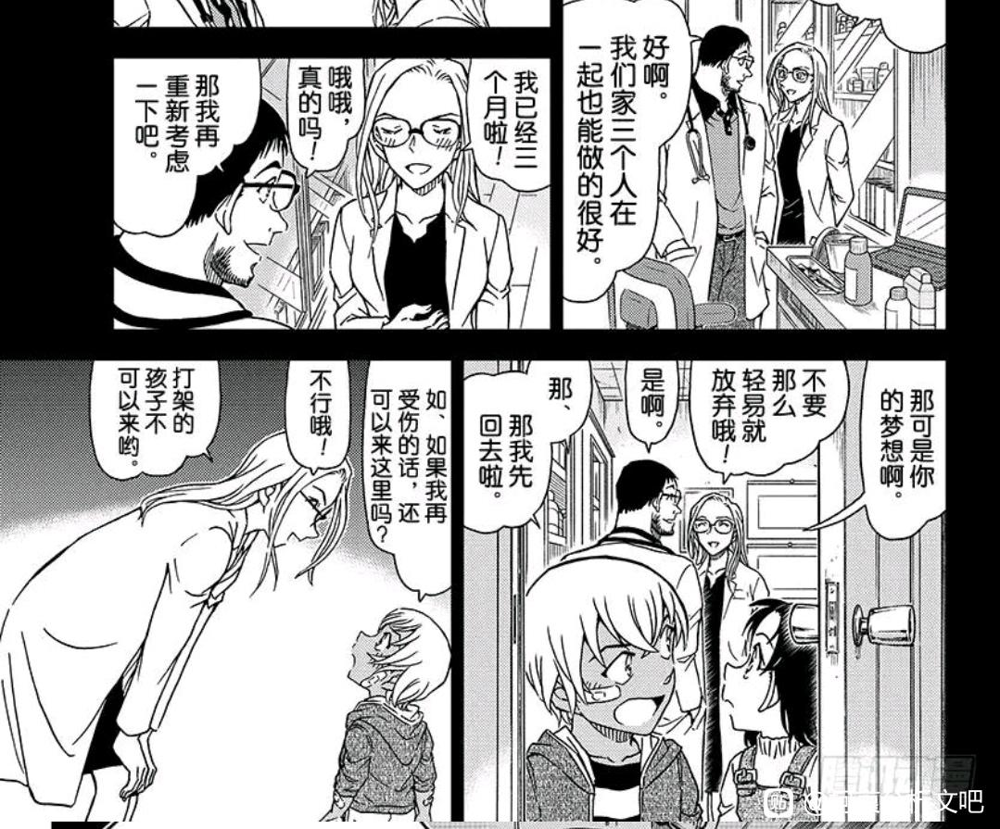
2024-10-10 22:16 | EdwardClow:诊所的微薄收入和简陋的研发条件也无法支持宫野厚司的研究2024-10-11 19:32 | 清茶姑娘:∠÷特别喜欢扣大帽子的原罪论仿佛把宫野夫妇加入组织归咎于哀的出生就能证明哀邪恶了一样，跟它们描写新志在一起后新一后悔的原因居然是志保吃过药后不能生育而∠生了个“大胖儿子”一样，透着那么眼皮子浅的乡土气2024-10-12 12:59 | 贴吧用户_aQGJMMJ:回复 清茶姑娘 :2024-10-12 20:13 | Ghost晴枏:回复 清茶姑娘 :这么逆天么？2024-10-12 23:37 | 清茶姑娘:回复 Ghost晴枏 :你以为以∠÷的娇妻脑和玛丽苏范儿能想到什么好的报复措施？2024-10-17 01:06 | 解毒剂😄:回复 Ghost晴枏 :这个应该是琴兰一篇宏伟巨作的番外里的桥段，里面我记得还有一堆人请新一吃大嘴巴子(顺带一提，平次没打)2024-10-27 18:11 | anshanwg:回复 清茶姑娘 :不能高端点吗？写的好像乡村爱情一样2024-10-27 18:14 | 清茶姑娘:回复 anshanwg :你去问问躺平派娇妻脑的∠÷为毛觉得“生个儿子就是对不能生育的嘲讽”，看看它们还有别的高端不，难道是生对双胞胎儿子2024-10-27 18:50 | anshanwg:？
回复 清茶姑娘 :就必须要在生孩子上做文章吗2024-10-27 19:00 | 清茶姑娘:回复 anshanwg :我只是在调侃啊，怎么知道∠÷的脑回路？2024-10-31 10:25 | Ghost晴枏:回复 清茶姑娘 :不理解，生儿子？？她们眼里mll就这点价值了？?2024-10-31 17:01 | 清茶姑娘:回复 Ghost晴枏 :对于不思进取只yy拽着一个男人不撒手还幻想开后宫的躺平娇妻脑来说，你以为它们脑袋里的傲人资本还有什么吗？2025-01-06 10:57 | 安蓝学:回复 清茶姑娘 :国家现在倡导三胎 就是对他们倡导的吧2025-01-21 10:39 | sheryl雪鸢:回复 清茶姑娘 :角粉估计啥后天技能都拿不出手，只能吹嘘生殖能力来炫耀了，很符合我对一些娇妻的刻板印象2025-02-20 01:00 | 煠炽:回复 清茶姑娘 :不能生不是更好吗 婚后查案多半是两人一起去 有了孩子谁带?死神请保姆请来的八成是高危人物 绑架少不了 难不成让有希子带 help成名之后光速息影为了享受生活 儿子丢过来个孙子孙女让我带小孩?我要请律师
我超我超，赶上大佬直播了
视角回到安室。
对安室而言，艾莲娜似乎充当了他所缺失的“母亲”地位。
漫画所展示的小降谷，与其说是“混血儿”，不如说是孤儿，在被同学欺负之后，安室竟然只是强调自己在霓虹长大，对父母的信息反而遮掩起来，因此一种主流推断，认为安室是某个达官显贵甚至酒厂权贵的私生子，马上被抛弃了。（从而认识了同样被收养的景光）
这种观点挺有道理，【黑兔亭】这一事件正是私生女，安室就轻易看出了这对父女的关系，如果说小五郎以前看出翁婿关系是出于阅历，那么安室是不是也出于阅历呢？
（值得一提的是，这位私生女也是在鸟取出生）
另一边，可以注意一下嫌疑人之一的兔女郎，该兔女郎工作极为认真，只是为了给重病的父亲筹钱，不惜到兔女郎餐厅这种擦边环境去，同样引发了安室的大量回忆；巧合的是，安室也是工作极为认真，到了酒厂这种环境去卷。
那么，是否存在一位叫做“降谷正晃”或者其他名字的老人，安室是其私生子呢？二者关系又如何呢？信息过少，现在只有等到青山更新了。
对安室而言，艾莲娜似乎充当了他所缺失的“母亲”地位。
漫画所展示的小降谷，与其说是“混血儿”，不如说是孤儿，在被同学欺负之后，安室竟然只是强调自己在霓虹长大，对父母的信息反而遮掩起来，因此一种主流推断，认为安室是某个达官显贵甚至酒厂权贵的私生子，马上被抛弃了。（从而认识了同样被收养的景光）
这种观点挺有道理，【黑兔亭】这一事件正是私生女，安室就轻易看出了这对父女的关系，如果说小五郎以前看出翁婿关系是出于阅历，那么安室是不是也出于阅历呢？
（值得一提的是，这位私生女也是在鸟取出生）
另一边，可以注意一下嫌疑人之一的兔女郎，该兔女郎工作极为认真，只是为了给重病的父亲筹钱，不惜到兔女郎餐厅这种擦边环境去，同样引发了安室的大量回忆；巧合的是，安室也是工作极为认真，到了酒厂这种环境去卷。
那么，是否存在一位叫做“降谷正晃”或者其他名字的老人，安室是其私生子呢？二者关系又如何呢？信息过少，现在只有等到青山更新了。
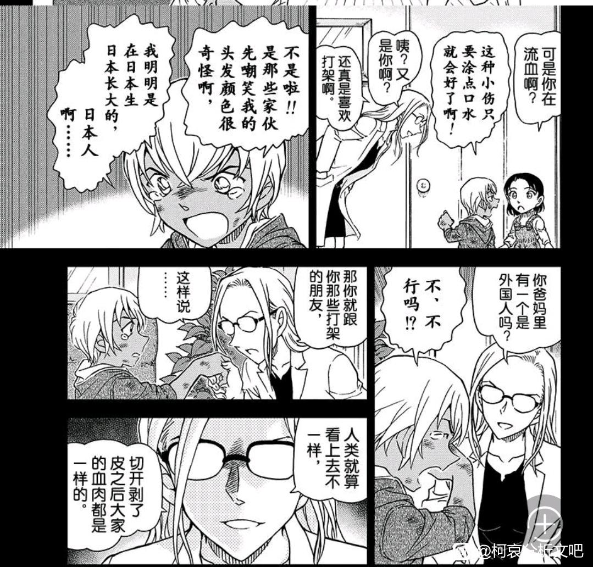
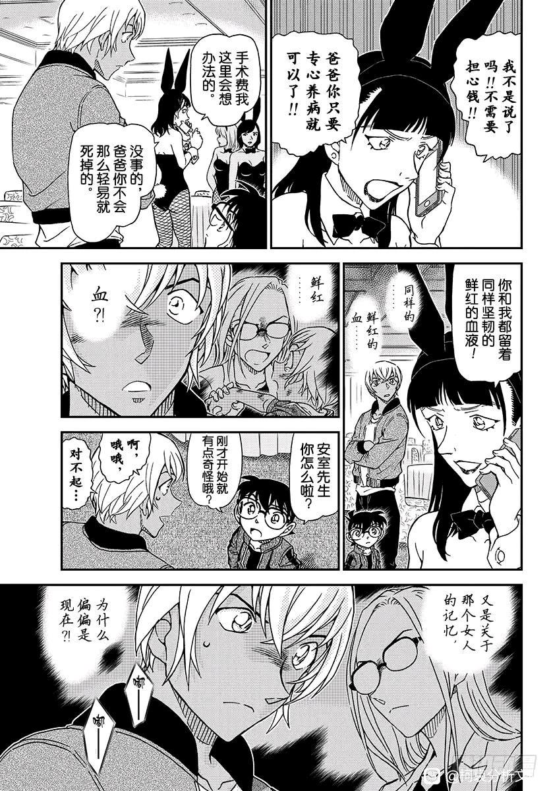
2024-10-10 22:58 | 黑龙江历史:“艾莲娜可是能成为我母亲的女人啊！”2024-10-11 19:35 | 清茶姑娘:如果降谷正晃真是酒厂的人而且和安室有关系感觉不太妙，毕竟这还是一部漫画，不太可能出现大义灭亲之类的情节，除了∠对新一的重拳出击。2024-10-16 23:22 | 内的裤_:回复 清茶姑娘 :大义灭亲还包括并不限于砸爆爹的办公桌，一脚擦着亲妈耳边踢过去2024-11-13 11:13 | 江风一孤同:回复 黑龙江历史 :什么宫野家名誉长子（战术后仰）2024-11-13 17:42 | 黑龙江历史:回复 江风一孤同 :和高达正好反过来，找妈妈的换成了骡子
当然，回忆归回忆，安室这人的特点就是做起坏事也特别认真。
他马上利用了小兰大嘴巴的特点，套出各种话，小兰真是知无不答，这里帝丹高中所有人已经被告知要保密了，但或许是小兰正在反抗世良所说的“大家都希望新一不存在呢”，所以拼命给新一存在感，甚至连去新一家打扫都承认了。
这里可以看到柯南的确已经对小兰抱无所谓态度，把小兰的大嘴巴完全当场客观事实去考虑事情，干脆报告给优作让他迎接安室得了。哪怕这时新兰刚刚“确定关系”，柯南却几乎不会考虑去怎么改变小兰的世界，是疲倦，还是彻底的漠视？
那么，如果这不是安室，而是朗姆呢？柯南是不是也任由小兰去说，自己默默制定对策呢？那么，这又是一个瞒着小兰的对策，而要继续瞒到底，死亡就是一个诱人的选项。
他马上利用了小兰大嘴巴的特点，套出各种话，小兰真是知无不答，这里帝丹高中所有人已经被告知要保密了，但或许是小兰正在反抗世良所说的“大家都希望新一不存在呢”，所以拼命给新一存在感，甚至连去新一家打扫都承认了。
这里可以看到柯南的确已经对小兰抱无所谓态度，把小兰的大嘴巴完全当场客观事实去考虑事情，干脆报告给优作让他迎接安室得了。哪怕这时新兰刚刚“确定关系”，柯南却几乎不会考虑去怎么改变小兰的世界，是疲倦，还是彻底的漠视？
那么，如果这不是安室，而是朗姆呢？柯南是不是也任由小兰去说，自己默默制定对策呢？那么，这又是一个瞒着小兰的对策，而要继续瞒到底，死亡就是一个诱人的选项。
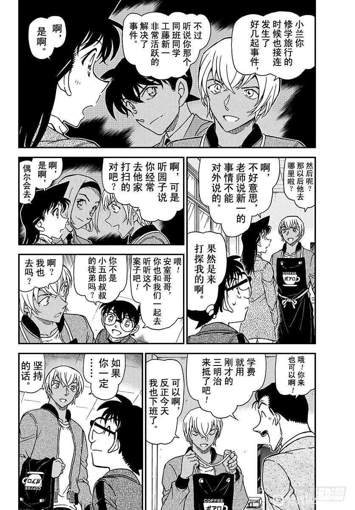
2024-10-11 19:38 | 清茶姑娘:从我个人身边体会到的例子来看∠这其实也是一种心虚的表现，它自己心里知道所谓的确定关系和表白有多脆弱，所以反而要时时把和对方有关的事挂在嘴边，既是一种自我暗示好像多说了就能加强关系一样，也是在对外彰显着这种关系，简单点说就是制造舆论地位。2024-10-13 08:23 | 江风一孤同:∠这个『偶尔』可真是轻飘飘，麻美案就指使园子干活，给园子增加工作量。双重暗号案开头掏钥匙丝滑无比，园子都说『这是不是成每个月的固定项目了』可见每个月都得来个至少一两次，就这还偶尔呢，怕不是来想着自己未来入住这栋宅子的生活2024-11-01 18:02 | long126zhen:回复 大水魚誒 : 换锁也没用，早期小兰就是没钥匙的，从阿笠博士那里要，然后月月去大扫除，估计是要完就没还回去过，这种方面她思维一直很灵活的2024-12-16 23:00 | 唯哀1999:这里“老师不让说”，真的绝了2025-01-09 10:09 | 阿尔维斯图画:回复 long126zhen :黑兔亭这个案子里就有，毛利兰是直接把工藤宅的钥匙和自己家的钥匙挂一起都放自己钱包里的。2025-04-15 15:23 | 发疯的法师:回复 阿尔维斯图画 :这个没啥问题吧 懒得找钥匙直接放一起是最方便的2025-05-12 14:33 | 阿尔维斯图画:回复 发疯的法师 :重点是工藤家的钥匙还留在毛利兰的手上，并且她这会儿是清楚工藤家已经把房子租给冲矢昴用不着她再去“帮忙”打扫卫生了（就算是户主都没帮租客干活的必要），所以要么是毛利兰她不想还钥匙（人物角度）、要么是为了方便安室透偷钥匙（剧情角度，毛利兰只是个提供钥匙的工具人）。2025-05-12 15:47 | 发疯的法师:回复 阿尔维斯图画 :啊对 忘了这茬（不过考虑剧情上只有半年似乎也不是不能圆）这么一说感觉毛利兰现在的唯一作用就是给其他人泄露情报2025-05-16 19:24 | 阿尔维斯图画:回复 发疯的法师 :以及搞气氛需要煽情了让她哭、有死人出现了让她大喊预警、需要剧情冲突了让她出状况、不想让她解决问题就让她被吓（毛利兰的空手道算特殊设定，这个去不掉，但很多问题是不能让她解决的，所以就让她“怕鬼”，毛利兰不是一开始就怕鬼的）

最后一篇终于开始啦
最后还是要吐槽一下，红修之后青山是真不给小兰活路了。
这有个证据是小兰发现的，按理就该让小兰像步美那样发现证据，结果非要强调小兰是不小心踩到证据，还踩坏了，旁边高木小五郎也不断强调这都是运气我看小兰居然懂得用手帕包着指甲，已经是不错的水平了。
事实上青山把步美这个角色更多映射在小明美身上了，小明美当时和步美长得也太像了 大概就是步美没有发箍的样子，怪不得小哀很喜欢步美
大概就是步美没有发箍的样子，怪不得小哀很喜欢步美
另外就是，十岁的降谷比6岁的步美还要矮，很多人怀疑降谷是营养不良，不过由于红修之后青山的画技早已一落千丈，很难不怀疑青山只是不会画身高差。
光顾着把厚司画成自己了
这有个证据是小兰发现的，按理就该让小兰像步美那样发现证据，结果非要强调小兰是不小心踩到证据，还踩坏了，旁边高木小五郎也不断强调这都是运气
我看小兰居然懂得用手帕包着指甲，已经是不错的水平了。事实上青山把步美这个角色更多映射在小明美身上了，小明美当时和步美长得也太像了
大概就是步美没有发箍的样子，怪不得小哀很喜欢步美另外就是，十岁的降谷比6岁的步美还要矮，很多人怀疑降谷是营养不良，不过由于红修之后青山的画技早已一落千丈，很难不怀疑青山只是不会画身高差。
光顾着把厚司画成自己了
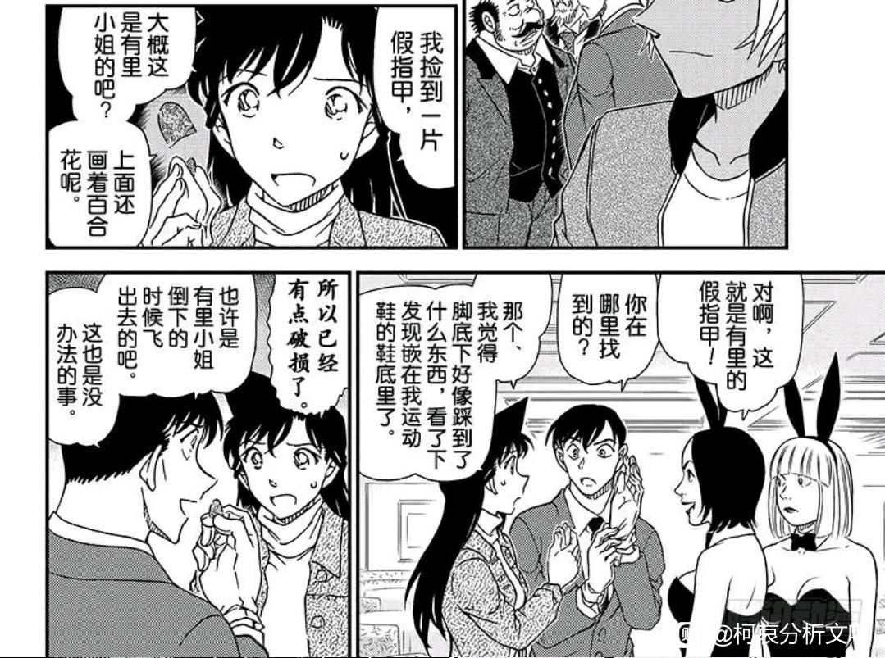
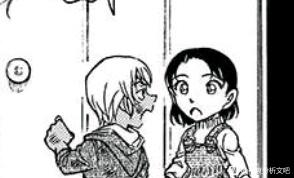
2024-10-10 22:48 | 征服de臣下:会不会是因为这个年龄段女生发育快点2024-10-11 00:11 | 数码特摄♬:回复 🌐之徙 :说来也奇怪，柯南说自己没长高那话其实是有突出柯哀二人和三小的身高对比细节，尤其步美的身高已经从最矮长到跟小哀差不多高了2024-10-11 00:18 | 我有嘉賓00:回复 数码特摄♬ :好像柯南的身高就是比哀矮一点，男生发育慢2024-10-11 00:18 | 我有嘉賓00:营养不良加男性发育慢应该足够解释了2024-10-11 19:40 | 清茶姑娘:毕竟明美和步美才是真天使嘛！2025-02-20 00:02 | marynn0424:厚司哈哈哈哈2025-08-25 15:09 | 星辰梦逝回:所以老贼给长得像自己的厚司安排一个金发大美女当老婆2026-01-18 08:46 | 阿瑟姆奶茶🌸:那小柯
回复 星辰梦逝回 :不止，青山把自己带入博士和厚司视角，前者是实际哀的接近父亲的存在，后者事亲爹，而且两者的关系既有科学家链接，还有眼镜链接，然后通过眼镜直接链接柯南，柯南的护身符事博士高的，而第一集伪装的眼镜可能是厚司的

感情线大结局并不是新志，工藤新一这个身份在吃下A药的那一刻就已经死亡，变成江户川柯南的他开启了另一场伟大的探险。名柯的主题是爱的探索与内在成长，人是不能逆转时光的洪流的，如果要强行改变它的话，一定会受到惩罚，对柯哀而言惩罚就是冻龄，小哀研制出银色子弹解除冻龄就好了，这才是转动命运之轮的故事。
2024-10-11 00:08 | 温暖深呼吸:逆转时间洪流会受到惩罚，感觉最后贝姐比琴后面更有可能受到惩罚？2024-10-11 14:29 | 上総守信長ºº:很赞同这个说法2024-10-11 17:21 | 一叶之秋🌿🍁🍁:为何我如此三生有幸，远远的回顾过去的自己～2024-10-11 21:33 | 滚筒洗衣机工业:就算做出了解药，感觉哀也不会想变回去的2024-10-11 23:24 | 恶势力崛起:可以2025-07-05 23:57 | 要来了👻:这结局从商业考量也是最好的。初遇论真画出来的话这也是为因为组织的存在而错过的小新一和小志保十几年人生的补偿2025-09-02 00:08 | 谁来剪月光50:那么玛丽也回不去了吗2025-10-07 14:02 | WEIER2024:回复 谁来剪月光50 :可以做俩种药，一种解除冻龄，一种永久变大2025-10-07 14:16 | 谁来剪月光50:回复 WEIER2024 :这样很烂喔结局设定如果是柯哀变不回去的话不如就借抗药性吧（只能解除冻龄）玛丽一次都没吃过可以变回去2025-10-07 16:43 | WEIER2024:蛙趣，你这个感觉很不错，哀研制出更好的药，然后玛丽可以变回去，但是柯哀两个因为有抗药性所以只能解除冻龄

25年前，白鸠制药破产，宫野夫妇经营小诊所，拒绝乌丸集团的邀请。
19年前，决定加入乌丸集团的研究所。搬离诊所前，爱莲娜与故意受伤来见自己的降谷告别，称自己要去很远的地方。
加入组织之后，在组织成员的监视下，他们一家三口去拜访宫野厚司的朋友出岛壮
平。
19年前，决定加入乌丸集团的研究所。搬离诊所前，爱莲娜与故意受伤来见自己的降谷告别，称自己要去很远的地方。
加入组织之后，在组织成员的监视下，他们一家三口去拜访宫野厚司的朋友出岛壮
平。
景光在东京结识了降谷，所以宫野夫妇诊所的地点应该是在东京（除非降谷零是去东京旅游时结交景光或降谷零在结交景光后从东京搬走）。
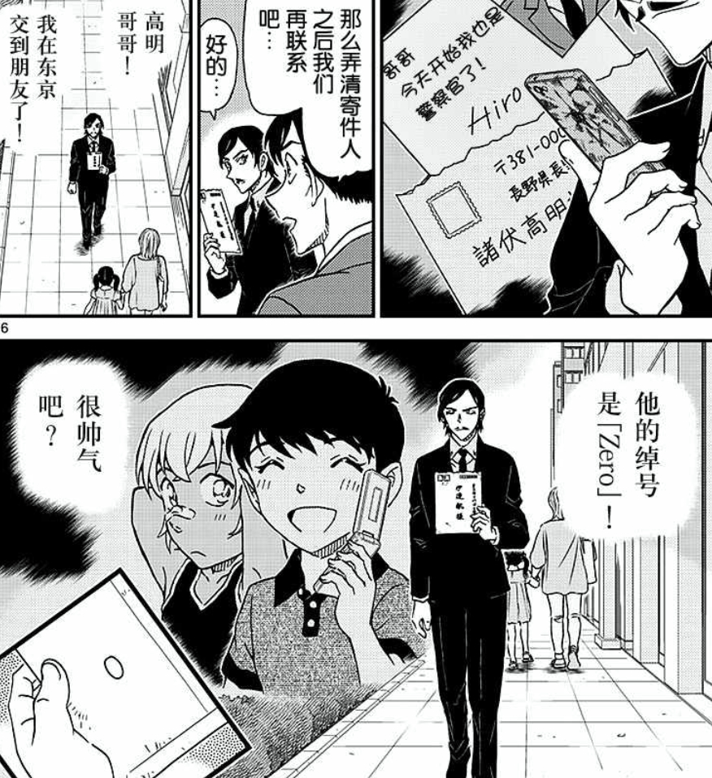
大概20年前（实际上是19年前），宫野一家来到老宅找出岛，似乎是有什么重要的事情要和出岛说，可是等了一天一夜没见到。期间厚司向出岛的下属介绍过自己的家人。从有监视车来看，那时他们已经接受乌丸集团的邀请而加入组织了。
从“住了一晚上”以及“没什么特别的”来看，宫野厚司应该有重要的事找老同学且必须亲自接触。但是为何不继续等下去呢？很可能组织只给他们一个晚上的时间。
但此后他们再也没来过，所以原因只能是：他们被组织限制了自由。
从“住了一晚上”以及“没什么特别的”来看，宫野厚司应该有重要的事找老同学且必须亲自接触。但是为何不继续等下去呢？很可能组织只给他们一个晚上的时间。
但此后他们再也没来过，所以原因只能是：他们被组织限制了自由。
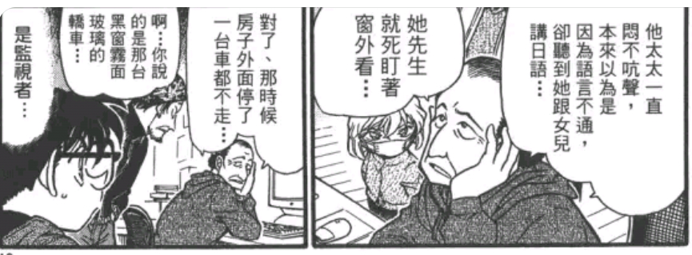
直播，顶
楼主辛苦了
两个补充修改；
1、厚司艾莲娜前往老家应该为大约20年前的19年前，已确认所有位置写的都是“大约20年前”，加之组织的确有监视，因此应该为19年前，此时志保尚未出生。
2、景光和降谷的初遇应该早于艾莲娜，在警校五人组里设定景光小学一年级就和降谷一起了，因此宫野医院在东京的概率更大，不应该在鸟取。
1、厚司艾莲娜前往老家应该为大约20年前的19年前，已确认所有位置写的都是“大约20年前”，加之组织的确有监视，因此应该为19年前，此时志保尚未出生。
2、景光和降谷的初遇应该早于艾莲娜，在警校五人组里设定景光小学一年级就和降谷一起了，因此宫野医院在东京的概率更大，不应该在鸟取。
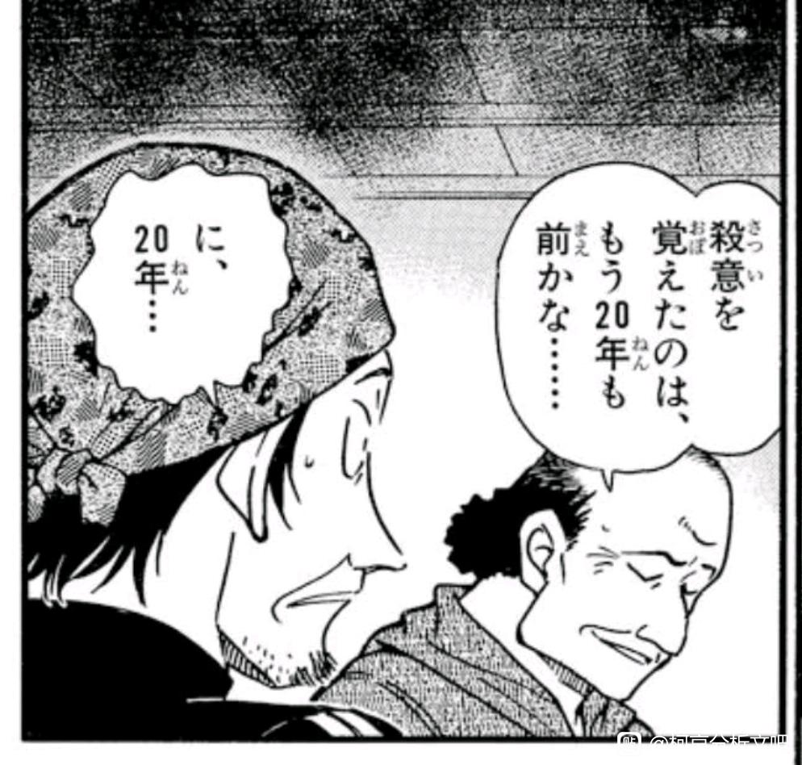
之徙认为宫野夫妇拜访出岛是20年前，而不是19年前。
目前已知情节是宫野厚司当时【死死盯着窗外】，证明宫野厚司知道自己被监视，如果按你的推理，宫野夫妇早就知道乌丸集团有问题了，但19年前宫野夫妇只是听玛丽说乌丸集团名声不好，他们正在考虑是否加入乌丸集团，那么这就出现矛盾了。
目前已知情节是宫野厚司当时【死死盯着窗外】，证明宫野厚司知道自己被监视，如果按你的推理，宫野夫妇早就知道乌丸集团有问题了，但19年前宫野夫妇只是听玛丽说乌丸集团名声不好，他们正在考虑是否加入乌丸集团，那么这就出现矛盾了。
好东西，收藏了慢慢看
好好好 我直接一个倒立庆祝


2、千苗重认：隐藏巧思的小星星
黑兔亭的下一案是千苗重认，且开始出现了早起喂兔子的少侦（该兔子即后来时光胶囊的兔子），兔子的要素越来越多，而本身就是十三年前初遇的千苗重认，更是预示着剧情的加速，新志的过去再次因为本案而有了些许揭露。
先来看苗子的房间，苗子的设定是“大家庭的独生女”，所以一人拥有极大的房间，该房间和玛利亚房间颇有相似之处，但是娃娃并非【大熊抱着兔子】，而是【大熊抱着小熊】，考虑到十三年前明美和苗子同时在帝丹小学，这似乎暗示苗子没有见过小志保，但见过小明美（甚至见过若狭）。
而另一边，作为【熊猫】的替代，苗子的床上是一个迷你警车玩具，而警车和熊猫同样指向柯南（取其黑白之意），只不过这一迷你警车“马失前蹄”了。
由此，我的想法如下，当然这是暴论：
【苗子十三年前没有见过志保，但是见过明美和若狭，也见过小新一，则苗子所遇见的，是“小志保已经被琴酒（或其他人）掳走的画面，当时若狭正在劝新一“重新开始的话什么都不晚”】
这样，也许米原樱子和三池苗子各自掌握一半的初遇细节，樱子知晓新志而苗子知晓新明，具体细节可能有各种分支，在此不一一论述。
黑兔亭的下一案是千苗重认，且开始出现了早起喂兔子的少侦（该兔子即后来时光胶囊的兔子），兔子的要素越来越多，而本身就是十三年前初遇的千苗重认，更是预示着剧情的加速，新志的过去再次因为本案而有了些许揭露。
先来看苗子的房间，苗子的设定是“大家庭的独生女”，所以一人拥有极大的房间，该房间和玛利亚房间颇有相似之处，但是娃娃并非【大熊抱着兔子】，而是【大熊抱着小熊】，考虑到十三年前明美和苗子同时在帝丹小学，这似乎暗示苗子没有见过小志保，但见过小明美（甚至见过若狭）。
而另一边，作为【熊猫】的替代，苗子的床上是一个迷你警车玩具，而警车和熊猫同样指向柯南（取其黑白之意），只不过这一迷你警车“马失前蹄”了。
由此，我的想法如下，当然这是暴论：
【苗子十三年前没有见过志保，但是见过明美和若狭，也见过小新一，则苗子所遇见的，是“小志保已经被琴酒（或其他人）掳走的画面，当时若狭正在劝新一“重新开始的话什么都不晚”】
这样，也许米原樱子和三池苗子各自掌握一半的初遇细节，樱子知晓新志而苗子知晓新明，具体细节可能有各种分支，在此不一一论述。
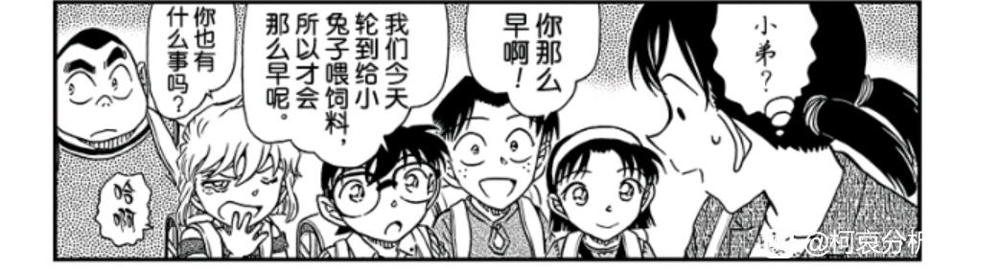
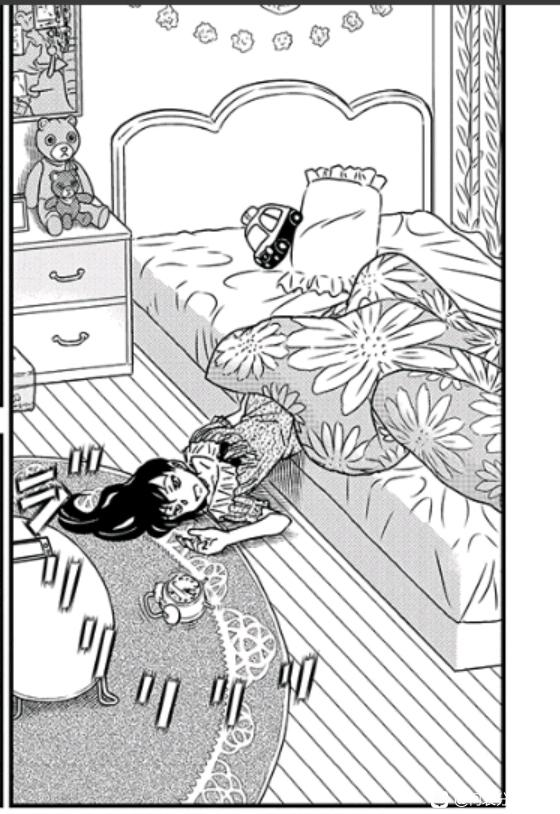
2024-10-12 13:07 | 征服de臣下:看到这楼突发奇想，如果初遇落地，会不会也是类似樱花班的多视角2024-10-13 21:59 | hhhhhhyzq:回复 征服de臣下 :有可能啊，初遇应该是黑组线的重要剧情，所以老贼一直没画，对比世良那么晚出场的都加了，新志的剧情应该有点复杂的2025-01-13 15:36 | 雪者风形:回复 hhhhhhyzq :初遇的切入会不会是一个看似不像新志相关的事件，甚至第一阶段直接没有相关要素（）如果初遇比拆新兰早感觉这种流程会比较合适？2025-11-15 02:13 | susu我只爱自己:苗子不是独生女吧，一开始回忆里有说，因为自己是家里最小的孩子一直被宠着从没人骂过她，78是第一个对她说重话的人。
接下来是高佐（这一案一大堆警视厅的糖）
这里高佐假装路人情侣（算是他们的常见play了），不过也许从高佐的穿戴上，还能看出一些有趣之处。
在【现在】这个时间点，高木带帽子，佐藤带墨镜，不难想到这就是【足球场胁迫事件】柯哀的穿戴；然而在【过去】，二者的装扮却恰好完全反过来，佐藤带帽子高木带墨镜（高木的眼镜全程没认真戴）。
这就带来一个问题，小时候的新一，是真的只是单纯“讨厌带眼镜”吗？还是说，有什么事件，导致了新一获得了“讨厌带眼镜”的态度？
在樱花班，新一“喜欢带帽子”，但樱花班之后却变成“讨厌带帽子”，直到变小后又“喜欢带帽子”，帽子与新志是息息相关的，眼镜则更是护身符，这两项元素仍然在新志的过去占据重要地位。
如果十三年前的确有“令人讨厌的眼镜”，那么墨镜的概率其实更高，于是柯南把小哀墨镜掀了，因此，伏特加突然就变得比较重要，也许在十三年前，伏特加的墨镜扮演了某些作用？
这里高佐假装路人情侣（算是他们的常见play了），不过也许从高佐的穿戴上，还能看出一些有趣之处。
在【现在】这个时间点，高木带帽子，佐藤带墨镜，不难想到这就是【足球场胁迫事件】柯哀的穿戴；然而在【过去】，二者的装扮却恰好完全反过来，佐藤带帽子高木带墨镜（高木的眼镜全程没认真戴）。
这就带来一个问题，小时候的新一，是真的只是单纯“讨厌带眼镜”吗？还是说，有什么事件，导致了新一获得了“讨厌带眼镜”的态度？
在樱花班，新一“喜欢带帽子”，但樱花班之后却变成“讨厌带帽子”，直到变小后又“喜欢带帽子”，帽子与新志是息息相关的，眼镜则更是护身符，这两项元素仍然在新志的过去占据重要地位。
如果十三年前的确有“令人讨厌的眼镜”，那么墨镜的概率其实更高，于是柯南把小哀墨镜掀了，因此，伏特加突然就变得比较重要，也许在十三年前，伏特加的墨镜扮演了某些作用？
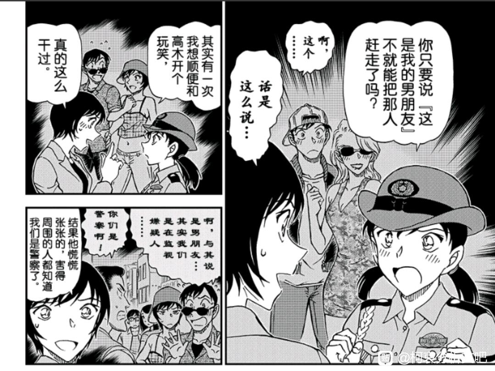
2024-10-11 23:06 | 清茶姑娘:所以樱花班之后变小之前，新一同时讨厌了眼镜和帽子2024-10-17 03:10 | 解毒剂😄:我觉得伏特加不一定参与了抓小志保，因为m26青山强行阻止琴酒看到灰原的照片，说明琴酒很可能见过小志保，一旦m26看到了灰原，只能直接决战了。但伏特加却可以看到灰原，要么伏特加确实没记住小志保的样子，要么伏特加确实没见过小志保。2024-10-17 06:53 | 🌐之徙:回复 解毒剂😄 :不对呀，伏特加直接说这是雪莉变小了，看起来他是见过小志保的2024-10-18 20:07 | 解毒剂😄:回复 🌐之徙 :他说的是：“你是雪莉吧？”原文这里表示推断，因为他收到的情报是用系统搜雪莉结果出现了灰原哀，所以伏特加才会怀疑雪莉是变小了。2025-09-22 01:07 | 谁来剪月光50:回复 解毒剂😄 :你是雪莉吧这句话是去抓雪莉酒店门口和抓到潜水艇的时候才说的提过那个系统的时候伏特加是有说这小鬼是雪莉打电话给琴酒是说雪莉变小了 基尔对伏特加说这是雪莉小时候吧
接下来就是本篇章的重头戏了：【小星星】
【小星星】是柯南唯一不跑调的歌曲，逃过了“松本小百合诅咒”，又是儿歌，因此新一学会唱【小星星】的时间一定是相当之早。
肯定有很多人觉得用7×4就认定小星星实在太牵强，但是对柯南来讲，可不止有7×4这一条信息，还有上一位死者留下的数字【7155】，柯南将之解释为法律条目，但事实上，柯南反复破解【7155】时，一定考虑过另一种可能，也就是【电话按键音】，“7155”大体上就是小星星的前四个音（一闪一闪），因此柯南在听到7×4时才能那么快反应过来。
（这其实说明柯南对这首儿歌印象极深）
在此前，7155还同时导致千叶知道苗子的姓（三池），而其附带的“小星星”也包含了志保，其实作为有希子的儿子，柯南是很难成为音痴的，如果音痴也是后天形成的呢？在学会唱“小星星”之后，新一失去了唱歌的能力。
【小星星】是柯南唯一不跑调的歌曲，逃过了“松本小百合诅咒”，又是儿歌，因此新一学会唱【小星星】的时间一定是相当之早。
肯定有很多人觉得用7×4就认定小星星实在太牵强，但是对柯南来讲，可不止有7×4这一条信息，还有上一位死者留下的数字【7155】，柯南将之解释为法律条目，但事实上，柯南反复破解【7155】时，一定考虑过另一种可能，也就是【电话按键音】，“7155”大体上就是小星星的前四个音（一闪一闪），因此柯南在听到7×4时才能那么快反应过来。
（这其实说明柯南对这首儿歌印象极深）
在此前，7155还同时导致千叶知道苗子的姓（三池），而其附带的“小星星”也包含了志保，其实作为有希子的儿子，柯南是很难成为音痴的，如果音痴也是后天形成的呢？在学会唱“小星星”之后，新一失去了唱歌的能力。
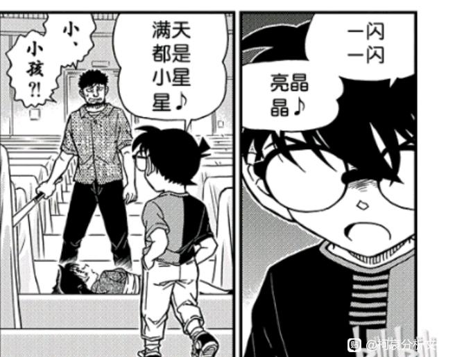
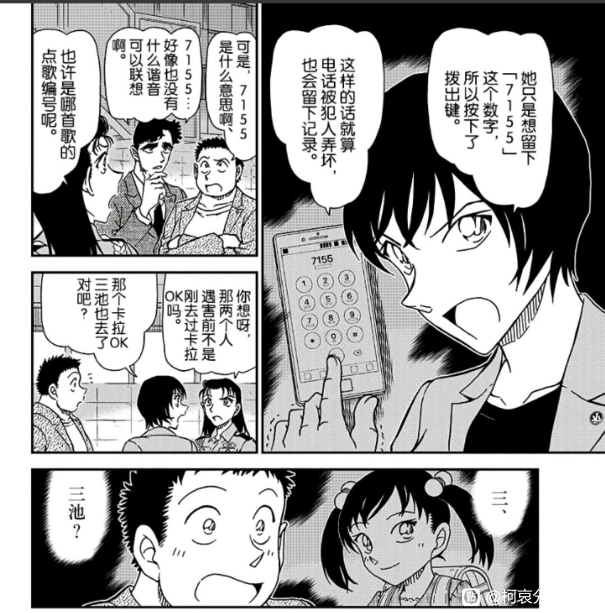
在千苗相认的剧情氛围中，青山又安排了错认，也就是本案的犯人一直把由美当成另一个由美，追寻着虚幻的复仇。
（犯人姓青野，不过这和青野厚司一点关系都没有，完全是因为禁止停车标志）
犯人作案的地点也有意思：【杯户町三町目】
这里黑田突然出现，主流的猜测是杯户町里住着羽田康晴，黑田因为某原因在羽田家附近（由于康晴不喜欢警方，黑田估计会吃闭门羹），不过三町目还有一重身份，那就是【瑛佑的老家】。
在新出的剧情中，小兰提到小时候某人一直受伤，于是小兰学会了包扎，但这个人是新一还是瑛佑呢？因为瑛佑是一直受伤的，瑛海又立志做护士，则小兰回忆的地方，也许也是杯户三町目，但是错认了，与本案犯人一致。
当然，以上推论有过度推理之嫌，仅供发散思维。
（犯人姓青野，不过这和青野厚司一点关系都没有，完全是因为禁止停车标志）
犯人作案的地点也有意思：【杯户町三町目】
这里黑田突然出现，主流的猜测是杯户町里住着羽田康晴，黑田因为某原因在羽田家附近（由于康晴不喜欢警方，黑田估计会吃闭门羹），不过三町目还有一重身份，那就是【瑛佑的老家】。
在新出的剧情中，小兰提到小时候某人一直受伤，于是小兰学会了包扎，但这个人是新一还是瑛佑呢？因为瑛佑是一直受伤的，瑛海又立志做护士，则小兰回忆的地方，也许也是杯户三町目，但是错认了，与本案犯人一致。
当然，以上推论有过度推理之嫌，仅供发散思维。
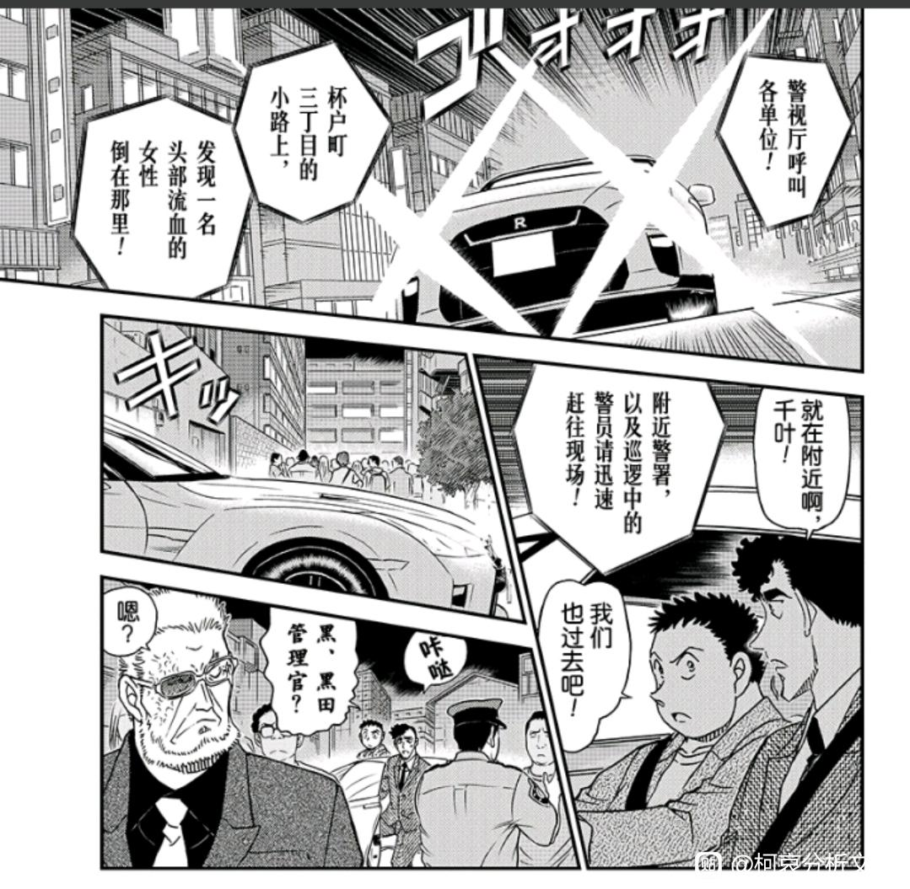
2024-10-11 23:11 | 清茶姑娘:新一似乎没有一直受伤的情况，就算受伤了，也轮不到∠包扎2024-10-12 10:09 | 上総守信長ºº:果真如此，那么名柯这个作品再五十年都不会完结2024-11-27 16:44 | 斯殿之声:要是小兰初恋是瑛佑，错认成新一，新一错把小兰认成志保，但真是绝了2025-06-29 11:11 | 自作主张阿萨德:回复 斯殿之声 :绝了2025-08-25 15:18 | 星辰梦逝回:包扎这个不至于吧，新一踢足球受伤还是很正常的，而且小学的话这种事倒是不会记忆错乱了，如果只是见过一面很短时间，或者年纪很小三四岁的事可能还会有记忆错乱。不过本堂瑛佑很长时间没出现过了吧，好像配平兰不太可能2025-09-22 01:10 | 谁来剪月光50:错认情节 詹姆斯还有博士都有相关案件啊
最后千苗相认，剧情又出现了重复的地方，苗子被相当厉害的弩箭伤害，千叶背着她走了。
这好像是再会篇的剧情把弩箭换成琴酒的枪就是了。
小哀是否有认出初遇柯南，我还是倾向于没认出，并且处在千叶状态。主要是我个人不希望小哀是因为认出初恋才喜欢柯南，就像苗子喜欢千叶不仅是初恋，还是因为千叶直到现在都保持正义感；让小哀提早认出柯南，也许会降低柯哀关系的美感。（当然这些都是创作上考虑）
千叶状态见图2，是一个可以继续拉扯的状态，也可以解释小哀见到白林千苗或笠绘就阴阳柯南的行为。
这好像是再会篇的剧情把弩箭换成琴酒的枪就是了。
小哀是否有认出初遇柯南，我还是倾向于没认出，并且处在千叶状态。主要是我个人不希望小哀是因为认出初恋才喜欢柯南，就像苗子喜欢千叶不仅是初恋，还是因为千叶直到现在都保持正义感；让小哀提早认出柯南，也许会降低柯哀关系的美感。（当然这些都是创作上考虑）
千叶状态见图2，是一个可以继续拉扯的状态，也可以解释小哀见到白林千苗或笠绘就阴阳柯南的行为。
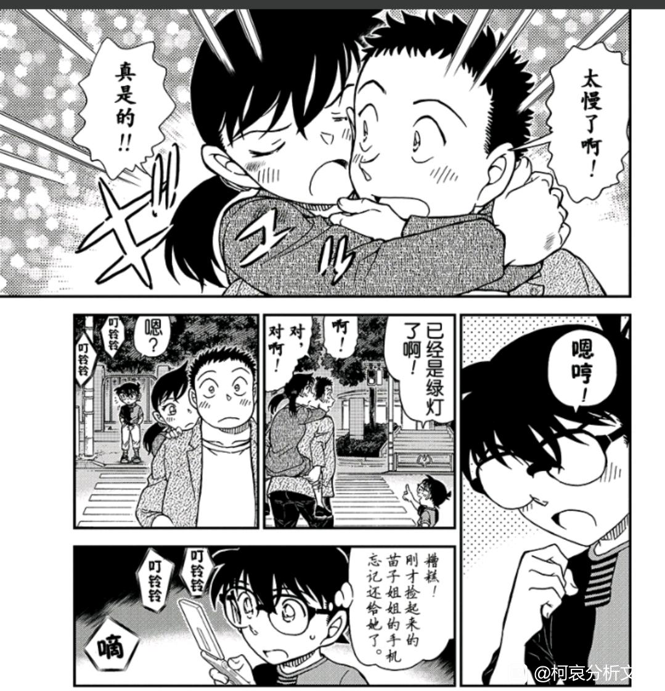
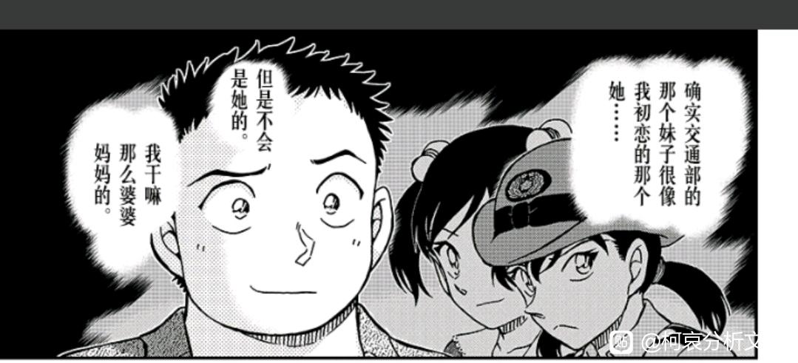
2024-10-11 23:13 | 清茶姑娘:个人也觉得小哀没认出柯南2024-10-14 15:47 | 重来的记忆9:小哀也对小柯说过“太慢了”2025-06-29 11:13 | 自作主张阿萨德:其实认出来也不影响，认出来可能只是增加好奇感和好感，不直接影响感情2025-09-22 01:16 | 谁来剪月光50:回复 重来的记忆9 :太慢了是等柯南的时候说的 还有就是说迟钝2025-09-22 01:17 | 谁来剪月光50:回复 自作主张阿萨德 :主要是初遇的时候发生了什么而不是莫名其妙的就初恋这就有点损美感了
再吐槽一下秀一，秀一接到了保护由美的任务，然后杀气腾腾地跟踪别人，弄得由美都有酒厂雷达了（不是），这也再次说明秀一平时就开着“酒气”，比较阴暗，这种感觉怕是在酒厂没倒台前救不了了。
安室本案也打了酱油，只卖了一点透梓（来自青山），并再次提到了红茶会，这里倒是可以验证一下之前红茶论的猜想是否可行：
【上次那件事怎么样了】
（上次红茶会你说要向朗姆报告新一活着，朗姆有什么动作吗）
【还没动静呢】
（朗姆知道新一活着却也暂时没动静，只是不再有time is money催催催短信了）
【别忘记报告，波本】
（波本身份收到任何动静快和我说）
好像挺合适的，而且“还没动静”解释得挺不错，这个猜想应该确实可行。（黑田在红修之后也知道新一活着，但是并不知道柯南是新一）
安室本案也打了酱油，只卖了一点透梓（来自青山），并再次提到了红茶会，这里倒是可以验证一下之前红茶论的猜想是否可行：
【上次那件事怎么样了】
（上次红茶会你说要向朗姆报告新一活着，朗姆有什么动作吗）
【还没动静呢】
（朗姆知道新一活着却也暂时没动静，只是不再有time is money催催催短信了）
【别忘记报告，波本】
（波本身份收到任何动静快和我说）
好像挺合适的，而且“还没动静”解释得挺不错，这个猜想应该确实可行。（黑田在红修之后也知道新一活着，但是并不知道柯南是新一）
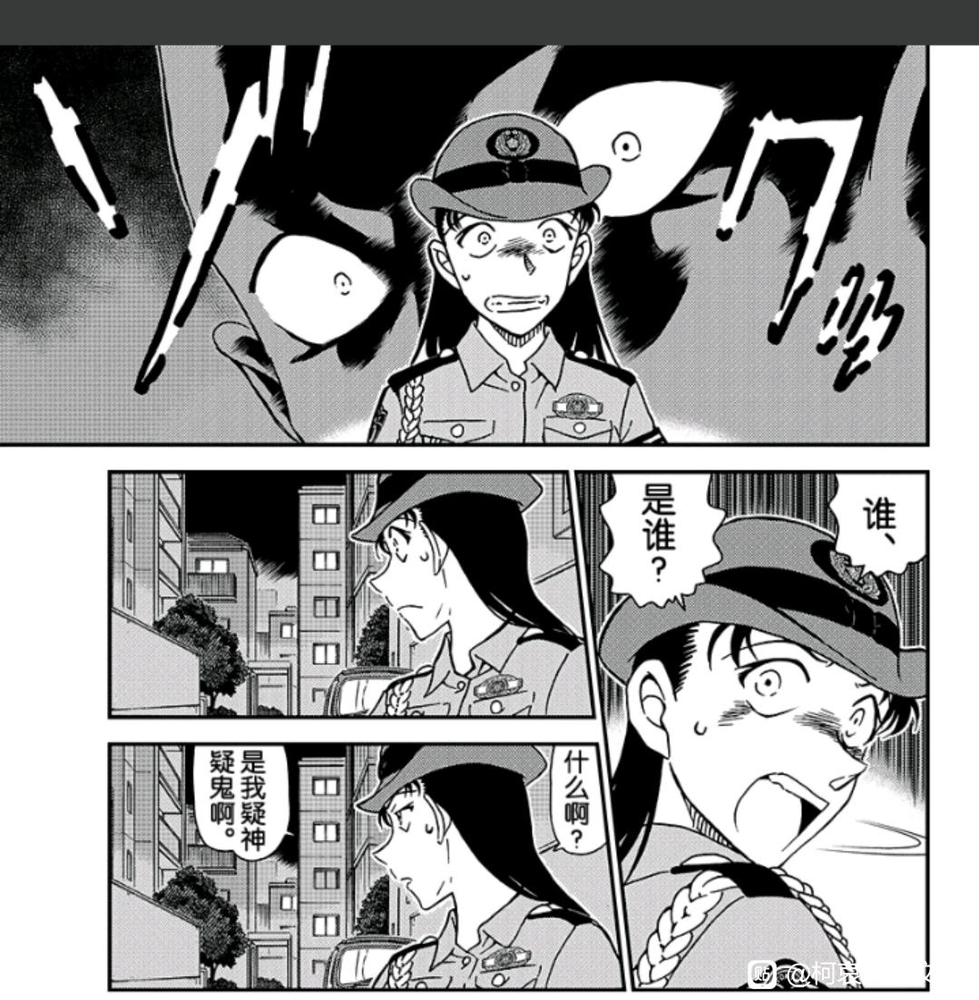
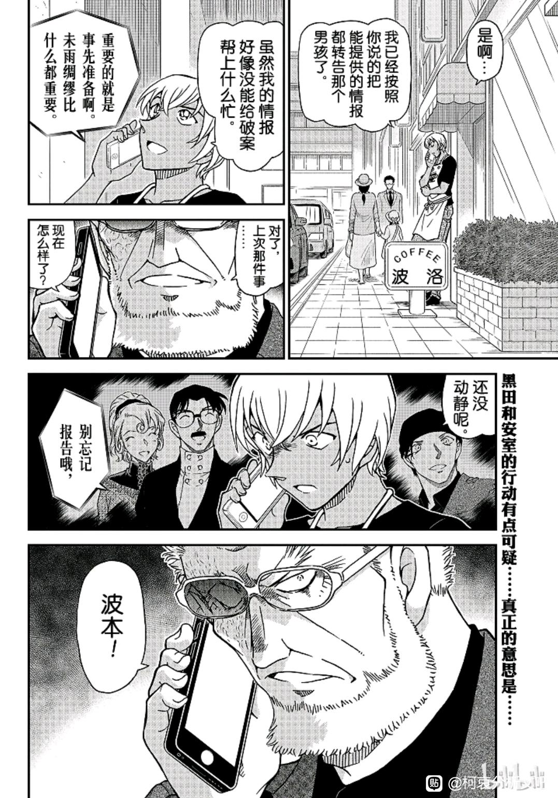
2024-10-13 12:37 | 平者深黑:由美不是感觉到犯人吗？2024-10-13 12:55 | 🌐之徙:回复 平者深黑 :是秀一，后面鞋子是秀一的鞋，犯人始终没有找到由美2024-10-13 16:00 | 平者深黑:回复 🌐之徙 :这小黑眼睛下面还有线，确实
cy
3、必须要嘴对嘴才算：妖精之唇
主线上，妖精之唇让高明知道了弟弟的死讯；而感情线上，红修之后的第一个平和事件，也隐藏着作者的独特思路。
现在我们知道，平和是一定要表白的，而且必须要彻底摆脱新兰伦敦/红修的影响，变成服部自己的表白。因此，在真正表白前，作者就有必要让服部经历比红修前更多的困难，【妖精之唇】的考验，红叶的“甜蜜圈套”，小兰的强行干预等等，只有将平和告白中的新兰因素彻底抹除，告白才能成功。
而【妖精之唇】，就是服部所遇到的第一个困境，他首先要打破刚刚发生的红修新兰亲脸（服部视角为亲嘴），因此服部的模仿将遭到惨痛的失败，被基德完全打败。
另一方面，【妖精之唇】借服部之口，已经告诉读者【要嘴对嘴才算】，亲侧脸只是单方面的行为，嘴对嘴则是双方的行为，这里已经直白地告诉读者：红修的亲脸，什么都不算。
服部对亲吻有种各种幼稚而热烈的期待，新一一点也没有。
主线上，妖精之唇让高明知道了弟弟的死讯；而感情线上，红修之后的第一个平和事件，也隐藏着作者的独特思路。
现在我们知道，平和是一定要表白的，而且必须要彻底摆脱新兰伦敦/红修的影响，变成服部自己的表白。因此，在真正表白前，作者就有必要让服部经历比红修前更多的困难，【妖精之唇】的考验，红叶的“甜蜜圈套”，小兰的强行干预等等，只有将平和告白中的新兰因素彻底抹除，告白才能成功。
而【妖精之唇】，就是服部所遇到的第一个困境，他首先要打破刚刚发生的红修新兰亲脸（服部视角为亲嘴），因此服部的模仿将遭到惨痛的失败，被基德完全打败。
另一方面，【妖精之唇】借服部之口，已经告诉读者【要嘴对嘴才算】，亲侧脸只是单方面的行为，嘴对嘴则是双方的行为，这里已经直白地告诉读者：红修的亲脸，什么都不算。
服部对亲吻有种各种幼稚而热烈的期待，新一一点也没有。
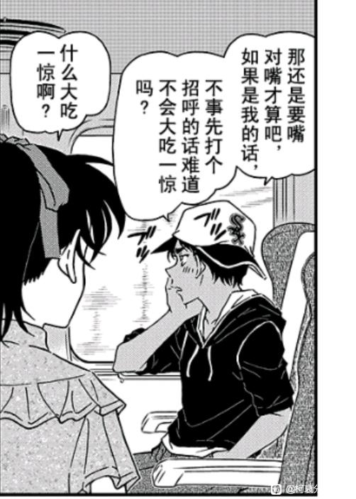
2024-10-12 23:40 | 清茶姑娘:现在想想，虽然恋爱中平次有时候带了降智行为，但他就是比新一幸福得多2024-10-14 09:55 | 上総守信長ºº:就觉得右上服部台词怪怪的，一查原文真没绷住
朗姆酒是海盗之酒，这种酒以其独特的辛辣口感和与加勒比海地区紧密的历史联系而闻名。
妖精之唇篇将加勒比与耶稣受难的标志建立起了联系，影射了108卷朗姆“杀死新一”。
妖精之唇篇将加勒比与耶稣受难的标志建立起了联系，影射了108卷朗姆“杀死新一”。
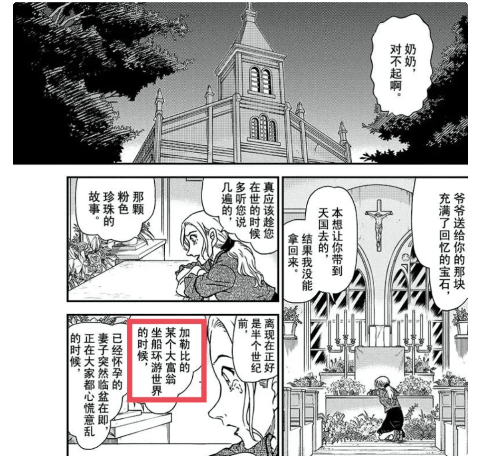
2024-10-12 23:42 | 清茶姑娘:今天大数据居然给我推∠÷在反吧发疯，那个标题就是嚷嚷什么“天天说主线，主线到底演了个什么”来对抗CA，然后想到如今已经106卷了，距离108很近然后好兴奋(*^_^*)2024-10-13 00:03 | 🌐之徙:确实，这里的圣子象非常具体，应该是天主教堂（拉美就是天主教为主，也就是整个朗姆派系）2024-10-13 00:29 | 荆筱譞:回复 清茶姑娘 :xhs有些柯南相关评论给我整无语了，居然信誓旦旦说“柯南没有主线哦”之类的，一看就是角÷知道她根本进不了主线，直接开始洗脑了2024-10-13 11:01 | 清茶姑娘:回复 荆筱譞 :∠÷越来越魔怔和抽象了，这副不把∠当天下第一供着就相当于没有的架势，啧啧( ╯□╰ )
快斗并不认识和叶，所以其假扮的和叶相当变形，那么，快斗是以谁为模板进行扮演呢？
答案显而易见：这是M23的小兰。
【以胸夹手】是小兰的特殊技能，快斗深受其害，在M23结尾就是小兰这样夹着他，由于快斗根本没有和叶的数据库，他只好用小兰的数据库代替一下。
当然，根本不像和叶，但是服部上当了，正如柯南也会因为小兰在红修的夹手而感到“这也太幸福了”，服部也踏入同一圈套，【以胸夹手】所带来的，就是虚假的幸福，快斗是为了欺骗，小兰也是为了第二天的冲田战术。
于是，借助快斗，红修的又一个新兰互动被解构得干干净净。
答案显而易见：这是M23的小兰。
【以胸夹手】是小兰的特殊技能，快斗深受其害，在M23结尾就是小兰这样夹着他，由于快斗根本没有和叶的数据库，他只好用小兰的数据库代替一下。
当然，根本不像和叶，但是服部上当了，正如柯南也会因为小兰在红修的夹手而感到“这也太幸福了”，服部也踏入同一圈套，【以胸夹手】所带来的，就是虚假的幸福，快斗是为了欺骗，小兰也是为了第二天的冲田战术。
于是，借助快斗，红修的又一个新兰互动被解构得干干净净。
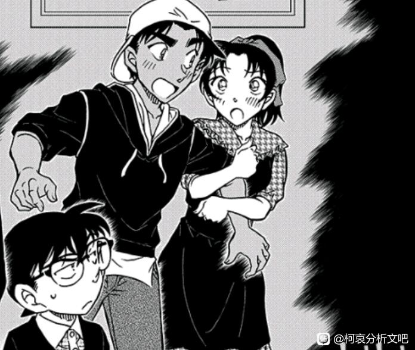
2024-10-12 23:44 | 清茶姑娘:红修里的新一……虽然这么说可能有点油，但青春期的少年被这么撩有点生理反应也正常，∠居然就把这个当战术，啧啧……2024-10-13 04:45 | dldfj114514:手机版划到底，看见这个和叶🐻夹手，感觉不对劲，一看标题果然是基德那一次
在【妖精之唇】中，小兰的态度也有所变化。
红修之前，小兰总体而言越来越关心平和，并受到平和多次告白的刺激，加紧自己的红修计划。
红修之后，小兰“名分已定”，于是她不再能感受到平和关系进展的压力，反过来，她开始自作聪明地“维护和叶的自信心”，为此小兰甚至没有将红修告诉和叶（当然后来没忍住），只是继续重复着“恋爱预感”。
和叶则明显已经开始抗拒小兰的“预感”了，如果说服部这边，困难来自于自己的攀比，那么和叶这里的最大困难就是小兰的干涉，这一干涉的高潮是红莲骷髅，小兰的负面效果远远大于红叶。
似乎青山在一开始，就准备让最后平和告白时小兰被和叶主动支开，所以用一个又一个案件消磨和叶对“恋爱预感”的耐心，通过日常的积累，小兰对恋爱的妨碍将逐渐深入人心，这就是红修之后青山对小兰的主要态度：为小兰施加越来越多的负面特质。
红修之前，小兰总体而言越来越关心平和，并受到平和多次告白的刺激，加紧自己的红修计划。
红修之后，小兰“名分已定”，于是她不再能感受到平和关系进展的压力，反过来，她开始自作聪明地“维护和叶的自信心”，为此小兰甚至没有将红修告诉和叶（当然后来没忍住），只是继续重复着“恋爱预感”。
和叶则明显已经开始抗拒小兰的“预感”了，如果说服部这边，困难来自于自己的攀比，那么和叶这里的最大困难就是小兰的干涉，这一干涉的高潮是红莲骷髅，小兰的负面效果远远大于红叶。
似乎青山在一开始，就准备让最后平和告白时小兰被和叶主动支开，所以用一个又一个案件消磨和叶对“恋爱预感”的耐心，通过日常的积累，小兰对恋爱的妨碍将逐渐深入人心，这就是红修之后青山对小兰的主要态度：为小兰施加越来越多的负面特质。
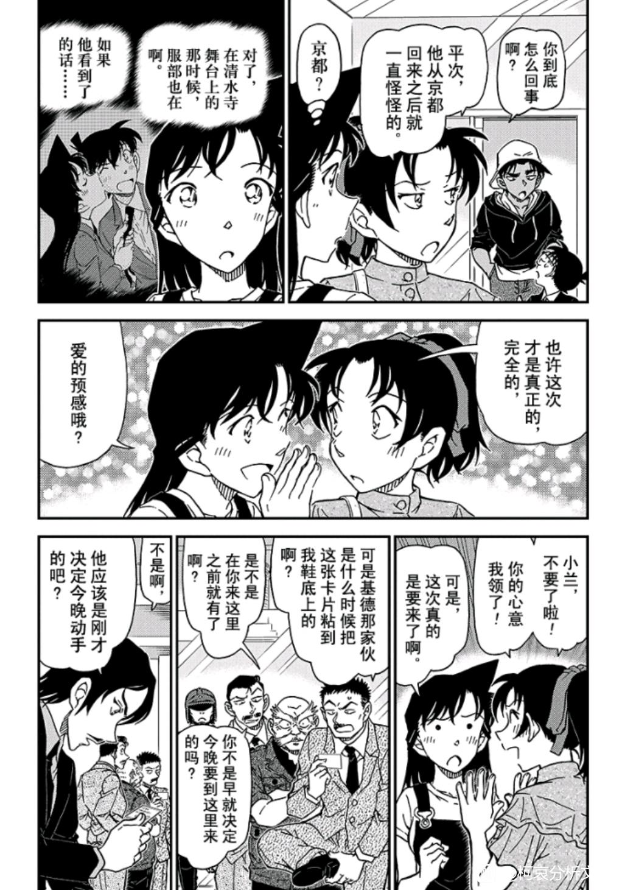
2024-10-12 23:46 | 清茶姑娘:对∠是一种八卦和干涉别人的kuai感2024-10-14 02:32 | 清茶姑娘:回复 大水魚誒 :得亏了和叶有修养2024-10-26 15:50 | 清茶姑娘:回复 大水魚誒 :典型的表演性人格，但问题是人家别的表演型人格，比如穷摇NN，自己也努力工作，然后表演出想要的东西来，∠是自己不求上进总是幻想着依靠别人获得表演后被关注的kuai，所以死拽着新一不放手2025-07-06 20:03 | Wf_yjqd:都说了“你的心意我领了”不会听不出已经是客套话了吧2026-01-14 22:56 | sj869277:回复 Wf_yjqd :不好说哦，红叶挑战书那里，红叶讽刺她，她还一脸高兴的接茬2026-01-14 22:56 | sj869277:这就跟狼来了一样，来太多了
服部认不出和叶，虽然可以理解，但是仍然不应该。在名柯里，真正朝夕相处的人，是不会认不出彼此的，例如和叶就能无限认出服部。
不过，柯南却有别的解释，他认为，“服部因为和叶变成笨蛋侦探了”，这并不代表名柯的设定（服部只是被攀比心冲昏了头，并不是笨了），只代表柯南个人的想法，也就是柯南认为侦探因为在意的女生而混乱，是理所当然的。
但是，柯南从未因为小兰而有这种“笨蛋”感，不论新出还是冲田，均未能击破柯南的逻辑链，反倒是柯南完全推理不出小哀的心思，导致了月台追妻等名场面。
现在，柯南自己认为服部是“因为和叶所以笨蛋”，那么他自己呢？能让柯南本人变成笨蛋的角色，自然将获得“侦探真正在意的人”的位置，可选项仅有小哀一人，戎桥事件等同于月台追妻，是保护欲过强导致的推理失败；妖精之唇等同于泡沫蒸汽烟，因为起了攀比心于是逻辑崩坏。
柯南已经意识到了让他变成笨蛋侦探的人是谁了。
不过，柯南却有别的解释，他认为，“服部因为和叶变成笨蛋侦探了”，这并不代表名柯的设定（服部只是被攀比心冲昏了头，并不是笨了），只代表柯南个人的想法，也就是柯南认为侦探因为在意的女生而混乱，是理所当然的。
但是，柯南从未因为小兰而有这种“笨蛋”感，不论新出还是冲田，均未能击破柯南的逻辑链，反倒是柯南完全推理不出小哀的心思，导致了月台追妻等名场面。
现在，柯南自己认为服部是“因为和叶所以笨蛋”，那么他自己呢？能让柯南本人变成笨蛋的角色，自然将获得“侦探真正在意的人”的位置，可选项仅有小哀一人，戎桥事件等同于月台追妻，是保护欲过强导致的推理失败；妖精之唇等同于泡沫蒸汽烟，因为起了攀比心于是逻辑崩坏。
柯南已经意识到了让他变成笨蛋侦探的人是谁了。
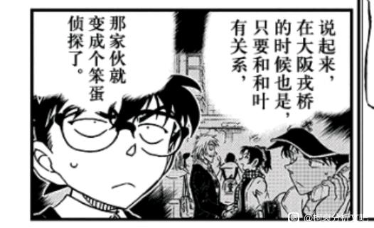
2024-10-23 17:46 | 贴吧用户_0CCSe2P:月台追妻含金量上升啊2025-08-01 00:47 | 贴吧用户_aQa49J6:整个逻辑是男生看不出女生的心思，但是女生能看出男生的心思（或伪装），对男生很了解
和叶是有点生气的，她认为服部一定要认出她来才对，所以各种质问。
于是又形成了对比，我们能够发现，柯南对小兰认不出自己这件事，是非常无所谓的。
近的如M23，感叹两句就算了，远的则可追溯到危命。柯南似乎从未对小兰有什么诉求，永远将小兰“认不出来”当场客观条件。危命时小兰说自己没认出来，新一如果能向现在和叶那样提出索求，也许新兰关系还不至于下降那么快。这一种占有欲，新一从未拥有。
这里固然有柯南本人需要隐瞒小兰的客观需要，但是主观上，应当归结于小兰的大量代餐，既然不论新一如何努力，都只会抽象为“推理狂”的特征，而小兰可以将任意人当做新一，那么所谓的占有其实根本就占不住，柯南自然就放弃掉了。
要是没有形成关系，那也就无所谓了，可是，已经是男女朋友，小兰是希望新一回来，但新一好像从来不需要小兰做任何事情，不需要情绪价值也不需要小兰的行动，这样的情侣关系，真的可以维持吗？
于是又形成了对比，我们能够发现，柯南对小兰认不出自己这件事，是非常无所谓的。
近的如M23，感叹两句就算了，远的则可追溯到危命。柯南似乎从未对小兰有什么诉求，永远将小兰“认不出来”当场客观条件。危命时小兰说自己没认出来，新一如果能向现在和叶那样提出索求，也许新兰关系还不至于下降那么快。这一种占有欲，新一从未拥有。
这里固然有柯南本人需要隐瞒小兰的客观需要，但是主观上，应当归结于小兰的大量代餐，既然不论新一如何努力，都只会抽象为“推理狂”的特征，而小兰可以将任意人当做新一，那么所谓的占有其实根本就占不住，柯南自然就放弃掉了。
要是没有形成关系，那也就无所谓了，可是，已经是男女朋友，小兰是希望新一回来，但新一好像从来不需要小兰做任何事情，不需要情绪价值也不需要小兰的行动，这样的情侣关系，真的可以维持吗？
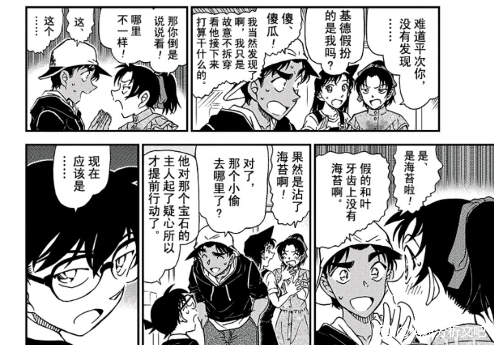
2024-10-12 23:57 | 清茶姑娘:因为这个男女朋友的形成过程本身就槽点满满吧，至少在新一这里从没有真正重视起来（指心灵方面，青春少年偶尔荷尔蒙涌动不算什么，街上看到美女一样有这个效果）
4、替身京极真：风雨飘摇的危命诡计
红修之后，仅仅四案，小兰就不得不遭受世良的无情揭露，世良开始正面挑破新柯同体的信息，以至于小兰在短期内几乎陷入迷茫，最终仅能找到危命一条救命稻草，勉力维护自己的世界观。
（需要说明的是，这时世良并不是为小兰出谋划策，她只是通过小兰试图诈柯南更多A药信息而已，当世良发现柯哀已经通过危命伪装完毕，即不再以此渠道对小兰进行“提醒”）
尽管这是世良的意外提醒，但小兰的确抓住了主要矛盾：【危命是新柯不同人的唯一证据】，再加上最新的波洛代理店长+和叶妈的连环口罩，可以说青山正在逐步让小兰拥有再次引发身份危机的能力，并随着朗姆调查新一和老头调查柯南而层层逼近真相。
在这一方面，青山很舍得给小兰微表情，可以发现小兰非常害怕面对新柯同体这一真相，这次有危命，要是危命已经被揭露呢？
红修之后，仅仅四案，小兰就不得不遭受世良的无情揭露，世良开始正面挑破新柯同体的信息，以至于小兰在短期内几乎陷入迷茫，最终仅能找到危命一条救命稻草，勉力维护自己的世界观。
（需要说明的是，这时世良并不是为小兰出谋划策，她只是通过小兰试图诈柯南更多A药信息而已，当世良发现柯哀已经通过危命伪装完毕，即不再以此渠道对小兰进行“提醒”）
尽管这是世良的意外提醒，但小兰的确抓住了主要矛盾：【危命是新柯不同人的唯一证据】，再加上最新的波洛代理店长+和叶妈的连环口罩，可以说青山正在逐步让小兰拥有再次引发身份危机的能力，并随着朗姆调查新一和老头调查柯南而层层逼近真相。
在这一方面，青山很舍得给小兰微表情，可以发现小兰非常害怕面对新柯同体这一真相，这次有危命，要是危命已经被揭露呢？
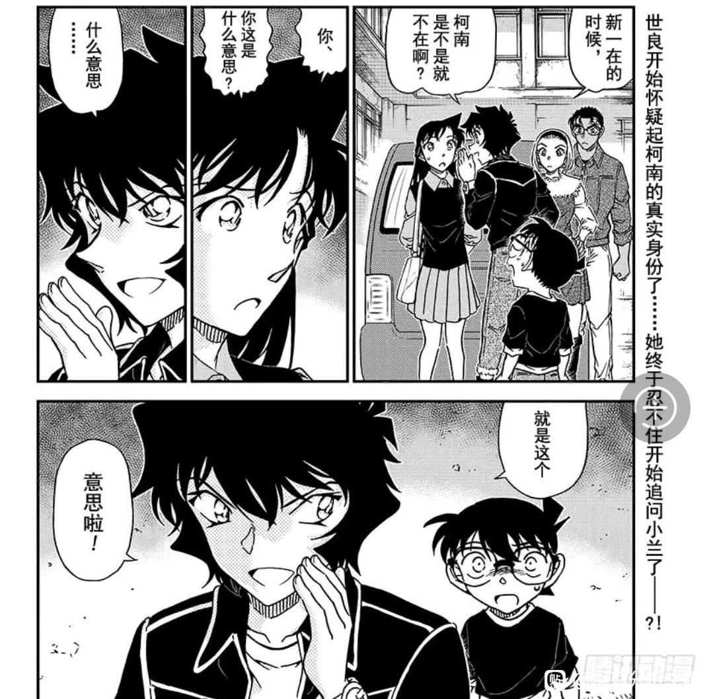
2024-10-13 23:45 | 清茶姑娘:其实这里有点对世良不满，她很怕别人揭露她的秘密，可是追着揭别人的秘密，有点自私2024-10-17 03:18 | 解毒剂😄:回复 清茶姑娘 :世良学的是mi6的老妈，情报人员的攻击性远比一般的侦探强得多，反映在世良身上就是不断刺探别人的秘密并保护自己的秘密。2024-10-17 11:02 | 清茶姑娘:回复 解毒剂😄 :赤井也是情报人员，茱蒂也一样，就没有世良给人的这种双标感2024-10-18 20:05 | 解毒剂😄:回复 清茶姑娘 :FBI本职是警察，不是对外情报机构，跟MI6对应的是CIA，但本作中我印象里的CIA就一个很微妙的水无怜奈2024-11-02 22:55 | long126zhen:回复 清茶姑娘 : 她妈也这样，灰原哀是她外甥女，世良见过灰原甚至见过志保，灰原还和玛丽共享一张脸，证据都甩脸上了，就不认，宁可偷柯南的。明知道爱莲娜被害了，药被抢了喂给自己吃了，现在竟然有解药了，愣不往明美、志保身上想。不过倒也不是个例，秀一这亲儿子她也不认，已经是一大槽点了2024-11-02 23:04 | long126zhen:回复 清茶姑娘 : 另外一大槽点是玛丽依然和MI6保持联络，能调动MI6在日本的势力，也没什么上级，实际上是红方最大实权派之一。但她这个行动模式实在是小家子气，对主线的干涉度约等于0，就一门心思偷药，仿佛只要身体变大就能解决问题一样，世良没有想法，妈妈说什么是什么，两大奇葩
这里有两种可行的思路，下面仅代表个人观点：
思路A：在新一“假死”之前，小兰对危命诡计发生怀疑，再度猜测新柯是同一人，这时柯哀等人通过假死或其他手段又一次骗了小兰。具体做法是【再次新柯同框，但志保假扮新一，柯南带口罩，当小兰揭开柯南口罩后，只会看见柯南本人，从而加固危命】（这一手法优作扮演猫哥时也用过，的确可以延缓身份的暴露）
思路B：小兰借助种种信息，正确推断出新柯同一人，并直接走向分手和结局，则这一思路中小兰的战线会比较长，在相当一段时间内不会引发身份危机，只是会在结局附近矛盾爆发。
我个人是倾向于可能性1，不过目前来讲，小兰仍然缺少变声器信息。口罩变声器只有安室拥有直接信息，但平和曾经用面具执行变声，也可认为是间接信息，小兰本人显然也意识到【变声】是问题关键并惊叹于和叶妈妈声音与和叶一致，接下来的蛇年剧情，大可以期待小兰的表现。
思路A：在新一“假死”之前，小兰对危命诡计发生怀疑，再度猜测新柯是同一人，这时柯哀等人通过假死或其他手段又一次骗了小兰。具体做法是【再次新柯同框，但志保假扮新一，柯南带口罩，当小兰揭开柯南口罩后，只会看见柯南本人，从而加固危命】（这一手法优作扮演猫哥时也用过，的确可以延缓身份的暴露）
思路B：小兰借助种种信息，正确推断出新柯同一人，并直接走向分手和结局，则这一思路中小兰的战线会比较长，在相当一段时间内不会引发身份危机，只是会在结局附近矛盾爆发。
我个人是倾向于可能性1，不过目前来讲，小兰仍然缺少变声器信息。口罩变声器只有安室拥有直接信息，但平和曾经用面具执行变声，也可认为是间接信息，小兰本人显然也意识到【变声】是问题关键并惊叹于和叶妈妈声音与和叶一致，接下来的蛇年剧情，大可以期待小兰的表现。
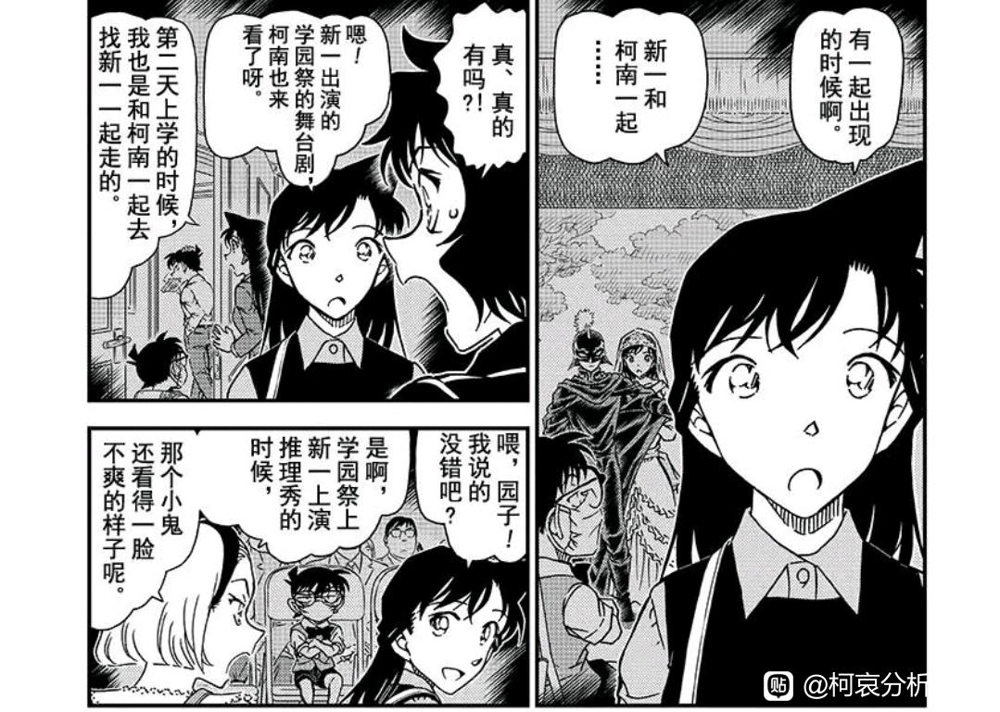
2024-10-13 23:46 | 清茶姑娘:同投方案A一票2024-10-14 10:04 | 上総守信長ºº:方案A一票2024-10-16 22:30 | QuantumEntangl:投思路A2024-10-16 23:37 | 内的裤_:堂堂柯女一，所有人都默认她没有对真相的知情权，也是抽象2024-10-17 12:02 | 乐以轩🌟:我倾向于让基德来假扮新一吧，志保假扮新一风险太大了，红修世良就来捏过新一的脸，万一又来一次不是直接穿帮了吗？2024-10-17 12:31 | 🌐之徙:回复 乐以轩🌟 :世良有求于柯南，她应该不会闹事的（相反很可能会帮助小兰去怀疑口罩柯南）2025-06-29 14:40 | 自作主张阿萨德:志保假扮不了新一身材 身高都是问题2025-09-22 15:28 | 谁来剪月光50:回复 自作主张阿萨德 :这不是问题吧 那个琴酒开柜柯南那里有人说是贝姐扮琴酒呢2025-12-21 12:31 | 贴吧用户_JJJeGeW:回复 自作主张阿萨德 :贝姐那么大还假扮秀一呢
当然，“新柯同体”和“新兰分手”是两件事，即使小兰知道了真相，也未必会分手。
不过，漫画已经明确说明，对于“变化”的男友，小兰并不会有多大的坚持。
如下图所示，京极真又一次变成嫌疑人，园子十分急，而且思路正确【那一定有什么机关】，与死罗神的服部是一个思路，小兰呢？小兰居然在劝园子冷静。
（可以对比上次操哥处理的保龄球案，当时小兰是和园子一起为京极真辩护的）
为什么小兰的态度有这些变化呢？当然是因为上次是操哥胡乱弄的，这次京极真却是正儿八经的嫌疑人，而小兰面对死罗神事件都能果断抛弃新一，自然推己及人觉得园子不用那么急。
因此可以设想，假如柯南身份被小兰揭穿，小兰会保持现在对新一的态度吗？大概率不会，因为这时的新一将变成受到黑组追杀的危险者，小兰的抛弃恐怕是可以预见的。
不过，漫画已经明确说明，对于“变化”的男友，小兰并不会有多大的坚持。
如下图所示，京极真又一次变成嫌疑人，园子十分急，而且思路正确【那一定有什么机关】，与死罗神的服部是一个思路，小兰呢？小兰居然在劝园子冷静。
（可以对比上次操哥处理的保龄球案，当时小兰是和园子一起为京极真辩护的）
为什么小兰的态度有这些变化呢？当然是因为上次是操哥胡乱弄的，这次京极真却是正儿八经的嫌疑人，而小兰面对死罗神事件都能果断抛弃新一，自然推己及人觉得园子不用那么急。
因此可以设想，假如柯南身份被小兰揭穿，小兰会保持现在对新一的态度吗？大概率不会，因为这时的新一将变成受到黑组追杀的危险者，小兰的抛弃恐怕是可以预见的。
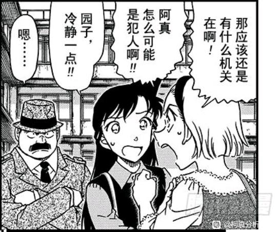
2024-10-13 23:54 | 清茶姑娘:尤其是假如黑组扮好人说点新一的坏话（还有卧底帮忙验证），∠分分钟把新一打包送走2024-11-02 23:09 | long126zhen:回复 清茶姑娘 : 没这么麻烦，只要黑方假扮，甚至不用假扮，找个警方卧底拿工藤新一失踪案件去套话，小兰知无不言的2025-01-22 23:52 | Yao_CPT:這對比也是妥妥的，就mll沒幫新一說話
小兰的保密能力当然也是一如既往，直接就给世良又强调了一遍小哀信息。
（此前，世良只知道小哀处于柯南的核心保护区，还不知道小哀的性格特点，但小兰这么一说，世良马上就知道小哀也是变小的了，世良的偷药进度取得重大进展）
而柯南就很急了，连光彦都搬出来，誓要转移注意力，但这在世良看来显然又是“欲盖弥彰”的行为，不但世良看出来，小兰园子肯定也能看出来，在满月篇【四台保时捷】，朱蒂代替世良现在的位置，有过几乎一模一样的剧情。
（发生这段剧情时，小哀正穿着柯南蓝色古堡的衣服）
此处保持红修后的风格，继续提及小哀的父母研究，可以发现A药的确是被小哀父母研究过的，甚至也许已经有成品，但宫野夫妇最后似乎并未交付A药，只交付了银色子弹，A药则被焚毁（后被小哀“复活”）。
一种合理的设想是，A药一开始的“令死者复活”，并不是真的复活尸体，而是让身患绝症的将死之人获得新生（例如癌细胞死亡），因此成了宫野两代人的梦想，然而乌丸用A药有别的目的，因此宫野夫妇选择焚毁A药资料，又开发了克制组织的“银色子弹”，但是A药的信息仍然不多，因此上述仅做发散思考。
（此前，世良只知道小哀处于柯南的核心保护区，还不知道小哀的性格特点，但小兰这么一说，世良马上就知道小哀也是变小的了，世良的偷药进度取得重大进展）
而柯南就很急了，连光彦都搬出来，誓要转移注意力，但这在世良看来显然又是“欲盖弥彰”的行为，不但世良看出来，小兰园子肯定也能看出来，在满月篇【四台保时捷】，朱蒂代替世良现在的位置，有过几乎一模一样的剧情。
（发生这段剧情时，小哀正穿着柯南蓝色古堡的衣服）
此处保持红修后的风格，继续提及小哀的父母研究，可以发现A药的确是被小哀父母研究过的，甚至也许已经有成品，但宫野夫妇最后似乎并未交付A药，只交付了银色子弹，A药则被焚毁（后被小哀“复活”）。
一种合理的设想是，A药一开始的“令死者复活”，并不是真的复活尸体，而是让身患绝症的将死之人获得新生（例如癌细胞死亡），因此成了宫野两代人的梦想，然而乌丸用A药有别的目的，因此宫野夫妇选择焚毁A药资料，又开发了克制组织的“银色子弹”，但是A药的信息仍然不多，因此上述仅做发散思考。
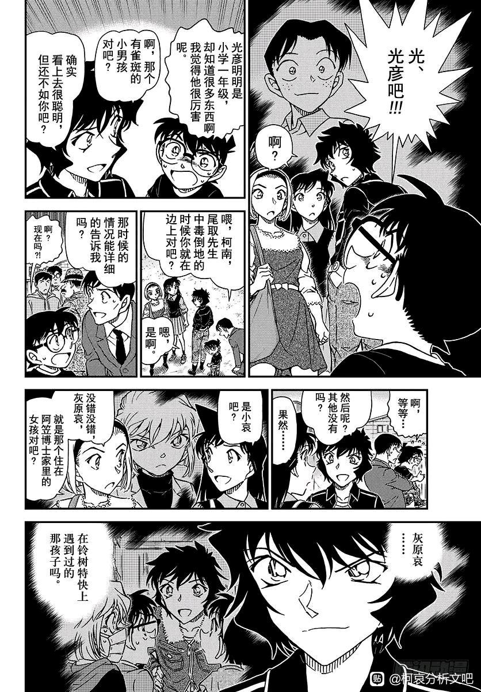
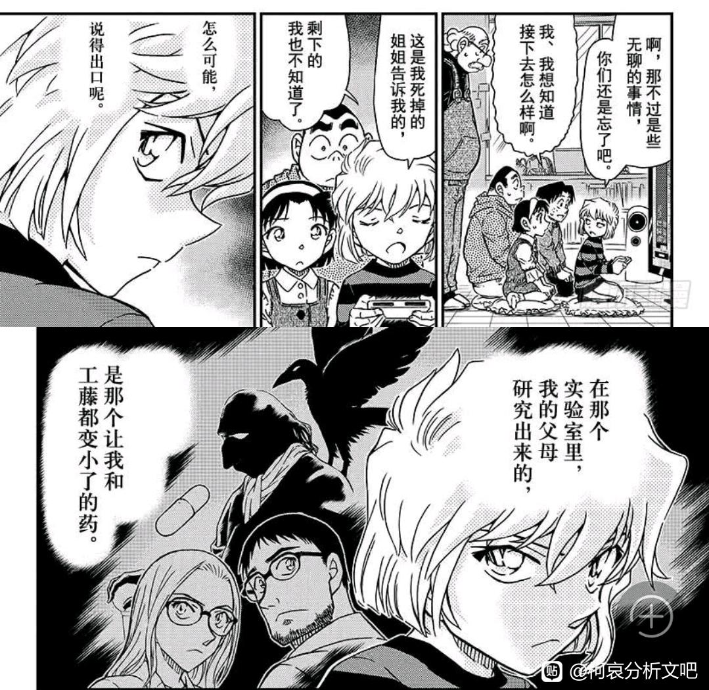
2024-10-13 23:55 | 清茶姑娘:这段剧情里柯南的急已经溢出了纸面2024-12-05 18:51 | 滦炐祐😁😁:哀：及时止损
本案最后，在小兰，世良和京极真的合力下，犯人的自杀被阻止。
（其实我觉得犯人开车撞墙估计死不了）
总之这是小兰为数不多的高光了，也是漫画到目前为止（平和告白）小兰倒数第二次正确用出空手道，甚至是小兰最后一次获得了正面评价的高光。
通常来讲这里被认为“小兰的未来职业是演员”的证据，由于漫画里实在没有小兰担任其他职业的线索，加之青山也认为小兰职业已定，那么演员概率的确是有的，只不过【不是偶像演员，而是武打演员】，武打演员，在喜新厌旧的导演下，很容易被替换，本案的死者戏份就几乎被京极真换掉了，正如名柯真正的导演青山把武打位上的小兰换成世良。
小兰借用服部妈的台词，还有一层作用：
【小兰在未来的剧情中，不可能自杀】
以小兰逃避问题的一贯思路，遇到新柯同体这种无法接受的局面，自杀绝对是一种逃避的好方法，但是青山提前布局了，让自杀这一行为变成小兰本人不可认同的，而且不是通过新一而是服部妈，说明小兰真的认同这一点，加固了这一精神。
这似乎可以说明，新兰的真正拆解，将会【直面问题】，而不采取逃避的方式，也只有这样，拆解才是干净而无后遗症的。
（其实我觉得犯人开车撞墙估计死不了）
总之这是小兰为数不多的高光了，也是漫画到目前为止（平和告白）小兰倒数第二次正确用出空手道，甚至是小兰最后一次获得了正面评价的高光。
通常来讲这里被认为“小兰的未来职业是演员”的证据，由于漫画里实在没有小兰担任其他职业的线索，加之青山也认为小兰职业已定，那么演员概率的确是有的，只不过【不是偶像演员，而是武打演员】，武打演员，在喜新厌旧的导演下，很容易被替换，本案的死者戏份就几乎被京极真换掉了，正如名柯真正的导演青山把武打位上的小兰换成世良。
小兰借用服部妈的台词，还有一层作用：
【小兰在未来的剧情中，不可能自杀】
以小兰逃避问题的一贯思路，遇到新柯同体这种无法接受的局面，自杀绝对是一种逃避的好方法，但是青山提前布局了，让自杀这一行为变成小兰本人不可认同的，而且不是通过新一而是服部妈，说明小兰真的认同这一点，加固了这一精神。
这似乎可以说明，新兰的真正拆解，将会【直面问题】，而不采取逃避的方式，也只有这样，拆解才是干净而无后遗症的。
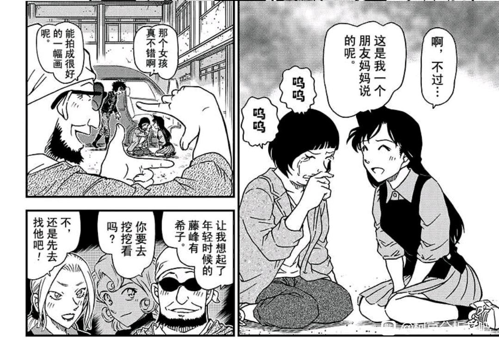
2024-10-13 23:10 | 红茶中的白兰地:犯人根本不想死，手上沾了毒药所以不敢碰东西，这哪是想死的人2024-10-13 23:57 | 清茶姑娘:∠顶多是替身吧，记得中华雨街根本不像是能流畅演戏的人，还被自己爹调侃说不好台词2024-11-02 23:22 | long126zhen:这里拿有希子做比我是不理解的，从之前有希子出演的各类作品以及强迫柯南演好一休的职业精神甚至偶然获得的黑暗男爵夫人形象来看，有希子绝对属于对角色有深刻理解的演技派，高知人群，颜值反倒是锦上添花。小兰就露点身手，再卖点亚撒西人设，是怎么看出有希子的影子的，离大谱
最后来看个小细节。
这里出现了【假面超人加入联盟】，将五位假面超人视为“票房关键”。
我们都知道，朗姆篇是有“假面超人梗”的，朗姆出场时“坏蛋身边的人出场”，若狭出场时“神秘的女战士加入假面超人”，那么这里五位日本假面超人，指代十分明显：
【在上一案中刚刚在漫画登场的警校五人组】
警校五人组是完全临时的概念，完全为“票房”或者漫画销量服务，和赤井一家这种与主线强相关的单位的确有很大的不同。青山也几乎不掩饰他“赚钱”的态度，在M25的两年漫画，警校五人组获得了大量剧情。
如果真的只是赚钱单位，那倒是简单了，不过青山仍然要加点料，重速CP的“你要感谢我啊”，松田与千速十三年前的暗恋关系，以及最近即将登场的警校五人组目击新兰吵架【棒球水管】剧情，都在为主CP进行服务，因此虽然这真的都是“赚钱”，但还是可以发现一些有趣的磕点和槽点的。
（警五番外我没看过，本帖不评价警五番外，只评价主漫画内的警五相关事件）
这里出现了【假面超人加入联盟】，将五位假面超人视为“票房关键”。
我们都知道，朗姆篇是有“假面超人梗”的，朗姆出场时“坏蛋身边的人出场”，若狭出场时“神秘的女战士加入假面超人”，那么这里五位日本假面超人，指代十分明显：
【在上一案中刚刚在漫画登场的警校五人组】
警校五人组是完全临时的概念，完全为“票房”或者漫画销量服务，和赤井一家这种与主线强相关的单位的确有很大的不同。青山也几乎不掩饰他“赚钱”的态度，在M25的两年漫画，警校五人组获得了大量剧情。
如果真的只是赚钱单位，那倒是简单了，不过青山仍然要加点料，重速CP的“你要感谢我啊”，松田与千速十三年前的暗恋关系，以及最近即将登场的警校五人组目击新兰吵架【棒球水管】剧情，都在为主CP进行服务，因此虽然这真的都是“赚钱”，但还是可以发现一些有趣的磕点和槽点的。
（警五番外我没看过，本帖不评价警五番外，只评价主漫画内的警五相关事件）
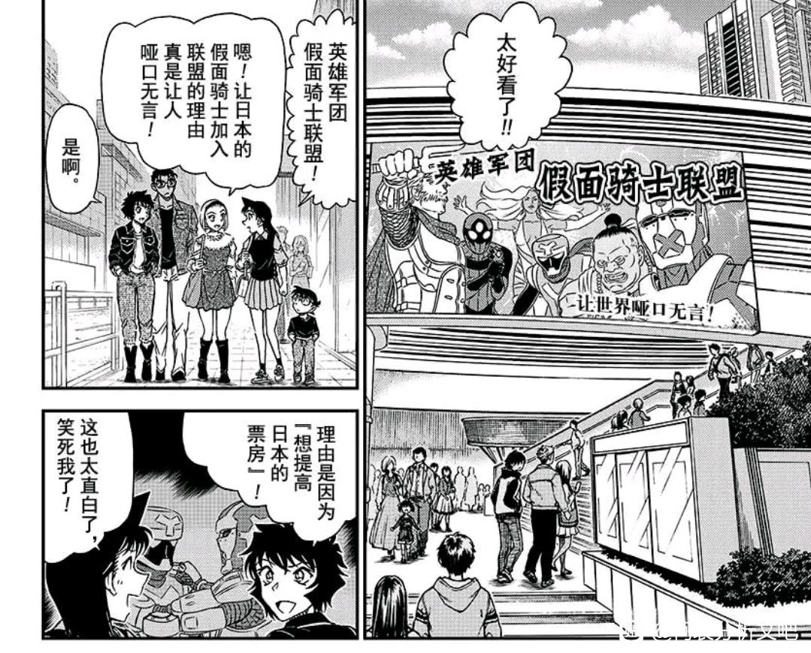
2024-10-13 23:59 | 清茶姑娘:柯南宇宙越来越庞大了2024-10-14 10:14 | 上総守信長ºº:回复 大水魚誒 :简中官译的质量是这样的，虽然上限低但下限更低明明原文是“忍俊不禁”的那种感觉，简中这个文本直接给弄成“头笑飞了”的调调
5、三十六宫事件：取得有限进展的朗姆
与小兰获得世良提醒同步，本案朗姆紧随其后，获得了新柯同身份的少量线索。
如图，朗姆注意到安室和柯南聊破案，开始对柯南产生一定兴趣，这里需要注意的是柯南此时被朗姆注视的视角：
【和红修时新一留下的目击照片几乎是完全同位的】
即使朗姆已经老花眼，但毕竟他也是曾经有很好的眼睛，柯南和新一的相似性马上摆在朗姆眼前，急性子的他急忙向“忠诚”的波本询问。
不过，朗姆毕竟没有A药的完整信息，只有一些捕风捉影，但这件事仍可能激起朗姆的怀疑，如果根据上一节所说，小兰的再一次身份危机会被柯哀联手欺骗，那么这次欺骗就不只是骗小兰，同时还是骗朗姆，将新柯身份彻底斩断，以造成新一虽死而柯南安全的好局面。
与小兰获得世良提醒同步，本案朗姆紧随其后，获得了新柯同身份的少量线索。
如图，朗姆注意到安室和柯南聊破案，开始对柯南产生一定兴趣，这里需要注意的是柯南此时被朗姆注视的视角：
【和红修时新一留下的目击照片几乎是完全同位的】
即使朗姆已经老花眼，但毕竟他也是曾经有很好的眼睛，柯南和新一的相似性马上摆在朗姆眼前，急性子的他急忙向“忠诚”的波本询问。
不过，朗姆毕竟没有A药的完整信息，只有一些捕风捉影，但这件事仍可能激起朗姆的怀疑，如果根据上一节所说，小兰的再一次身份危机会被柯哀联手欺骗，那么这次欺骗就不只是骗小兰，同时还是骗朗姆，将新柯身份彻底斩断，以造成新一虽死而柯南安全的好局面。
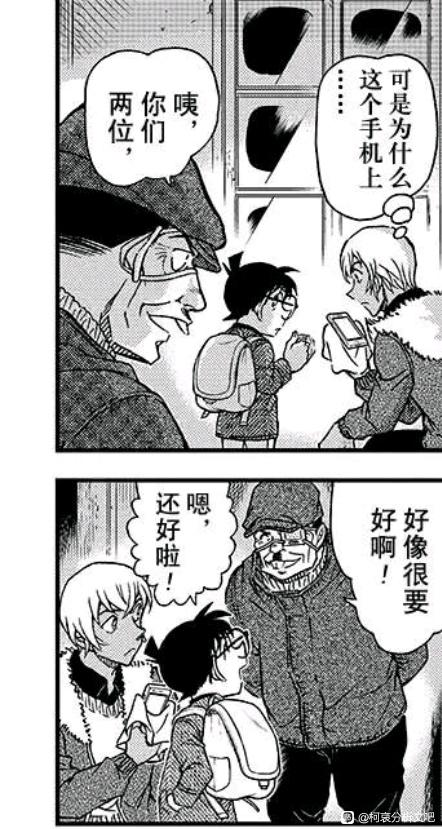
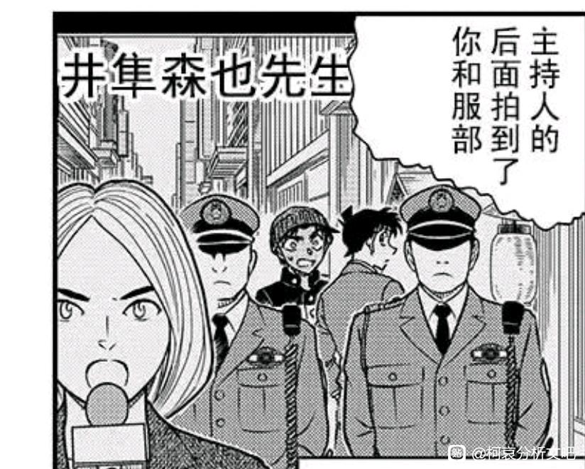
当然，朗姆获取的信息是不完整的，柯南可能是新一（之前推论认为，波本根据红茶会已经告诉朗姆新一没死），也可能是新一的远房亲戚。
万幸的是，不但安室进行了掩护，小五郎本案还超常发挥，使得朗姆并未深刻注意柯南是新一的问题。
只是，怀疑一但开始就总会有效果，朗姆的心腹宾加仍然查询了柯南＝新一的老若系统，这和朗姆的指挥恐怕脱不开关系，但是该系统已经被贝姐和琴酒证明为“垃圾系统”，暂时朗姆仍然只能把柯南当成小孩。
量变引起质变，随着后来柯南的种种行为，尤其是向朗姆隐瞒大量若狭信息的行为，加上朗姆在探索A药功能，朗姆再次注意柯南＝新一是很有可能的，到那时，来自小哀的计划也将启动。
既骗小兰，也骗朗姆，一起骗了。
万幸的是，不但安室进行了掩护，小五郎本案还超常发挥，使得朗姆并未深刻注意柯南是新一的问题。
只是，怀疑一但开始就总会有效果，朗姆的心腹宾加仍然查询了柯南＝新一的老若系统，这和朗姆的指挥恐怕脱不开关系，但是该系统已经被贝姐和琴酒证明为“垃圾系统”，暂时朗姆仍然只能把柯南当成小孩。
量变引起质变，随着后来柯南的种种行为，尤其是向朗姆隐瞒大量若狭信息的行为，加上朗姆在探索A药功能，朗姆再次注意柯南＝新一是很有可能的，到那时，来自小哀的计划也将启动。
既骗小兰，也骗朗姆，一起骗了。
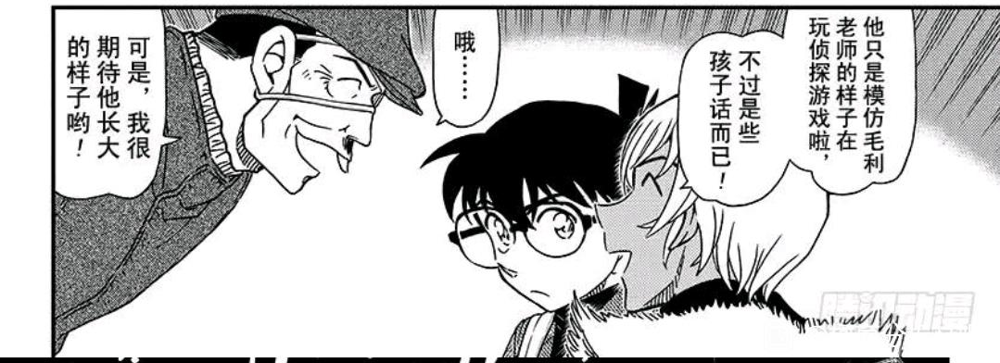
2024-10-14 23:14 | 清茶姑娘:朗姆的危险级别和∠是一样的2024-10-16 00:03 | 我有嘉賓00:我还不是柯哀党的时候就觉得这集小五郎很秀了。
我个人认为朗姆是没有对安室起怀疑的。
在M20，波本被库拉索认定“不是卧底”，同时库拉索提供的三个卧底名单均为真卧底，这足以让安室和水无度过本轮搜查，事实也是如此，安室水无经过搜查，权力反而变大了，水无受监视明显减少，海猿岛开小差也没人管，M26硬杠琴酒，琴酒也毫无办法，这两人位置已经坐稳了。
但是，朗姆又获得了“新一未死”的真情报，然而琴酒/伏特加/贝姐那边的渠道全部是新一已死，这就导致朗姆仍然怀疑有卧底，为此，朗姆必须也只能团结“忠诚”的波本去对抗琴酒阵线，至少波本也认为新一未死嘛。
试想，朗姆真怀疑波本，他这样乱说话只会让波本提高警惕，然而，如果朗姆是拉拢波本，那么闲用胁田身份营造一种“到处是卧底”的氛围，再以朗姆身份去信任波本，“到处都是卧底但你肯定不是”，用这种方法去试图获取波本的忠诚，应该是有效果的。
（结果波本真是卧底，乐）
在M20，波本被库拉索认定“不是卧底”，同时库拉索提供的三个卧底名单均为真卧底，这足以让安室和水无度过本轮搜查，事实也是如此，安室水无经过搜查，权力反而变大了，水无受监视明显减少，海猿岛开小差也没人管，M26硬杠琴酒，琴酒也毫无办法，这两人位置已经坐稳了。
但是，朗姆又获得了“新一未死”的真情报，然而琴酒/伏特加/贝姐那边的渠道全部是新一已死，这就导致朗姆仍然怀疑有卧底，为此，朗姆必须也只能团结“忠诚”的波本去对抗琴酒阵线，至少波本也认为新一未死嘛。
试想，朗姆真怀疑波本，他这样乱说话只会让波本提高警惕，然而，如果朗姆是拉拢波本，那么闲用胁田身份营造一种“到处是卧底”的氛围，再以朗姆身份去信任波本，“到处都是卧底但你肯定不是”，用这种方法去试图获取波本的忠诚，应该是有效果的。
（结果波本真是卧底，乐）
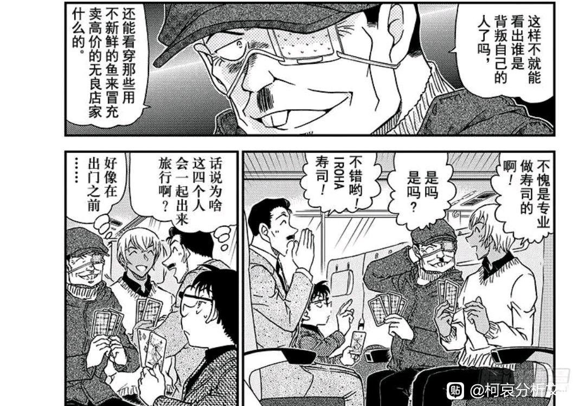
2024-10-14 23:18 | 清茶姑娘:同乐2024-11-13 01:05 | o晒嘴啊:就像電影門徒的毒犯，表面上試探威嚇是信任的意思，對懷疑對象是不動聲色的調查然後一下制服2024-11-13 11:36 | 江风一孤同:回复 🌐之徙 :琴酒在小黑鱼明显是失误（飘不飘另说）本来抓灰原就是计划外的行动，结果现在抓了人，不仅间接导致直美跑了，万一灰原真是雪莉，他要是再崩了水无，之前包括列车篇再会篇等所有行动牢琴都是有口难辩
关于高明的“一刻千金”，目前是没有很好的解释。
最简单的解释是“高明已经认出朗姆了”，但这也太随意，高明连弟弟死讯都要安室告知，却知道朗姆和口头禅？
还有一种是高明听说了胁田的名字，马上想到“时间就是金钱”，这个也不太靠谱，胁田自报家门时高明还在车里呢，大概率没听到。
朗姆独眼的信息也是大家都没有的，该信息只有小哀有，工安这边黑田和朗姆对线时朗姆双眼健在，可以说，工安唯一的线索就是“急躁”。
下面是我自己认为的高明此时逻辑：
【高明接到黑田电话，要他不要和降谷叙旧，且只要说出一刻千金，降谷也会明白高明这么做的理由】
（朗姆是核心秘密，高明非工安，黑田理论上不会对高明透底，而防止工安身份暴露是任何时候都要做的，不仅仅是针对胁田）
【高明有可能查过景光的手机，或者以前听景光说过，或者和景光有约定如手机开枪代表XXX，知道了景光有个急躁的上司天天time is money，高明立刻知道黑田和降谷就是在查这个坏人，所以增加了一些自己的理解】
（景光是殉职，这时高明也许已经认为，time is money这个人就是杀害弟弟的凶手）
于是高明就做到了在主线蹭蹭但没进去，目前高明还暂时是日常线人物，也许M28会对高明掌握的信息做一些揭露，但高明离前线应该说还有一些距离。
最简单的解释是“高明已经认出朗姆了”，但这也太随意，高明连弟弟死讯都要安室告知，却知道朗姆和口头禅？
还有一种是高明听说了胁田的名字，马上想到“时间就是金钱”，这个也不太靠谱，胁田自报家门时高明还在车里呢，大概率没听到。
朗姆独眼的信息也是大家都没有的，该信息只有小哀有，工安这边黑田和朗姆对线时朗姆双眼健在，可以说，工安唯一的线索就是“急躁”。
下面是我自己认为的高明此时逻辑：
【高明接到黑田电话，要他不要和降谷叙旧，且只要说出一刻千金，降谷也会明白高明这么做的理由】
（朗姆是核心秘密，高明非工安，黑田理论上不会对高明透底，而防止工安身份暴露是任何时候都要做的，不仅仅是针对胁田）
【高明有可能查过景光的手机，或者以前听景光说过，或者和景光有约定如手机开枪代表XXX，知道了景光有个急躁的上司天天time is money，高明立刻知道黑田和降谷就是在查这个坏人，所以增加了一些自己的理解】
（景光是殉职，这时高明也许已经认为，time is money这个人就是杀害弟弟的凶手）
于是高明就做到了在主线蹭蹭但没进去，目前高明还暂时是日常线人物，也许M28会对高明掌握的信息做一些揭露，但高明离前线应该说还有一些距离。
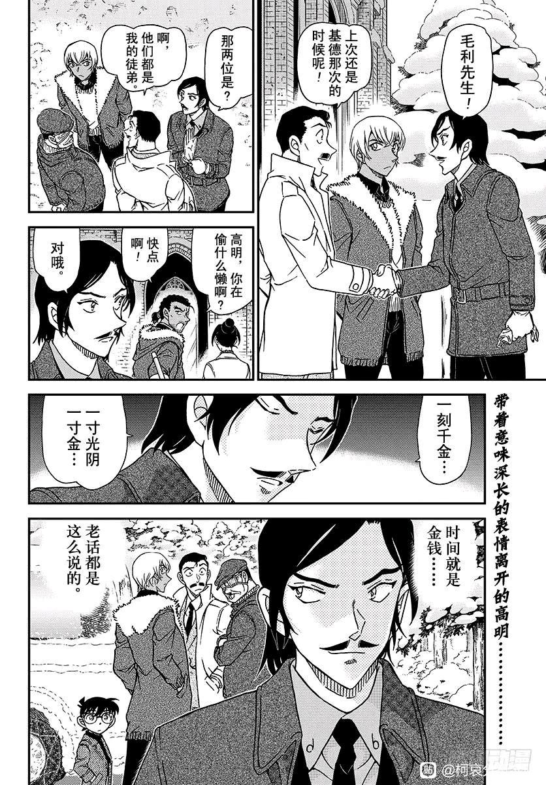
2024-10-14 23:22 | 清茶姑娘:不过说起来连操哥都有机会进入主线，只要青山一句话（当然未必实现，可是有了这个机会）2024-10-15 10:15 | 上総守信長ºº:我现在就很期待明年的M28能把景光的剧情捡起来，再通过高明解开透子的心结2024-10-15 23:04 | EdwardClow:安室透可能向黑田发短信汇报自己被困在雪山教堂，身边有一个叫胁田兼则的人，黑田告诉诸伏不要和降谷零相认，他身边有一个胁田兼则的人，不知道是敌是友，诸伏因此根据胁田兼则的名字推理重组出了时间就是金钱
6、采野菜：若狭注视下的柯哀互动
红修之后，柯哀与若狭的关系进入新阶段：小哀已经给若狭发好人卡，柯南虽有怀疑，但无可奈何。
此后，柯南对若狭-小哀互动的应对，呈现下列特点：
1、由于小哀的保证，柯南是信任若狭的
2、但是柯南嘴硬说不信任
3、柯南很不敢直接问小哀，只能拐弯抹角
这里就存在一个问题，柯南是“嘴上不信任”，还是“真的不信任”若狭，如何判断呢？当然就是看行动了，显然，和上一案【燃烧帐篷】紧绷神经不同，本案柯南几乎不对若狭做防备，竟然采取了麻醉操哥的危险做法。
（大可以啊咧咧，少侦人多势众，根本不至于要麻醉，柯南不但麻醉还躲都不躲）
若狭仍然是可疑的人，而柯南之所以不防备若狭，完全就是基于小哀的信息，是“因为相信小哀，所以相信若狭”。
红修之后，柯哀与若狭的关系进入新阶段：小哀已经给若狭发好人卡，柯南虽有怀疑，但无可奈何。
此后，柯南对若狭-小哀互动的应对，呈现下列特点：
1、由于小哀的保证，柯南是信任若狭的
2、但是柯南嘴硬说不信任
3、柯南很不敢直接问小哀，只能拐弯抹角
这里就存在一个问题，柯南是“嘴上不信任”，还是“真的不信任”若狭，如何判断呢？当然就是看行动了，显然，和上一案【燃烧帐篷】紧绷神经不同，本案柯南几乎不对若狭做防备，竟然采取了麻醉操哥的危险做法。
（大可以啊咧咧，少侦人多势众，根本不至于要麻醉，柯南不但麻醉还躲都不躲）
若狭仍然是可疑的人，而柯南之所以不防备若狭，完全就是基于小哀的信息，是“因为相信小哀，所以相信若狭”。
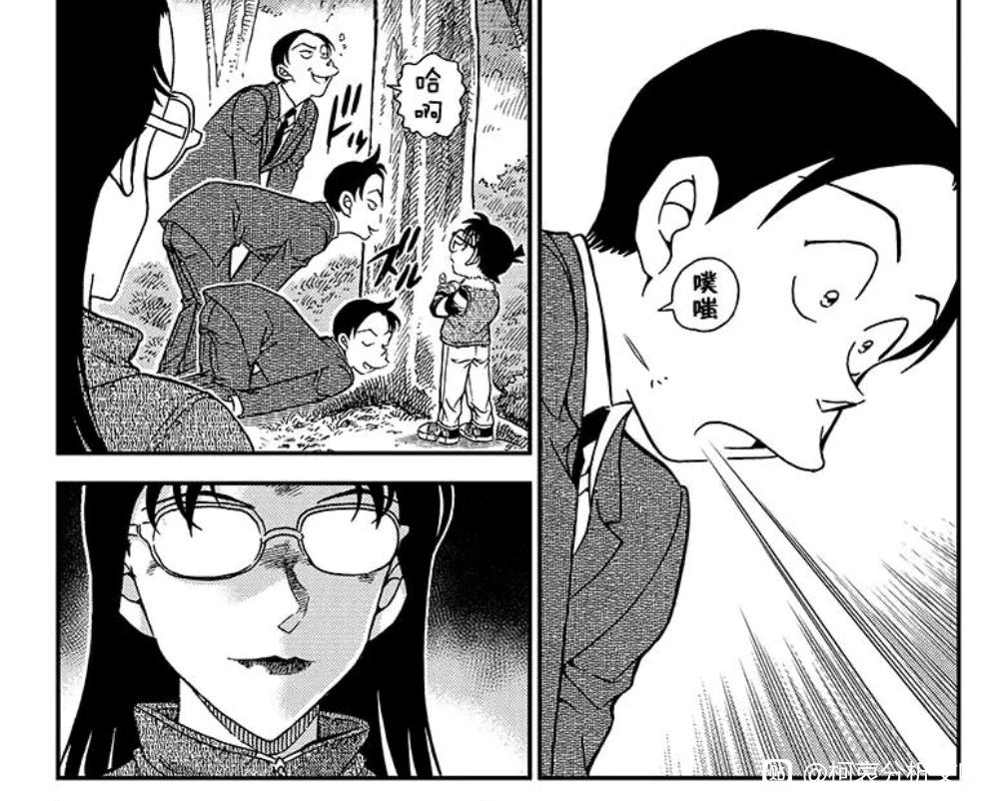
2024-10-15 22:49 | 清茶姑娘:说明厌蠢症发作时柯南会在没危险的前提下毫无耐心2024-10-16 00:47 | 贴吧用户_7bZ4Ey4:感觉柯南对于若狭比起怀疑更多的是生气，生气她可以得到哀“毫无理由”的偏向，我说过红修之后柯南是不敢再试探哀的底线，这样就让柯南对哀的控制减轻了不少，哀可以直白的积累自己的人脉这是柯南不想看到的，眼看着哀越来越控制不住是柯南现下最棘手的难题2024-10-16 23:28 | 清茶姑娘:回复 贴吧用户_7bZ4Ey4 :“喜欢的女孩成为最棘手的难题”
那么，为什么柯南还要嘴硬说不信任若狭呢？
这里不防对比猫哥事件，猫哥时小哀可以明确说“对方可能来自组织”，让柯南把猫哥搬走之类的，当时小哀也是知道猫哥是好人，柯南瞒着自己，所以小情绪比较自由。
若狭这次呢？反而是好人定义权掌握在小哀手上，柯南其实并不能提出质疑，但是，柯南是出于【自身考虑】，他想知道小哀和若狭的特殊关系，这一“自身考虑”，和朗姆没什么关系，单纯就是对小哀的世界有探索欲。
这可就“见不得人”了，柯南小心翼翼，害怕小哀发现自己的小心思，所以只好时不时表现出一幅防备的样子，摆给小哀看，以“期待小哀主动对自己说”。
小哀大概率看穿了他的心思，这又是明摆着柯南对自己的世界“富有进攻欲望”，而出轨研究专家当然不能容忍这种行为
这里不防对比猫哥事件，猫哥时小哀可以明确说“对方可能来自组织”，让柯南把猫哥搬走之类的，当时小哀也是知道猫哥是好人，柯南瞒着自己，所以小情绪比较自由。
若狭这次呢？反而是好人定义权掌握在小哀手上，柯南其实并不能提出质疑，但是，柯南是出于【自身考虑】，他想知道小哀和若狭的特殊关系，这一“自身考虑”，和朗姆没什么关系，单纯就是对小哀的世界有探索欲。
这可就“见不得人”了，柯南小心翼翼，害怕小哀发现自己的小心思，所以只好时不时表现出一幅防备的样子，摆给小哀看，以“期待小哀主动对自己说”。
小哀大概率看穿了他的心思，这又是明摆着柯南对自己的世界“富有进攻欲望”，而出轨研究专家当然不能容忍这种行为
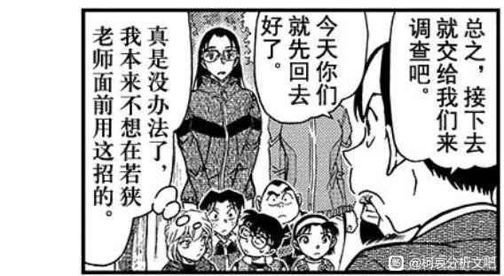
2024-10-15 22:51 | 清茶姑娘:势均力敌的两个人2024-11-03 16:25 | long126zhen:主要是伦敦、红修小哀都是知情人，在小哀那里新兰可是现在进行时，可以说只要小柯继续试图“出轨”，小哀那边一步都别想迈过去2025-02-18 22:58 | ▫Hermit:邀功小子2026-05-21 23:44 | 贴吧用户_GaX1DXN:3
当然，抛开这些小心思，柯哀也彻底在若狭面前放开了玩。
这次采野菜柯哀又十分开心，遵循出游时大概率【玩得尽兴再发生案件】的传统，画风已经十分差的青山还是奋力画了一些小哀的好图，又增加了柯南灰头土脸，只有小哀没有嘲笑的有趣事件。
（小哀：憋笑，上次柯南嘲笑自己画脸，这次轮柯南脸上有东西了）
而更好玩的是，由于若狭在场，操哥意外被柯哀玩了。
这次采野菜柯哀又十分开心，遵循出游时大概率【玩得尽兴再发生案件】的传统，画风已经十分差的青山还是奋力画了一些小哀的好图，又增加了柯南灰头土脸，只有小哀没有嘲笑的有趣事件。
（小哀：憋笑，上次柯南嘲笑自己画脸，这次轮柯南脸上有东西了）
而更好玩的是，由于若狭在场，操哥意外被柯哀玩了。
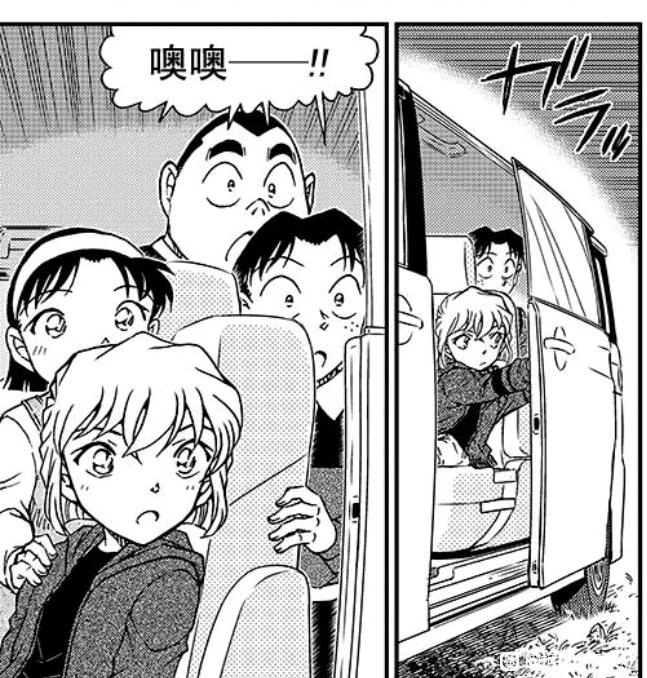
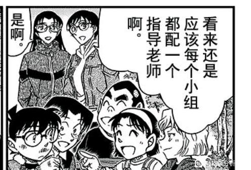
2024-10-15 22:56 | 清茶姑娘:哀是真护短啊，虽然柯南很可能想原地社si2024-10-16 00:07 | 我有嘉賓00:这不是有希子和优作吗
不得不说还是柯南会玩，开始用操哥声音各种和小哀互动，说“小姑娘”把自己说到脸红，还冲着小哀wink，这个wink别人不知道，要是被小林看到了那可不得了，简直就是柯哀自己的无线电一样。
漫画后期，小哀面前的柯南演示某些小哀不知道的手法时，越来越有种“变魔术”的感觉，像这次这个轮胎手法视觉效果就很好，小哀难得惊讶了。也不知道是不是工藤-黑羽家族天生就有这种爱表演的基因，这和快斗给青子表演魔术也没什么区别。
可怜的操哥被玩弄于鼓掌之中，而小兰在天空树却只能面对货真价实的基德，这大概就是“恋爱喜剧”和“恋爱欺骗”的区别吧。（天空树连恋爱笑话都不算，就是纯骗子）
漫画后期，小哀面前的柯南演示某些小哀不知道的手法时，越来越有种“变魔术”的感觉，像这次这个轮胎手法视觉效果就很好，小哀难得惊讶了。也不知道是不是工藤-黑羽家族天生就有这种爱表演的基因，这和快斗给青子表演魔术也没什么区别。
可怜的操哥被玩弄于鼓掌之中，而小兰在天空树却只能面对货真价实的基德，这大概就是“恋爱喜剧”和“恋爱欺骗”的区别吧。（天空树连恋爱笑话都不算，就是纯骗子）
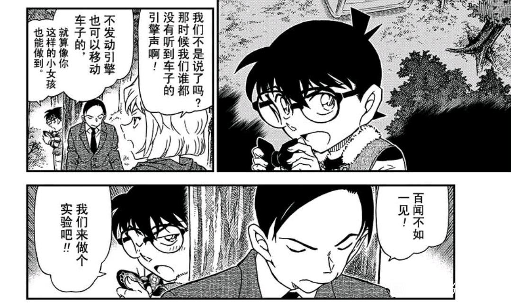
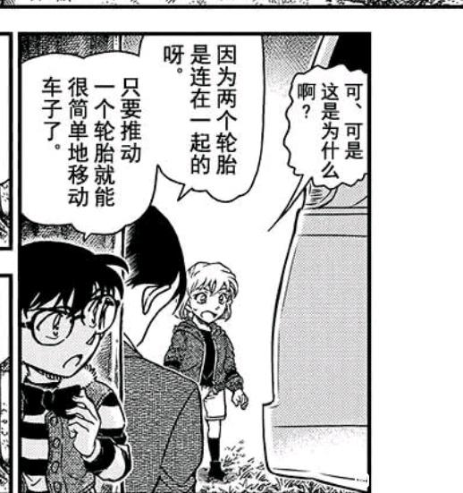
2024-10-15 22:57 | 清茶姑娘:小林老师是柯哀的见证人2024-10-16 09:25 | 上総守信長ºº:回复 清茶姑娘 :柯哀的见证人可多辣，几乎人均见证人2024-10-16 11:12 | 清茶姑娘:回复 上総守信長ºº :还有工具人，比如柯南可怜的堂弟，被迫充当工具人2024-10-16 11:32 | 上総守信長ºº:回复 清茶姑娘 :堂弟也是见证人哈，比如四神案2024-11-03 17:14 | long126zhen:回复 清茶姑娘 : 堂弟那可是为了柯哀豁过命的，厥功至伟好吧2025-09-22 15:55 | 谁来剪月光50:回复 🌐之徙 :这里看动画以为是哀故意和柯南打双簧的额2025-09-22 15:55 | 谁来剪月光50:回复 上総守信長ºº :绿帽之拳啊
本案若狭尚未对小哀有很高关注度，注意力还是在柯南身上，因此这时若狭-小哀的联系估计还是没有建立的。
不过小哀的表现欲比较强，她应该一直想让若狭注意自己，这里柯哀若狭都鲨鱼一样闻到血味冲了上去，小哀还积极前期侦查，就这若狭还是没发现小哀，也许若狭印象里的志保要更害羞一些吧，小哀作风早就被柯南“改造”了。
最终若狭要听到明美的名字后才联想到小哀，但那就是时间胶囊之后了。
不过小哀的表现欲比较强，她应该一直想让若狭注意自己，这里柯哀若狭都鲨鱼一样闻到血味冲了上去，小哀还积极前期侦查，就这若狭还是没发现小哀，也许若狭印象里的志保要更害羞一些吧，小哀作风早就被柯南“改造”了。
最终若狭要听到明美的名字后才联想到小哀，但那就是时间胶囊之后了。
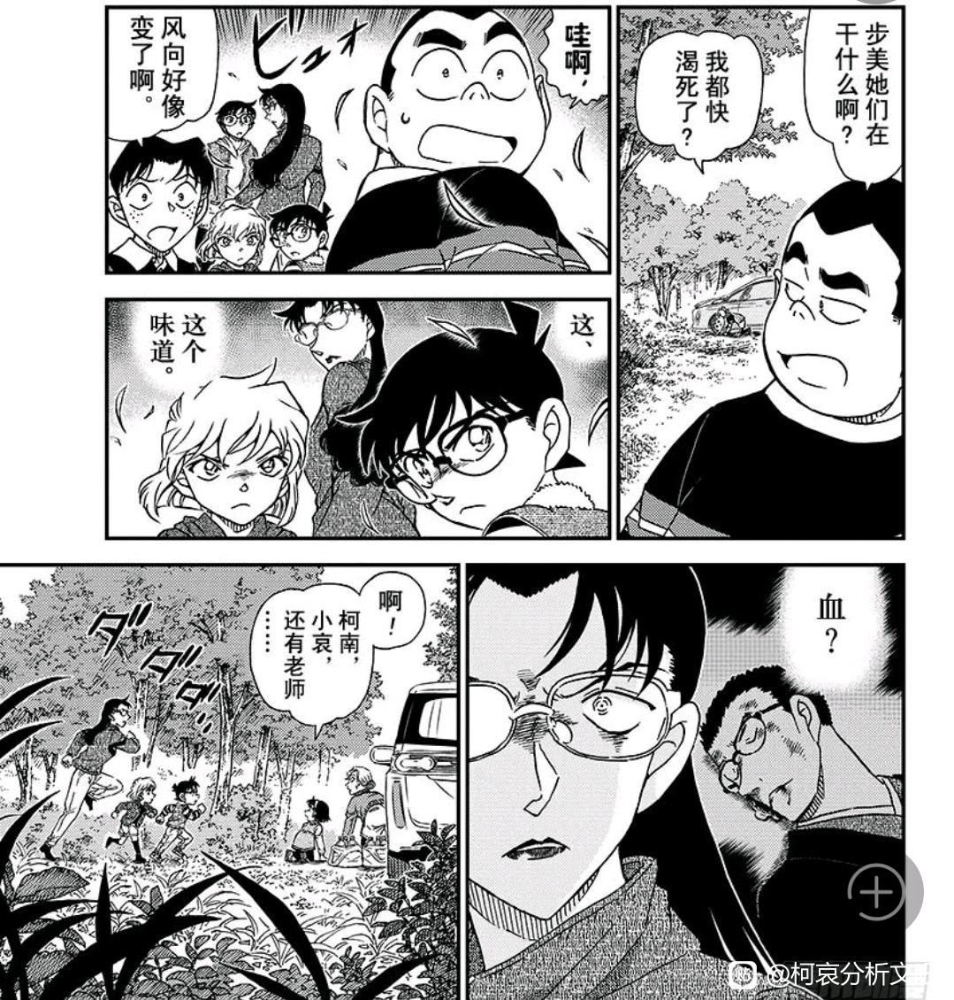
2024-10-15 22:59 | 清茶姑娘:如果13年前明美真在米花上学且有初遇论，也许离柯南想起若狭不远了
不知不觉把所有系列看完了，楼主太强了。
7、黑漆雕盆：“世哀对决”，偷药×吃醋✓
青山不止一次提到，所谓“世哀对决”，完全是恋爱内的原因，是因为“喜欢同一个人”，所以才有对决。
也因此，作为世哀对决的先行版，【黑漆雕盆】事件，不能仅仅视为世良首次试图窥探药物秘密的尝试，更多的是感情线上的正面交锋，当然，结果是世良完败，柯南完全偏心于小哀，世良一点机会没有。
（甚至自己亲哥都不支持自己，秀一乐见柯哀胜利，世良太惨了）
最典型就是这里，小哀装睡，柯南肯定知道小哀在装睡，还是帮忙打掩护，世良直接线团了。
其实到此为止，世良就已经能确定药和小哀强相关了，不然柯南掩护什么，但是世良还是选择继续“骚扰”小哀，后面的其实都是无用功。
无他，世良有点嫉妒了。
青山不止一次提到，所谓“世哀对决”，完全是恋爱内的原因，是因为“喜欢同一个人”，所以才有对决。
也因此，作为世哀对决的先行版，【黑漆雕盆】事件，不能仅仅视为世良首次试图窥探药物秘密的尝试，更多的是感情线上的正面交锋，当然，结果是世良完败，柯南完全偏心于小哀，世良一点机会没有。
（甚至自己亲哥都不支持自己，秀一乐见柯哀胜利，世良太惨了）
最典型就是这里，小哀装睡，柯南肯定知道小哀在装睡，还是帮忙打掩护，世良直接线团了。
其实到此为止，世良就已经能确定药和小哀强相关了，不然柯南掩护什么，但是世良还是选择继续“骚扰”小哀，后面的其实都是无用功。
无他，世良有点嫉妒了。
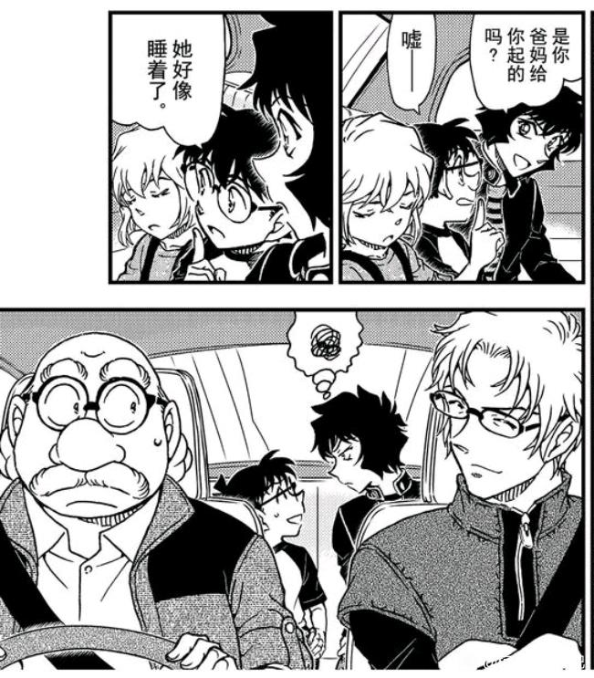
2024-10-16 23:33 | 清茶姑娘:世良本案就是不讨喜，虽然她有原因吧
小哀的情况也是类似，与其说是在防世良获取药物秘密，不如说是对柯南有某种占有感，由于柯南实在太偏向自己了，小哀甚至有点“恃宠而娇”，傲娇的娇。
在柯南没有掩护小哀前，小哀面对世良实在有些逃避，不惜强行装小孩。
柯南掩护之后呢？欸立刻硬气了，直接正面和世良对决，反正柯南（还有秀一）会应付过去，直接懒得装了。
所以“恃宠而娇”，是基于柯南宠自己，所以肆无忌惮的傲娇，小哀成功在“世哀对决”中获得了胜势。
（小哀很可能能猜到世良喜欢柯南，如果是这样的话世良就更没胜算了）
在柯南没有掩护小哀前，小哀面对世良实在有些逃避，不惜强行装小孩。
柯南掩护之后呢？欸立刻硬气了，直接正面和世良对决，反正柯南（还有秀一）会应付过去，直接懒得装了。
所以“恃宠而娇”，是基于柯南宠自己，所以肆无忌惮的傲娇，小哀成功在“世哀对决”中获得了胜势。
（小哀很可能能猜到世良喜欢柯南，如果是这样的话世良就更没胜算了）
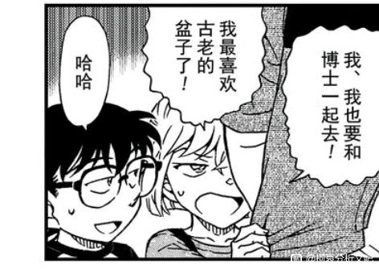
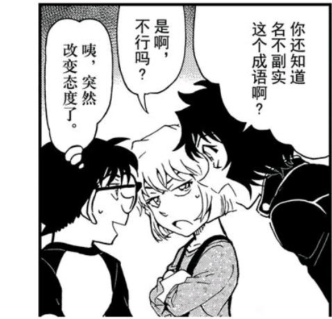
2024-10-16 23:36 | 清茶姑娘:看这段的时候光顾着替小哀被纠缠不休着急了，这么再仔细欣赏各人的表情太有趣了2024-10-17 14:19 | 上総守信長ºº:以前没看过官中，居然是把名副其实翻译成名不副实了吗，虽然我理解中日语境不同直译会让读者看不懂，但就这么牛头不对马嘴是否也有点2024-11-19 04:16 | 骄阳与森℉:这个篇章我唯一可惜的就是老爷爷的死了，很没有必要博士不至于没反应过来啊唉，其他互动看的是真开心
世良低端局（小兰）打多了，面对小哀屡败屡战，还给了小哀三个强大标签：
【成熟】【神秘】【欲盖弥彰】
（反过来就是小兰幼稚而且心思全写在脸上）
世良一度急了急了，甚至对着猫哥开踢，这可太差劲了，这不是小兰的招式吗秀一一看自己妹妹有兰化风险，赶紧纠正。
世良更多的还是不甘心啦，小哀被柯南严防死守，还“恃宠而娇”，而且世良又知道柯哀肯定没有男女朋友之名，她终于知道，问题不在小哀排斥自己，而在柯哀一起排斥自己，对于喜欢柯南的世良而言，怎么可能不心生嫉妒呢？
（此后相当长一段时间，世良不敢缠着小哀，只顾着抓落单的柯南，其实就是对不过小哀，退缩了）
【成熟】【神秘】【欲盖弥彰】
（反过来就是小兰幼稚而且心思全写在脸上）
世良一度急了急了，甚至对着猫哥开踢，这可太差劲了，这不是小兰的招式吗秀一一看自己妹妹有兰化风险，赶紧纠正。
世良更多的还是不甘心啦，小哀被柯南严防死守，还“恃宠而娇”，而且世良又知道柯哀肯定没有男女朋友之名，她终于知道，问题不在小哀排斥自己，而在柯哀一起排斥自己，对于喜欢柯南的世良而言，怎么可能不心生嫉妒呢？
（此后相当长一段时间，世良不敢缠着小哀，只顾着抓落单的柯南，其实就是对不过小哀，退缩了）
2024-10-16 23:37 | 清茶姑娘:己所不欲勿施于人，世良不想用自己的秘密换却屡屡打扰小哀，确实烂化了，该教训
不过，世哀对决肯定还没结束，在小兰必然如“天使助听器”一般名不副实且退场之后，世哀最终肯定还有一次纯粹的对决，就像白鸟和高木的对决一样堂堂正正。
青山大概率不会让世哀对决像小兰的各类事件一样涉及道德困境，而是变成“纯粹的恋爱问题”，只是世良的胜率怎么看都很低啊，小哀甚至不怕她。
世哀对决时机，大概要到新兰结束之后了。
（本案还有一个作用是排除了阿笠栗介的BOSS可能，因为出现了日常的刻画，但是我一直认为，阿笠博士在别墅里寻找财富的行为，像极了乌丸在黄昏别馆寻找财富，只是阿笠用于正道乌丸却去犯罪，这二者应该是有镜像关系的）
青山大概率不会让世哀对决像小兰的各类事件一样涉及道德困境，而是变成“纯粹的恋爱问题”，只是世良的胜率怎么看都很低啊，小哀甚至不怕她。
世哀对决时机，大概要到新兰结束之后了。
（本案还有一个作用是排除了阿笠栗介的BOSS可能，因为出现了日常的刻画，但是我一直认为，阿笠博士在别墅里寻找财富的行为，像极了乌丸在黄昏别馆寻找财富，只是阿笠用于正道乌丸却去犯罪，这二者应该是有镜像关系的）
2024-10-16 23:40 | 清茶姑娘:可是有没有阿笠栗介“怀璧其罪”的可能？他本身无害，但无意识获得了某样被觊觎的东西2024-10-30 16:29 | 清茶姑娘:回复 绝对的少年数值 :不过阿笠栗介已经去世那么多年了，即使他有什么东西也不会是和小哀有关，和宫野夫妇有关倒可能说不定2026-03-13 00:16 | 贴吧用户_QC7XaCG:辉夜的夜寒宫与天照的小花园
楼主善于从青山篇章布局的角度来分析剧情并讨论柯哀感情线，我很喜欢这一点
8、红叶挑战书（毛利兰智取甜甜圈）
甜甜圈的问题分析的人太多了，所以我主要关注其他地方：
首先来看一个经典现象，我称之为【柯南出生在博士家】，在红修之后，经常会有这种情况，明明是新兰的事件，柯南居然要从博士家摇过来。
尤其注意，这里孩子们说的是【明天暑假开始】，今天还不算暑假呢，柯南可不管，直接就跑到博士家，又对游戏没兴趣，不知道是对谁有兴趣呢。
（少侦玩的游戏是铁剑）
柯南玩“推理游戏”时，旁边还有完全理解自己的小哀，这也太爽了什么天伦之乐阖家团圆的场景啊。
甜甜圈的问题分析的人太多了，所以我主要关注其他地方：
首先来看一个经典现象，我称之为【柯南出生在博士家】，在红修之后，经常会有这种情况，明明是新兰的事件，柯南居然要从博士家摇过来。
尤其注意，这里孩子们说的是【明天暑假开始】，今天还不算暑假呢，柯南可不管，直接就跑到博士家，又对游戏没兴趣，不知道是对谁有兴趣呢。
（少侦玩的游戏是铁剑）
柯南玩“推理游戏”时，旁边还有完全理解自己的小哀，这也太爽了什么天伦之乐阖家团圆的场景啊。
2024-10-17 22:57 | 清茶姑娘:三代同堂2024-10-17 23:05 | 红茶中的白兰地:应该是放学之后五人一起回博士家，因为明天放假可以晚回家，甚至不回家2024-10-18 10:21 | 上総守信長ºº:第一行括号笑死我2024-11-04 17:25 | QuantumEntangl:林黛玉倒拔垂杨柳，毛利兰智取甜甜圈
然而好景不长，柯南嘴滑说出了暗号来自小兰
上一格还在欣赏柯南破暗号的小哀突然生气了，这里是非常明显的吃醋，小哀上一案刚刚“克制”世良，可见她对柯南的占有欲也已经起来了。
当然，小哀是不会打扰柯南推理，于是元太不幸被哀妈训斥，柯南显然根本读不懂小哀的心思，甚至还因为自己对小哀的滤镜而美化了小哀的表情
这就引出本案的主题；【对侦探而言，读不懂的女孩子才最让人着迷】（和伦敦篇是一个意思）
既然读不懂，柯南会怎么办呢？
【把这件事记下来】
上一格还在欣赏柯南破暗号的小哀突然生气了，这里是非常明显的吃醋，小哀上一案刚刚“克制”世良，可见她对柯南的占有欲也已经起来了。
当然，小哀是不会打扰柯南推理，于是元太不幸被哀妈训斥，柯南显然根本读不懂小哀的心思，甚至还因为自己对小哀的滤镜而美化了小哀的表情
这就引出本案的主题；【对侦探而言，读不懂的女孩子才最让人着迷】（和伦敦篇是一个意思）
既然读不懂，柯南会怎么办呢？
【把这件事记下来】
2024-10-17 23:00 | 清茶姑娘:有个支持自己的灵魂伴侣真好
记下自己每一次读不懂小哀的时候，尝试推理小哀的心，可是总是失败。
（如果不是这样，柯南在后来的推理中，是不会那么快想到金属过敏的）
呀这可不妙，柯南如果一直这样，那是不是每次他露出被小哀A懵的表情时，都记下小哀的所有表现了这可是严重的自我攻略行为，怪不得眼中的小哀带滤镜呢。
与时刻关注小哀相反，新兰之间连电话都很少，本次事件居然是短信沟通，而柯南也从未借此机会打电话给小兰。
（如果不是这样，柯南在后来的推理中，是不会那么快想到金属过敏的）
呀这可不妙，柯南如果一直这样，那是不是每次他露出被小哀A懵的表情时，都记下小哀的所有表现了
这可是严重的自我攻略行为，怪不得眼中的小哀带滤镜呢。与时刻关注小哀相反，新兰之间连电话都很少，本次事件居然是短信沟通，而柯南也从未借此机会打电话给小兰。
2024-10-17 23:01 | 清茶姑娘:但是小哀的每一次表现都能给柯南帮助2024-10-18 10:45 | 上総守信長ºº:还真是，柯子回忆的哀脸明显感觉怒气比正片低了很多2024-10-30 02:12 | 绝对的少年数值:而且回忆里这个小哀画的好可爱啊，男友滤镜🈶2024-12-05 19:15 | 滦炐祐😁😁:大和屋晓：奢华露营怪异事件（低劣模仿） 柯南目暮双人质案（抢匪住院翻版）2025-02-05 22:36 | 贴吧用户_7bZ4Ey4:回忆里哀是一脸担心的表情而事实上哀都气的想要打手板了2026-01-18 09:54 | 阿瑟姆奶茶🌸:不要脸的动画组，男友滤镜改了
其实柯南手上是有最优解的，他可以远程指挥小兰，由小兰说出自己的推理，这样既战胜服部，又可以适当主动放水，小兰还很有面子。也无甜甜圈的困境。
但柯南绝对没想过这种方法，归根到底他就不认为小兰和推理有什么关系，必须“亲力亲为”，同样的，小兰也不觉得新一推理和自己相关，二人名为男女朋友，实则毫无关系可言。
相比推理，小兰更在乎哪家排着长队的店好吃，导致红叶好感降低（本来红叶和小兰关系不错的），本案之后，红叶也成为继世良之后，又一位不太看得起小兰的人。
但柯南绝对没想过这种方法，归根到底他就不认为小兰和推理有什么关系，必须“亲力亲为”，同样的，小兰也不觉得新一推理和自己相关，二人名为男女朋友，实则毫无关系可言。
相比推理，小兰更在乎哪家排着长队的店好吃，导致红叶好感降低（本来红叶和小兰关系不错的），本案之后，红叶也成为继世良之后，又一位不太看得起小兰的人。
2024-10-17 23:02 | 清茶姑娘:连红叶的讽刺都看不出来2024-10-20 16:53 | 卷福花生酱酱酱:兰桑的耐心也不见得有多好2024-10-30 02:15 | 绝对的少年数值:第一格的分队是红兰在一起，和叶一个人，感觉也很有意思2024-11-03 23:17 | long126zhen:红叶这里简直就是园子的对照组嘛，看惯了园子事事当小兰的传声筒，红叶这一副看乡下人的态度和话里带刺的“委婉”才正是贵族大小姐和平凡女高之间无法逾越的鸿沟啊
甚至不只红叶，马上和叶也要怀疑小兰了。
本案倒是没有小兰“恋爱预感”，但和叶马上就觉得这是【不好的预感】，她似乎不太喜欢自己被摆在战利品的位置，跟着红叶下去拍照，也是避免了自己变成服部推理竞赛的战利品。
这方面服部肯定读不懂和叶，所以有各种感慨，柯南呢？小兰的心思已经被柯南读透，对柯南而言难道还有什么吸引力吗？
（本案小兰仍然不敢跟和叶说自己“确定关系”的事情，和叶和小兰的隔阂已经慢慢变大，她们终究没有成为好朋友）
本案倒是没有小兰“恋爱预感”，但和叶马上就觉得这是【不好的预感】，她似乎不太喜欢自己被摆在战利品的位置，跟着红叶下去拍照，也是避免了自己变成服部推理竞赛的战利品。
这方面服部肯定读不懂和叶，所以有各种感慨，柯南呢？小兰的心思已经被柯南读透，对柯南而言难道还有什么吸引力吗？
（本案小兰仍然不敢跟和叶说自己“确定关系”的事情，和叶和小兰的隔阂已经慢慢变大，她们终究没有成为好朋友）
2024-10-17 23:03 | 清茶姑娘:而且是谁总是希望成为男人之间的竞争战利品呢？2024-11-03 23:21 | long126zhen:因为小兰已经从园子、世良那里验证过别人对于新兰关系的怀疑了，所以能瞒就先瞒，等实在憋不住了要说的也是精心兰化的版本了，不仅装睡还能自己编织梦境，怎么舍得被叫醒呢
关于甜甜圈，只有一个表情：
柯南和小兰都是这个表情，欸，这种剧情实在太狠，根本就是不给新兰活路的打法，而且还越来越密集，生怕读者看不出小兰想让新一输。
（和叶与红叶都为了衬托小兰，被服部推理时帅到，这种魅力小兰是无法感受的）
本案事实上导致柯南对小兰的定性终于成型，之前他知道小兰不喜欢推理，但现在，他终于意识到小兰总是可以牺牲他的体验，希望他输。
之后看见下面三个女生时，服部读不懂和叶所以各种疑惑，但是柯南已经又是这个表情了：
所幸，他还是有无法读懂的人，所以也不用沉浸在中，还是能打起一些精神。只是小哀这一读，难度也太大了吧？

柯南和小兰都是这个表情，欸，这种剧情实在太狠，根本就是不给新兰活路的打法，而且还越来越密集，生怕读者看不出小兰想让新一输。
（和叶与红叶都为了衬托小兰，被服部推理时帅到，这种魅力小兰是无法感受的）
本案事实上导致柯南对小兰的定性终于成型，之前他知道小兰不喜欢推理，但现在，他终于意识到小兰总是可以牺牲他的体验，希望他输。
之后看见下面三个女生时，服部读不懂和叶所以各种疑惑，但是柯南已经又是这个表情了：
所幸，他还是有无法读懂的人，所以也不用沉浸在
中，还是能打起一些精神。只是小哀这一读，难度也太大了吧？
2024-10-17 23:05 | 清茶姑娘:希望柯南快些意识到这点2024-10-18 00:34 | 贴吧用户_7bZ4Ey4:这里柯南脸红了，如果说柯南的意思那个人不是小兰而是小哀的话，那这个脸红就很有意思了，这个人自打红修篇之后跟小哀有关的事他脸红的次数越来越多了2024-10-27 12:06 | 贴吧用户_aaaJSQG:小哀虽然读懂难度大，但小柯你可就有时不时可以变成可爱傲娇的混血萝莉，还可以有一个清冷美艳的混血美女，完美恰在你的审美点，艾琳的美貌智慧加华生的定位，限量版的好吧2025-03-14 10:32 | -请修改昵称-:除非日本人有什么特殊文化氛围，否则我不认为甜甜圈剧情是糖。这剧情在几乎所有国家的文化里都是大雷吧？2025-03-14 10:36 | -请修改昵称-:不说侦探也不说福尔摩斯，就说日常，谁的女朋友会希望自己男朋友再跟他兄弟比试猜拳，俯卧撑，KTV唱歌，跳远等小比赛的时候输掉的？咋代入进去当糖磕的对面？2025-08-29 14:07 | 1m1pENeM:回复 贴吧用户_7bZ4Ey4 :看起来有可能是青山的叙诡2025-09-22 16:21 | 谁来剪月光50:这里我就感觉毛利兰好像是个很矛盾的人我记得毛利兰说不怕等待啥的但是一见面就不正常了 和和叶也说想看到对方破案后那种表情或者笑容吧然而毛利兰和和叶又是相反的2025-09-22 16:23 | 谁来剪月光50:回复 -请修改昵称- :他喵的当时抖音男的分“瑞士卷”被一群女人冲2025-12-21 12:43 | 贴吧用户_JJJeGeW:回复 -请修改昵称- :新兰比较大的事件里哪个不雷
最后…
表白是要牵手的！服部这次直接牵手，不像新兰各种拉手腕之类的。印象里如果不算人鱼岛之类的极端情况，这好像还是第一次牵手呢。
（柯哀：早就牵过无数次了）
关于本案红叶；红叶的确非常关注柯南与新一的联系，但要说红叶发现了柯南是新一，那还为时尚早。不过，红叶倒是很容易发现柯南在“冒用新一的名字”，且服部帮他打掩护的事情，且柯南本身推理能力强，这自然会引起大冈家的警觉。
与铃木家关系紧密的优秀小孩，与新一有关系，还“认识安室”“调查羽案”，光这些就足以让大冈老头下达调查柯南的指令，只是这些调查，离主线应该还有距离。
表白是要牵手的！服部这次直接牵手，不像新兰各种拉手腕之类的。印象里如果不算人鱼岛之类的极端情况，这好像还是第一次牵手呢。
（柯哀：早就牵过无数次了）
关于本案红叶；红叶的确非常关注柯南与新一的联系，但要说红叶发现了柯南是新一，那还为时尚早。不过，红叶倒是很容易发现柯南在“冒用新一的名字”，且服部帮他打掩护的事情，且柯南本身推理能力强，这自然会引起大冈家的警觉。
与铃木家关系紧密的优秀小孩，与新一有关系，还“认识安室”“调查羽案”，光这些就足以让大冈老头下达调查柯南的指令，只是这些调查，离主线应该还有距离。
这里还有一点就是柯南在博士家看暗号短信的时候，三小只嚷嚷着让柯南陪他们一起玩，结果被哀挡回去了，说不要打扰江户川解暗号，哀为柯南着想结果柯南却说暗号是小兰给的把哀气的不轻，他跟平次比赛小兰却希望他输，有种为了一个不值得的人伤害了真心为你好的人的既视感
2024-10-20 16:57 | 卷福花生酱酱酱:真的！！！2024-12-24 17:02 | 一个超级萌新♋:还真是
9、名人案（反向甜甜圈）
采野菜+黑漆雕盆+红叶挑战书+名人案，连续四案有小哀，这可不太常见，本案几乎可以称得上整个甜甜圈事件的反向（各种意义上）
首先来看这里，柯南吃了暗醋，本来还挺兴高采烈，听到小哀和比护的关系立刻愁眉苦脸起来。
这剧情是不是很眼熟？和上一案小哀发现他在解小兰暗号一模一样，两个案件一模一样，直接告诉读者，现在柯哀双方对对方的占有欲是同步的。
仿佛还嫌不够，青山又给本案柯南加了一件东京Spirit队的队服（竖条纹），这下横条纹归洋子，竖条纹归赤木英雄，怎么比护的男女CP都和柯南对应起来了，比护对应的又100%是哀。
采野菜+黑漆雕盆+红叶挑战书+名人案，连续四案有小哀，这可不太常见，本案几乎可以称得上整个甜甜圈事件的反向（各种意义上）
首先来看这里，柯南吃了暗醋，本来还挺兴高采烈，听到小哀和比护的关系立刻愁眉苦脸起来。
这剧情是不是很眼熟？和上一案小哀发现他在解小兰暗号一模一样，两个案件一模一样，直接告诉读者，现在柯哀双方对对方的占有欲是同步的。
仿佛还嫌不够，青山又给本案柯南加了一件东京Spirit队的队服（竖条纹），这下横条纹归洋子，竖条纹归赤木英雄，怎么比护的男女CP都和柯南对应起来了，比护对应的又100%是哀。
2024-10-18 23:47 | 清茶姑娘:灵魂的同步
还没完呢，下面又是甜甜圈的反向。
图1，小哀知道柯南打游戏输给少侦，但她直接认为这是柯南“故意输的”，也就是小哀心中总是希望柯南赢。
这就更伤人了，甜甜圈的核心之一，就是小兰希望新一输，这对比真是不留情面，两案可是相邻的。
（本案也被设计为秀由，由美的名场面就是让秀吉赢）
甚至甜甜圈本体都出来了，秀吉听由美的话买到了甜甜圈！一看牌子更是重量级，【星星甜甜圈】，这是深怕前面英雄比护的双H不够明显，又强调新志的名字暗含星星，相比“毛利兰智取甜甜圈”，秀吉却是靠吃由美的甜食而战无不胜，真的处处是对比。
图1，小哀知道柯南打游戏输给少侦，但她直接认为这是柯南“故意输的”，也就是小哀心中总是希望柯南赢。
这就更伤人了，甜甜圈的核心之一，就是小兰希望新一输，这对比真是不留情面，两案可是相邻的。
（本案也被设计为秀由，由美的名场面就是让秀吉赢）
甚至甜甜圈本体都出来了，秀吉听由美的话买到了甜甜圈！一看牌子更是重量级，【星星甜甜圈】，这是深怕前面英雄比护的双H不够明显，又强调新志的名字暗含星星，相比“毛利兰智取甜甜圈”，秀吉却是靠吃由美的甜食而战无不胜，真的处处是对比。
2024-10-18 23:48 | 清茶姑娘:真正喜欢一个人当然是总盼望对方好的，而不是害怕失控所以打压对方2024-10-19 00:08 | 贴吧用户_7bZ4Ey4:可是我觉得吧，小哀应该是知道柯南打游戏烂的就跟他的歌一样，她这么说只是为了给柯南挽尊吧，而且就算这样也能跟兰对比，一个是看见你输了总是落井下石还总希望你能输的人和一个知道你输了会帮你遮掩还希望你能赢的人2024-10-21 21:26 | 黑暗刺猬-夏特:回复 贴吧用户_7bZ4Ey4 :我没记错的话，【柯南打游戏烂】是动画组、贝克街的亡灵那边的问题吧。
当然了，小哀不是柯南，柯南自己吃了醋都不知道，也不知道小哀在吃醋，小哀则不但知道自己会吃醋，还知道柯南有时也吃比护的醋。
那怎么办呢？现在新兰关系可是还在的呀。于是【出轨研究专家】出场了。
这里面含沙射影的，可以肯定和由美没什么关系，就是说给柯南听，什么“住在一起，已经是囊中之物”，说的就是柯兰，小哀其实清晰地表明了自己的态度：在新兰分手前自己是不会行动的。
柯南：没听懂。
甚至还嬉皮笑脸，被小哀白眼了。
柯南本身就对恋爱一窍不通，最近甚至揭露多罗碧加时是学快青还没学到位，也许真该让大表哥教他怎么拒绝别人。
（现在新兰之所以还没分手，大概只是因为没有机会分手而已，分手还得变大，说不定还要假死呢。）
那怎么办呢？现在新兰关系可是还在的呀。于是【出轨研究专家】出场了。
这里面含沙射影的，可以肯定和由美没什么关系，就是说给柯南听，什么“住在一起，已经是囊中之物”，说的就是柯兰，小哀其实清晰地表明了自己的态度：在新兰分手前自己是不会行动的。
柯南：没听懂。
甚至还嬉皮笑脸，被小哀白眼了。
柯南本身就对恋爱一窍不通，最近甚至揭露多罗碧加时是学快青还没学到位，也许真该让大表哥教他怎么拒绝别人。
（现在新兰之所以还没分手，大概只是因为没有机会分手而已，分手还得变大，说不定还要假死呢。）
2024-10-18 23:50 | 清茶姑娘:学父母、学快青……这样的柯南怎么可能让平次服气？2025-11-15 02:59 | susu我只爱自己:回复 清茶姑娘 :海底烟花可是独创的，你看看不学就能整个炸裂的，想起那一幕满屏的“服部看好了，我只演示一次”的弹幕就想笑2025-11-15 05:21 | 清茶姑娘:回复 susu我只爱自己 :所以这就是柯哀的独创性才有未来2025-11-15 06:45 | susu我只爱自己:回复 清茶姑娘 :所以柯南果然就是个恋爱白痴，明明跟哀那么多独创事件都相当情愫暗流涌动，非要学这个学那个，结果差点整劈叉了要学也学高佐嘛，看看人家进展多快啊2026-01-30 12:26 | 虬髯公好美姬:下面那个白眼太有深意了2026-05-28 19:00 | h317z:说起来这一案好像还出现了经典的豆豆眼桥段。。
感觉大表哥自从红修之后，对柯南一下子充满了自信。之前以为柯南很厉害，红修之后就能发现他还是个孩子。
（于是优作又不断强调柯南是柯南，新一号废了不响丸辣）
这里注意一下，秀一和柯南汇合的地点是【好吃得要死的拉面】，又是这里，同时本案还有千苗奶油炖菜的剧情，所有这些据青山自己所说都取决于他和南姐的事，实在不清楚这期间发生什么，南姐又让他觉得行了？
【好吃得要死的拉面】也确实和秀一一家有缘，店长还知道“玛丽”呢，说不定这次又看到秀一真身，然后转头报告给幕后的CIA（我乱说的，不当真）
（于是优作又不断强调柯南是柯南，新一号废了不响丸辣）
这里注意一下，秀一和柯南汇合的地点是【好吃得要死的拉面】，又是这里，同时本案还有千苗奶油炖菜的剧情，所有这些据青山自己所说都取决于他和南姐的事，实在不清楚这期间发生什么，南姐又让他觉得行了？
【好吃得要死的拉面】也确实和秀一一家有缘，店长还知道“玛丽”呢，说不定这次又看到秀一真身，然后转头报告给幕后的CIA（我乱说的，不当真）
2024-10-18 23:52 | 清茶姑娘:不过确实，有一种流行的说法是认为某人智商高情商低会“很萌”，但实际上智商和情商应该是相辅相成的，情商为负当然还是小毛孩2024-12-05 19:17 | 滦炐祐😁😁:拉面案3是吧
10、最后的空手道：天罚生日案
本案是小兰到目前为止（107卷）最后一次高光，当时是98-99卷，时间是2020年，也就是说，漫画里小兰已经4年8卷漫画都没有任何高光，相比于封印小兰空手道上限的【园子危险夏日物语】，本案封印的是小兰的高光下限，而且毫无破窗救园子的美感，只剩下自甜甜圈以来继续描述的自私。
高光图如下，且不说高抬腿卖肉到达新的高度，这次高光完全是世良拱手让给小兰的（世良要偷药，不然早就打倒这个犯人了），而世良这么一档，也让柯南无法“欣赏”，由此，【空手道】彻底淡出了小兰的标签。
本案是小兰到目前为止（107卷）最后一次高光，当时是98-99卷，时间是2020年，也就是说，漫画里小兰已经4年8卷漫画都没有任何高光，相比于封印小兰空手道上限的【园子危险夏日物语】，本案封印的是小兰的高光下限，而且毫无破窗救园子的美感，只剩下自甜甜圈以来继续描述的自私。
高光图如下，且不说高抬腿卖肉到达新的高度，这次高光完全是世良拱手让给小兰的（世良要偷药，不然早就打倒这个犯人了），而世良这么一档，也让柯南无法“欣赏”，由此，【空手道】彻底淡出了小兰的标签。
2024-10-19 19:54 | 清茶姑娘:∠一边处处怀疑新一要偷看她内衣一边各种毫不掩饰露给外人看2024-10-19 20:51 | 红茶中的白兰地:回复 清茶姑娘 :漏内裤给新一，得到新一的愧疚，对外人宣扬新一对自己的好感，占领道德高地2025-03-14 10:46 | -请修改昵称-:虽然制服犯人算高光没错，但是这个高抬腿+这个镜头角度，我觉得青山恶意蛮大的。哪个作者会把自己作品里的“大女主”画成正面露胖次？这就是恋爱喜剧吗？娜美虽然经常洗澡还被偷看的，但是读者是看不到的啊，都被圣光了。2025-06-29 00:27 | 寂寞不寂寞😄:这个图怎么说呢，小兰一定要穿裙子吗？唉2025-09-21 22:54 | Anastasia鳞:这图…已经不是卖肉的程度，而是让人生理不适犯恶心的程度了。她就不能穿条裤子吗？
为什么我说，本案的小兰是【自私】的？
因为她带了柯南来到同学的生日会，而柯南此时正处于口腔溃疡，按照园子的想法，溃疡了还参加生日会？
（首先明确：柯南是小兰独立叫来的，和世良没什么关系，世良听说柯南能来还很惊喜；也不是柯南自己要来的，这个阶段柯南对世良避之不及）
小兰给出的理由非常扯：家里不能只有柯南一个人？
且不说柯南大概率直奔博士家，即使家里只有柯南一个人，以前又不是没出现过（例如敢由吓唬小哀事件），小兰这个理由完全站不住脚，那么，就一定是为了掩盖真实的目的。
继续往下看。
因为她带了柯南来到同学的生日会，而柯南此时正处于口腔溃疡，按照园子的想法，溃疡了还参加生日会？
（首先明确：柯南是小兰独立叫来的，和世良没什么关系，世良听说柯南能来还很惊喜；也不是柯南自己要来的，这个阶段柯南对世良避之不及）
小兰给出的理由非常扯：家里不能只有柯南一个人？
且不说柯南大概率直奔博士家，即使家里只有柯南一个人，以前又不是没出现过（例如敢由吓唬小哀事件），小兰这个理由完全站不住脚，那么，就一定是为了掩盖真实的目的。
继续往下看。
2024-10-19 19:56 | 清茶姑娘:∠的小心思真的很多，明面上的大和抚子毛利∠，实际上除了日常做做饭之类的，真正照顾人或打扫家里（小五郎那里的垃圾堆）很少吧2024-11-04 13:38 | long126zhen:又是强行甩锅小五郎，实际上如果小兰真不方便，小五郎是愿意带小柯的，好几次打麻将、吃拉面都是带着的，除非是夜总会或者打小钢珠，但这里小兰又说了是和街坊喝酒，实际上柯南和街坊的关系也很熟的啊，怎么会一个人呆在家，这样甩锅早就是她的惯用路数了，反正都是身边人不好，只有她最善良
我们来看看，“不放心柯南一个人在家”的小兰，到了生日会，是如何照顾柯南的呢？
答：丢给园子。
我不知道青山创作这个剧情，究竟倾注了多少恶意，他让小兰带柯南来生日会，然后不管他，柯南吃药想要杯水都是园子去叫。小兰呢？她在忙她自己的事情（稍后说明小兰究竟在忙什么）
（青山大可以不用园子这句话，或者让小兰找水，哪怕园子找水的时候不要让小兰同框，都不至于如此离谱）
如果不是单纯的恶意，那就要考虑这件事的后续意义了，这可是【生日会】，而预约列表里，小兰的生日是如此显眼，把柯南叫来但是不管生病的柯南，是否会暗示小兰自己生日把新一叫来，却无视新一本人的困难？
答：丢给园子。
我不知道青山创作这个剧情，究竟倾注了多少恶意，他让小兰带柯南来生日会，然后不管他，柯南吃药想要杯水都是园子去叫。小兰呢？她在忙她自己的事情（稍后说明小兰究竟在忙什么）
（青山大可以不用园子这句话，或者让小兰找水，哪怕园子找水的时候不要让小兰同框，都不至于如此离谱）
如果不是单纯的恶意，那就要考虑这件事的后续意义了，这可是【生日会】，而预约列表里，小兰的生日是如此显眼，把柯南叫来但是不管生病的柯南，是否会暗示小兰自己生日把新一叫来，却无视新一本人的困难？
2024-10-19 19:58 | 清茶姑娘:如果青山真是无意的，恶意简直比有意为之还多。因为无意才能显示出“怎么总赶上∠”做这种事，稍微用点心都不至于一点正面都不留给它2024-10-21 21:37 | 黑暗刺猬-夏特:【“嗯，是园子小姐吗？”“我叫小兰……”】2024-11-04 13:41 | long126zhen:这种行为放三次元是有很贴切的形容的——名媛
那么我们来看看，小兰究竟在忙什么吧，前方高能：
【小兰在试图自己构建演艺界的人脉】
本次生日会，小兰的女同学佑美和她姐姐礼美都要过生日，而她姐姐已经进入演艺界，又当模特又当演员，所演的角色，正是【完全没有推理能力的废柴助手】，靠着天然呆吸引观众。
自然，也吸引到了小兰，也许是上次【替身京极真】事件让小兰终于决定走演艺路子，她开始近乎乞讨地获得佑美的关注，颇有祁同伟去别人家锄地的感觉。
小兰的步骤如下：
1、和她妹妹搞好关系
2、买她的写真集
3、当面要她签名
须知，这个生日会有大量演艺圈人士，小兰带上名气较大的柯南，和礼美姐妹看起来又很熟，再施展一下空手道，是不是有挺大概率能获得什么导演的关注？
于是小兰就这么做了。
【小兰在试图自己构建演艺界的人脉】
本次生日会，小兰的女同学佑美和她姐姐礼美都要过生日，而她姐姐已经进入演艺界，又当模特又当演员，所演的角色，正是【完全没有推理能力的废柴助手】，靠着天然呆吸引观众。
自然，也吸引到了小兰，也许是上次【替身京极真】事件让小兰终于决定走演艺路子，她开始近乎乞讨地获得佑美的关注，颇有祁同伟去别人家锄地的感觉。
小兰的步骤如下：
1、和她妹妹搞好关系
2、买她的写真集
3、当面要她签名
须知，这个生日会有大量演艺圈人士，小兰带上名气较大的柯南，和礼美姐妹看起来又很熟，再施展一下空手道，是不是有挺大概率能获得什么导演的关注？
于是小兰就这么做了。
2024-10-19 20:03 | 清茶姑娘:∠的空手道的确在演戏上可能成为助力，但问题它有那个能力说好台词控制表情吗？最多也就是个武打替身的路子吧2025-03-14 11:01 | -请修改昵称-:其实我对小兰这个角色本身没有恶意，如果小兰真的能进入演艺圈不是坏事。凭小五郎和洋子的交情，先带小兰踏进圈子还是没问题的。但是，要做艺先做人！你啥时候才能成长起来。2026-05-25 23:20 | 贴吧用户_7QPA5S8:第二次看的时候才发现之徙老师也看人民的名义
首先是和妹妹搞好关系，因为本来并不熟，小兰的同龄朋友是非常非常少的。
佑美作为小兰同班同学，连柯南是谁都不知道，只知道是一个“一年级男孩”，不熟的程度太夸张了。
（相反，园子世良都和她很熟，世良能和她同仇敌忾骂渣男，园子则不但佑美知道，她粗心的姐姐也知道）
怎么搞好关系呢？当然是买写真集了，“我是你姐姐的粉丝”，园子和世良还是头一次听说礼美很受欢迎呢，小兰就“资深粉丝”了。
然后紧跟着施展甜甜圈之术，“我们去参加生日会真的不要紧吗？”，这样佑美肯定就只能答应了。
佑美作为小兰同班同学，连柯南是谁都不知道，只知道是一个“一年级男孩”，不熟的程度太夸张了。
（相反，园子世良都和她很熟，世良能和她同仇敌忾骂渣男，园子则不但佑美知道，她粗心的姐姐也知道）
怎么搞好关系呢？当然是买写真集了，“我是你姐姐的粉丝”，园子和世良还是头一次听说礼美很受欢迎呢，小兰就“资深粉丝”了。
然后紧跟着施展甜甜圈之术，“我们去参加生日会真的不要紧吗？”，这样佑美肯定就只能答应了。
2024-10-19 20:05 | 清茶姑娘:而且很明显∠是才知道对方姐妹俩一起办生日会的2024-10-19 20:55 | 红茶中的白兰地:看的时候就感觉到了，这种突然出现的同学，感觉是为了参加生日会才突然和她打招呼的。正好对方也需要几个同学当挡箭牌，也就没有拒绝
女同学只是跳板，关键是怎么让真正的明星注意到自己，小兰选择要签名。
礼美神经比较大条，有人让签名当然是签了，但是要说她有多关注小兰嘛……
换了一支笔之后，就把小兰叫做园子，十分尴尬，签完之后小兰号称“会把它当宝物”，结果对方还是不感冒，只是“请随意”而已。
总之小兰在这位明星身上下的功夫几乎是白费的，她只能采取备用方案：展示空手道。
礼美神经比较大条，有人让签名当然是签了，但是要说她有多关注小兰嘛……
换了一支笔之后，就把小兰叫做园子，十分尴尬，签完之后小兰号称“会把它当宝物”，结果对方还是不感冒，只是“请随意”而已。
总之小兰在这位明星身上下的功夫几乎是白费的，她只能采取备用方案：展示空手道。
2024-10-19 20:06 | 清茶姑娘:所以∠除了展示身材到底是多没辨识度？2024-10-20 13:41 | 上総守信長ºº:我感觉还是汉化的锅呢，这里礼美的回应其实就是一个社交辞令，没有任何情感偏向的2024-12-13 11:25 | 35节新泽西💧:还真不知道谁才是姐姐。 要签名的兰和给小柯找水的园子

即使没有案件，小兰也准备教训上述的“渣男”，所以空手道是必然会演示出来的。区别只在于，如果没有案件，小兰应该开心地吃着自己最喜欢的蛋糕，而发现了案件，小兰立刻变成世良的附庸，露出了非常无知的表情。
世良在柯南不容易说话的情况下，主动分担了柯南的任务，替警察把现场说清楚，柯南是很感谢世良的，小兰这个表情，她只会想到一件事：【疑惑的辣味咖喱】
当时，小兰总是无法明白柯南在想什么，甚至无法明白新一的手势，园子理解的都比她多，越到故事后期，小兰对世良就越害怕，小兰心理清楚，世良作为侦探，大概率掌握了她唯一精神支柱【危命】的秘密，因为恐惧，所以这个表情，茫然无措。
世良在柯南不容易说话的情况下，主动分担了柯南的任务，替警察把现场说清楚，柯南是很感谢世良的，小兰这个表情，她只会想到一件事：【疑惑的辣味咖喱】
当时，小兰总是无法明白柯南在想什么，甚至无法明白新一的手势，园子理解的都比她多，越到故事后期，小兰对世良就越害怕，小兰心理清楚，世良作为侦探，大概率掌握了她唯一精神支柱【危命】的秘密，因为恐惧，所以这个表情，茫然无措。
2024-10-19 19:05 | 玖玖玥玥🌙:80楼好像被吞了2024-10-19 19:32 | 🌐之徙:回复 玖玖玥玥🌙 :我还是能看到看看其他人会不会也看不见吧2024-10-19 20:08 | 玖玖玥玥🌙:回复 🌐之徙 :能看到啦2024-10-19 20:09 | 清茶姑娘:所谓的新∠，真是除了个模子什么都没有，起码的尊重过没有，支持没有，吹上天的“爱情”结果连简单的了解也没有。
小兰在生日会场的一系列举动，说她“热心于事业”倒也没错，但总感觉是“不走正路”的。
名柯最重要的明星冲野洋子，靠的是无与伦比的能力和强大的内心，小兰却似乎更愿意依赖他人的“赏识”，不论依附新一还是其他人，总归是违背了朱蒂的教训“不要总是依靠别人，依靠的人随时会不在”。
也因此，我认为小兰的演艺梦想，大概率不会很顺利的，那种SR设想的XX赏识小兰→一飞冲天的剧情，实在是无聊而不符合主旨。
当然，如果小兰已经变成“次要人物”，那么结局很随意也是可能的，本案结束时园子世良柯南都在，小兰打完人不见了一小段时间，也许真的有什么导演发现了小兰（也许还发现了卖肉的小兰），这倒是能解释小兰后来不再有空手道，她找到了“贵人”，不需要演空手道给人看了。（当然以上推测居多）
名柯最重要的明星冲野洋子，靠的是无与伦比的能力和强大的内心，小兰却似乎更愿意依赖他人的“赏识”，不论依附新一还是其他人，总归是违背了朱蒂的教训“不要总是依靠别人，依靠的人随时会不在”。
也因此，我认为小兰的演艺梦想，大概率不会很顺利的，那种SR设想的XX赏识小兰→一飞冲天的剧情，实在是无聊而不符合主旨。
当然，如果小兰已经变成“次要人物”，那么结局很随意也是可能的，本案结束时园子世良柯南都在，小兰打完人不见了一小段时间，也许真的有什么导演发现了小兰（也许还发现了卖肉的小兰），这倒是能解释小兰后来不再有空手道，她找到了“贵人”，不需要演空手道给人看了。（当然以上推测居多）
2024-10-19 20:10 | 清茶姑娘:不过洗脚的推测倒是与∠的特点有关，“得到了某某大佬的赏识”嘛！很符合∠的特性2024-10-20 17:16 | 卷福花生酱酱酱:世柯这里好像哀在电车摔倒那里，都是为了药2024-12-23 16:52 | ncwjssa:我倒是觉得没必要这么大恶意。这个案子很明显围绕玛丽和艾莲娜创作的。戴眼镜的直发妹妹和卷发姐姐，死者纠缠姐妹对应组织招揽宫野家，凶手反被死者威胁我倒是没想到能对应什么。失踪的55吗？（挠头2025-09-21 23:05 | Anastasia鳞:说真的，这样子塑造的小兰，根本无法想象她成年后靠什么谋生。唯一靠谱的可能是成为那种玩“擦边”的武打替身演员吧（甚至更悲催，变成一个纯卖肉演员）…真是哀其不幸怒其不争。如果新兰的这段经历能让她有所成长，结果可能还不至于这么悲惨。醒悟什么时候都不晚，希望她能在自己的人生变得无可救药之前直面真相、清醒回头吧。
最后看下主线：
很古怪的一点是，贝姐【三年前开始就假扮55】，直到伦敦篇才给玛丽喂药；也就是干掉玛丽这个任务，是三年前就有的，当时的药应该就是毒药的认知。
然而在今天，尽管药已经不是毒药，贝姐却还是执行了这一“过期指令”，这就让贝姐悄悄对玛丽说话的概率提升了一些，贝姐是有可能对玛丽说“跳河里”之类的话，水无直呼内行。
（偏向性证据是：玛丽回忆贝姐时似乎并无恨意，只是对重新变大表示执念，玛丽也几乎不把目标放在“千面魔女”上，而都是直接说要打“那一帮人”也就是组织）
如果是三年前的任务，那就是贝姐把本来的毒药换成小哀A药，（大概是因为不想杀艾莲娜的姐姐）
很古怪的一点是，贝姐【三年前开始就假扮55】，直到伦敦篇才给玛丽喂药；也就是干掉玛丽这个任务，是三年前就有的，当时的药应该就是毒药的认知。
然而在今天，尽管药已经不是毒药，贝姐却还是执行了这一“过期指令”，这就让贝姐悄悄对玛丽说话的概率提升了一些，贝姐是有可能对玛丽说“跳河里”之类的话，水无直呼内行。
（偏向性证据是：玛丽回忆贝姐时似乎并无恨意，只是对重新变大表示执念，玛丽也几乎不把目标放在“千面魔女”上，而都是直接说要打“那一帮人”也就是组织）
如果是三年前的任务，那就是贝姐把本来的毒药换成小哀A药，（大概是因为不想杀艾莲娜的姐姐）
2024-10-19 20:12 | 清茶姑娘:那么贝姐很笃定这个药对玛丽不会致命？2024-11-04 13:54 | long126zhen:这个有点牵强了，事实上A药致死率不低的，除了柯哀，其他吃药的都挂了，还不如说她用的就是“银色子弹”呢，反正这个药目前完全是谜2024-11-12 21:55 | 青隐🌈:回复 long126zhen :很明显。小哀的药到现在为止只吃过三个人。柯哀+玛丽...2025-02-11 01:39 | 天堂奴隶布鲁德:我觉得五五死了，这个画皮有点阴森2025-04-15 16:12 | 发疯的法师:回复 天堂奴隶布鲁德 :？你当是人皮面具啊2025-04-17 21:10 | 天堂奴隶布鲁德:我觉得画风的暗示，如果他之后还有戏份，没必要给观众一种这样的印象
组织内三年前唯一的大事是景光暴露，听起来好像和MI6没什么关系，不过也许有另一种可能，下面是我个人的想法：
大约三年前，朗姆获得了库拉索，重新拥有了过目不忘（伪）能力，直接或间接地导致景光暴露。
同时，朗姆利用库拉索，开始对17年前入侵组织却无下文的55进行搜查，终于发现55来自MI6，这才派贝姐去伦敦天天晃，目标是假扮55混入MI6，在混入之前得先把玛丽干掉。
贝姐“消极怠工”，拖到伦敦时才动手，甚至可能是故意等伦敦，当时柯南/新一在那里，贝姐选择不杀玛丽，给的是小哀A药，骗玛丽和其他酒这是艾莲娜的药。（为掩人耳目，用吻的）
甚至，也许贝姐自爆世良的信息，是故意让玛丽发现呢，后来的【优作推理秀】事件贝姐展示了极高的规划力，安排一下并非不可能。
当然，现在的信息是不足以推出很具体的结论，很可能不对，仅供参考。
大约三年前，朗姆获得了库拉索，重新拥有了过目不忘（伪）能力，直接或间接地导致景光暴露。
同时，朗姆利用库拉索，开始对17年前入侵组织却无下文的55进行搜查，终于发现55来自MI6，这才派贝姐去伦敦天天晃，目标是假扮55混入MI6，在混入之前得先把玛丽干掉。
贝姐“消极怠工”，拖到伦敦时才动手，甚至可能是故意等伦敦，当时柯南/新一在那里，贝姐选择不杀玛丽，给的是小哀A药，骗玛丽和其他酒这是艾莲娜的药。（为掩人耳目，用吻的）
甚至，也许贝姐自爆世良的信息，是故意让玛丽发现呢，后来的【优作推理秀】事件贝姐展示了极高的规划力，安排一下并非不可能。
当然，现在的信息是不足以推出很具体的结论，很可能不对，仅供参考。
2024-10-19 20:13 | 清茶姑娘:要真是这样，贝姐能足足拖3年，朗姆的地位和驱动力可想而知2024-10-19 21:21 | 🌐之徙:回复 清茶姑娘 :说明朗姆根本没法落实，发下去的任务全靠下面自觉2024-11-04 14:00 | long126zhen:回复 清茶姑娘 : 倒也不全是，别看贝姐在琴酒、波本面前老实，她在组织的地位很高的，朗姆已经联系不上BOSS了，贝姐能实时和BOSS发短信，琴酒也能联系上BOSS，但效率肯定没有贝姐这么高，朗姆这情况，确实地位尴尬2025-02-16 03:04 | 贴吧用户_G3yK1K3:回复 🌐之徙 :景光暴露应该是警视厅的卧底干的
11、陨石牧场案：受到关注的成熟哀
牧场案，或称“安室被若狭暴打案”，目前还是有许多未解之谜的，但本案造成的最直接后果，是若狭和安室同时注意到了行动力很强的小哀。
（本案是比较危险的环境，柯南又被困，所以他指挥小哀做了大量工作，而且直接说出了【灰原不会有疏漏的】这句话）
此前，由于小哀伪装得比较好，安室一直觉得小哀就是个害羞的小姑娘，直到本案，安室才明白，跟在大诈骗师柯南身边的小女孩，怎么可能那么简单。（这位马上到来的M26埋下伏笔，安室在M26之后终于发现小哀身份不一般）
不过安室毕竟没有任何A药信息，说不定他会觉得小哀是雪莉的什么亲戚，比如秀一和明美的女儿之类的（
牧场案，或称“安室被若狭暴打案”，目前还是有许多未解之谜的，但本案造成的最直接后果，是若狭和安室同时注意到了行动力很强的小哀。
（本案是比较危险的环境，柯南又被困，所以他指挥小哀做了大量工作，而且直接说出了【灰原不会有疏漏的】这句话）
此前，由于小哀伪装得比较好，安室一直觉得小哀就是个害羞的小姑娘，直到本案，安室才明白，跟在大诈骗师柯南身边的小女孩，怎么可能那么简单。（这位马上到来的M26埋下伏笔，安室在M26之后终于发现小哀身份不一般）
不过安室毕竟没有任何A药信息，说不定他会觉得小哀是雪莉的什么亲戚，比如秀一和明美的女儿之类的（
2024-10-20 14:29 | 上総守信長ºº:布什戈门2024-10-20 16:32 | 清茶姑娘:柯南也是情急下顾不得面面俱到了2024-10-20 17:22 | 卷福花生酱酱酱:安室回忆里紧贴的两小只～2024-11-04 14:05 | long126zhen:车速有点太快了，诸星大混入组织不过五年前的事，宫野明美享年25岁，孩子就这么大了，是不是有点性急啊
当然若狭也透露了一些信息，例如若狭提到，成群结队的乌鸦里，或许也有【开朗有趣的人】，考虑到宫野夫妇不算特别开朗，看来若狭这里指的是“乐呵呵”的务武，也就是若狭和务武的确在组织过一段时间。
不过，现在若狭和务武似乎已经断绝联系，这里的故事只能等青山连载，说不定要到M29赤楼梦剧场版才能透露一些。
不过，现在若狭和务武似乎已经断绝联系，这里的故事只能等青山连载，说不定要到M29赤楼梦剧场版才能透露一些。
2024-10-20 16:34 | 清茶姑娘:若狭这里是故意向小哀透露吗？不过柯南明显上心了2024-10-20 16:44 | 🌐之徙:回复 清茶姑娘 :感觉不是故意的，就是若狭随口聊到而已2024-10-20 17:26 | 卷福花生酱酱酱:故意不画小哀的脸，嘿73你真狡猾2024-12-23 17:00 | ncwjssa:我觉得小哀是在小柯不小心说漏嘴后，主动提到‘存活十年’，意图与若狭接头。随后若狭提到乌鸦中有活泼的人，希望鸠山是个鸽子一样温和的人这种让人遐想的话2025-06-29 15:39 | 自作主张阿萨德:我觉得这里说的大概率是艾莲娜，赤井家乐呵呵的目前只有太阁名人2025-07-06 10:26 | 棍棒和石头☞☜:55在组织里待过？暴论了吧2025-07-07 00:12 | Wf_yjqd:回复 卷福花生酱酱酱 :确实奇怪，明明下一个画面就又贴着柯子了
之后这里，安室发现了柯哀，小哀压低帽子导致安室一直没有看见小哀正脸（从而几乎无法想象小哀＝雪莉）。
安室本次是作为工安来救倒霉风间的，自然没有雷达，但柯南还是通过不告诉小哀安室是工安的方式，让小哀保持基本的警惕。
安室肯定是不认识若狭的，初次见面，要被打了才认识；但若狭认识安室，理由只有一种可能：
【安室在“背叛的舞台”事件进行调查，被长期关注羽案的若狭发现了】
若狭的总体思路是：①放出羽案相关信息②找到关注羽案的人③测试对方靠不靠谱④寻求合作，柯南和安室其实都满足“合作对象”的要求，但安室作死藏了若狭将棋，若狭怒而打之，所以安室作为若狭同盟就不可能了。
（这也算是一种锁花吧）
安室本次是作为工安来救倒霉风间的，自然没有雷达，但柯南还是通过不告诉小哀安室是工安的方式，让小哀保持基本的警惕。
安室肯定是不认识若狭的，初次见面，要被打了才认识；但若狭认识安室，理由只有一种可能：
【安室在“背叛的舞台”事件进行调查，被长期关注羽案的若狭发现了】
若狭的总体思路是：①放出羽案相关信息②找到关注羽案的人③测试对方靠不靠谱④寻求合作，柯南和安室其实都满足“合作对象”的要求，但安室作死藏了若狭将棋，若狭怒而打之，所以安室作为若狭同盟就不可能了。
（这也算是一种锁花吧）
2024-10-20 16:37 | 清茶姑娘:不过将棋那个不能算没事找事吧？因为目前能得知的线索只有这是羽案的一部分，想查案子的人肯定要关注，甚至怀疑是不是和凶手有关，谁能想到反而是正方拿着这东西吧？2025-04-15 16:17 | 发疯的法师:？安室是日本公安啊 羽田案也是公安的研修项目 上心挺正常的
如果安室不偷藏将棋，大概若狭会选择直接报警，结果发现将棋不见，若狭马上就选择把手机弄坏，毕竟护身符真的挺重要。
很难不怀疑安室被打了之后，一生气直接把若狭信息爆给朗姆了，居然输得不明不白。
这一段应该是为了衬托若狭武力之高，犯人是【全国高中拳击大赛冠军】，大概是比小兰的关东冠军强很多的水平，打倒犯人的路人则是【专业自由搏击选手】，比安室要弱，安室是自由搏击里最顶尖的一批人，这样看来老师的武力等级至少比小兰高四个等级，现在访谈说老师仅次于京极真，看来真的是这样。
我总感觉小哀看见波本被老师暴打还挺高兴的，因为小哀其实完全能理解若狭这种为了重新获得心爱之物，对邪恶的波本重拳出击的感觉。（大概就和小哀剧场版里说要把峰不二子摔下来那种感觉）
很难不怀疑安室被打了之后，一生气直接把若狭信息爆给朗姆了，居然输得不明不白。
这一段应该是为了衬托若狭武力之高，犯人是【全国高中拳击大赛冠军】，大概是比小兰的关东冠军强很多的水平，打倒犯人的路人则是【专业自由搏击选手】，比安室要弱，安室是自由搏击里最顶尖的一批人，这样看来老师的武力等级至少比小兰高四个等级，现在访谈说老师仅次于京极真，看来真的是这样。
我总感觉小哀看见波本被老师暴打还挺高兴的，因为小哀其实完全能理解若狭这种为了重新获得心爱之物，对邪恶的波本重拳出击的感觉。（大概就和小哀剧场版里说要把峰不二子摔下来那种感觉）
2024-10-20 16:41 | 清茶姑娘:个人觉得至少在牧场这里将棋的部分应该是误会。因为在没揭示朗姆身份时，我也怀疑过若狭（当然我粗枝大叶没注意那么多细节），看到和羽案有关的线索第一时间怀疑是当年的凶手，或者至少帮凶也是正常的。作为官方人员，总不能好不容易拿到一点儿线索还立即交出去吧？怀疑一下也是人之常情，谁能想到呢
12、小兰与朗姆的同位：洋子阁楼案
通过卡迈尔的发型，我们能够知道M26发生在海猿岛之前，自然也应该发生在海猿岛的前奏【优作推理秀】之前，而我们又知道，优作推理秀之前的【洋子阁楼案】，朗姆连将棋都要问柯南，可见这时朗姆权势并未因M26而提高，因此，大体可以有以下时间线：
【洋子阁楼案】
【M26】
【优作推理秀】
【海猿岛】
那么，【洋子推理秀】究竟发生了什么，导致后来朗姆-宾加派系不惜采取激进措施，也要借助直美系统调查柯南＝新一呢？
原因就是柯南这里出现了问题，他隐瞒了若狭的将棋情报（柯南虽没直接看过将棋，但能猜到），然而安室却提前将若狭有将棋的信息报告给朗姆，那么朗姆手上就有两个选择，要么柯南是小孩没注意到将棋，要么柯南是新一帮若狭隐藏，加上雪山事件朗姆对柯南的怀疑，他于是授意宾加拿到系统之后，调查一下柯南是不是新一。
通过卡迈尔的发型，我们能够知道M26发生在海猿岛之前，自然也应该发生在海猿岛的前奏【优作推理秀】之前，而我们又知道，优作推理秀之前的【洋子阁楼案】，朗姆连将棋都要问柯南，可见这时朗姆权势并未因M26而提高，因此，大体可以有以下时间线：
【洋子阁楼案】
【M26】
【优作推理秀】
【海猿岛】
那么，【洋子推理秀】究竟发生了什么，导致后来朗姆-宾加派系不惜采取激进措施，也要借助直美系统调查柯南＝新一呢？
原因就是柯南这里出现了问题，他隐瞒了若狭的将棋情报（柯南虽没直接看过将棋，但能猜到），然而安室却提前将若狭有将棋的信息报告给朗姆，那么朗姆手上就有两个选择，要么柯南是小孩没注意到将棋，要么柯南是新一帮若狭隐藏，加上雪山事件朗姆对柯南的怀疑，他于是授意宾加拿到系统之后，调查一下柯南是不是新一。
2024-10-21 23:31 | 清茶姑娘:那朗姆权势具体提高是在哪个案件？海猿岛吗？2024-10-26 16:14 | snowfly1024:怎么感觉这一阶段的青山特别喜欢画一只眼睁一只眼闭的表情啊，小梓是这样，后文中的小兰也是这样，前文中借山村警官之口叫灰原“小女孩”的柯南也是这样。2024-11-04 14:20 | long126zhen:回复 清茶姑娘 : M26，琴酒大张旗鼓炸了一艘潜艇“牺牲”了宾加却几乎零收获，还当着伏特加的面被波本、水无怼了，贝姐更是越级短信联系BOSS获取了销毁老若系统的指令，这段时间朗姆估计是拉拢了些人的，算是风光了会儿。直到海猿岛琴酒现场指挥重新树立威信，朗姆烧岛过于激进被BOSS骂了一顿2024-11-20 19:50 | 卷福花生酱酱酱:透梓…
由朗姆带来的新柯身份危机，其实是和由小兰带来的新柯身份危机完全同步的。
漫画里用小五郎的“危机”代替柯南做了预告，小五郎同时害怕朗姆和小兰揭穿自己上厕所没纸的事实，柯南也同样担心朗姆和小兰拆穿自己的身份。
所以，下次身份危机，应该是小兰和朗姆一起骗，可以是通过假死一起骗，也可以是用新柯同框（志保扮演新一，柯南带口罩维护危命）的方式，总之小兰和朗姆将成为共同的欺骗对象。
漫画里用小五郎的“危机”代替柯南做了预告，小五郎同时害怕朗姆和小兰揭穿自己上厕所没纸的事实，柯南也同样担心朗姆和小兰拆穿自己的身份。
所以，下次身份危机，应该是小兰和朗姆一起骗，可以是通过假死一起骗，也可以是用新柯同框（志保扮演新一，柯南带口罩维护危命）的方式，总之小兰和朗姆将成为共同的欺骗对象。
2024-10-21 23:33 | 清茶姑娘:危机也是同样的人带来的
本次案件，柯南也十分防备小兰和最大的朗姆候选人厨师。
柯南做了两件事：
1、宣称自己忘记了♦️的英文，但其实是记得的
2、在朗姆和小兰面前故意提起新一
前者是初遇论的典型小伎俩，和后来基德的新志牌是一类东西。而后者就比较重要，显然柯南并未在朗姆面前隐藏【新一还活着】这一信息，也就是柯南应该知道，红茶会的目标就是让朗姆知道新一活着，只是和安室互信有限，开会之后还是各自为战。
在这一思想下，柯南在朗姆和小兰面前号称“是新一教我的”，其实有很大概率导致小兰提及新一（例如：新一最近给我打电话都很少，居然还教你那么多乱七八糟的），进而导致话题转向朗姆本人对新一的怀疑，但这就是柯南想要的目的，朗姆越认为新一活着，安室的地位就越稳固。
这个过程，小兰的反应已经被柯南视为客观规律，用来对抗朗姆，至于小兰本人会对新一有没有别的想法，柯南是一点都不在乎的。
柯南做了两件事：
1、宣称自己忘记了♦️的英文，但其实是记得的
2、在朗姆和小兰面前故意提起新一
前者是初遇论的典型小伎俩，和后来基德的新志牌是一类东西。而后者就比较重要，显然柯南并未在朗姆面前隐藏【新一还活着】这一信息，也就是柯南应该知道，红茶会的目标就是让朗姆知道新一活着，只是和安室互信有限，开会之后还是各自为战。
在这一思想下，柯南在朗姆和小兰面前号称“是新一教我的”，其实有很大概率导致小兰提及新一（例如：新一最近给我打电话都很少，居然还教你那么多乱七八糟的），进而导致话题转向朗姆本人对新一的怀疑，但这就是柯南想要的目的，朗姆越认为新一活着，安室的地位就越稳固。
这个过程，小兰的反应已经被柯南视为客观规律，用来对抗朗姆，至于小兰本人会对新一有没有别的想法，柯南是一点都不在乎的。
2024-10-21 21:50 | 上総守信長ºº:还真是，按这个思路完全讲得通2024-10-21 23:34 | 清茶姑娘:所以如果用来向黑组反向渗透，∠就是最佳工具人2024-10-26 15:53 | 清茶姑娘:回复 大水魚誒 :间谍，尤其双料间谍，要求很高的，∠哪够格？它顶多是个被利用得非常丝滑的工具人，而且人人拿来可用2024-11-20 23:41 | 滦炐祐😁😁:这就跟狼人杀一样，胁田是隐狼，小兰是白神，柯南是“警长”，然而在另外两个神说黑田和若狭不是朗姆的情况下仍然无法判断厨子是朗姆
进一步我们可以发现，正是小兰引来了朗姆：
由于小兰莫名其妙大吼大叫（还捏痛柯南），导致楼下朗姆直接听到了，马上过来凑热闹。
（这里小五郎没有点外卖，朗姆也只做了三份寿司给小兰，小五郎和洋子，也就是朗姆一开始不是为了问柯南将棋才过来的，就是单纯凑热闹看看有没有新消息）
因此，引来朗姆的，就是小兰的尖叫，小兰和朗姆的同位性质又得到了一次验证，之后小兰生日，邀请朗姆的概率也越来越高。
由于小兰莫名其妙大吼大叫（还捏痛柯南），导致楼下朗姆直接听到了，马上过来凑热闹。
（这里小五郎没有点外卖，朗姆也只做了三份寿司给小兰，小五郎和洋子，也就是朗姆一开始不是为了问柯南将棋才过来的，就是单纯凑热闹看看有没有新消息）
因此，引来朗姆的，就是小兰的尖叫，小兰和朗姆的同位性质又得到了一次验证，之后小兰生日，邀请朗姆的概率也越来越高。
2024-10-21 21:51 | 上総守信長ºº:又或者，小五郎真的点了三人份的寿司，那么柯南再次被不当人了2024-10-21 23:36 | 清茶姑娘:回复 上総守信長ºº :总之就是毛利家，一定成为漏勺一样的存在，区别是完全倾向奇怪思路的黑组还是丝毫不考虑别人的自私而已2024-10-23 11:04 | 黑暗刺猬-夏特:毛利蘭那角……2024-10-26 15:58 | 清茶姑娘:回复 大水魚誒 :因为本身就心虚没底气啊，所以恨不得逮着个人就描述一遍“新一”，而且还是要往“新一对自己的感情”那方面引，说得多了既给自己增加信心，也为打造舆论范围铺垫2025-03-14 11:31 | -请修改昵称-:这一声尖叫，连冲野洋子都一脸吃惊，小五郎更是表情都扭曲了。2025-04-30 09:28 | 呱膜:2025-07-07 00:21 | Wf_yjqd:什么曼德拉草
就本来大家都很平静，反倒是mll突然尖叫一声（光看这图跟什么病发作了一样）给三人吓着了2025-09-21 23:11 | Anastasia鳞:她这动不动尖叫的作风真的很像某种精神病人…
本案应该是和红茶会有非常多的关系。
前文提到的柯南在朗姆面前提及新一，就是红茶会策略的延续，对付的正是朗姆。
同时，本案小五郎招待洋子红茶，闭上一只眼的小兰则被“赶走”，这也暗示了红茶会的目标。
红茶会让朗姆知道新一活着，用这一点指使宾加对琴酒发动进攻，琴酒的性格势必反击，造成剧烈的酒厂内斗，有了M26，有了海猿岛，则酒厂就有了可乘之机。
而又因为朗姆实际上无法找到新一，最后仍然以琴酒获胜为较大概率，身为二把手的朗姆被削弱，对组织又是一次下克上的伤害。如果说水无是“钢契”，那么红茶会就是给酒厂开了个大口子放血。
也因为对这一由优作提出的大战略十分有信心，秀一十分猖狂地对弟弟表示一家团聚的日子不远，要按平时秀一肯定说“长期战略”，现在是根本不怕了。
前文提到的柯南在朗姆面前提及新一，就是红茶会策略的延续，对付的正是朗姆。
同时，本案小五郎招待洋子红茶，闭上一只眼的小兰则被“赶走”，这也暗示了红茶会的目标。
红茶会让朗姆知道新一活着，用这一点指使宾加对琴酒发动进攻，琴酒的性格势必反击，造成剧烈的酒厂内斗，有了M26，有了海猿岛，则酒厂就有了可乘之机。
而又因为朗姆实际上无法找到新一，最后仍然以琴酒获胜为较大概率，身为二把手的朗姆被削弱，对组织又是一次下克上的伤害。如果说水无是“钢契”，那么红茶会就是给酒厂开了个大口子放血。
也因为对这一由优作提出的大战略十分有信心，秀一十分猖狂地对弟弟表示一家团聚的日子不远，要按平时秀一肯定说“长期战略”，现在是根本不怕了。
2024-10-21 23:38 | 清茶姑娘:不过海猿岛FBI也损失惨重啊2024-11-04 14:28 | long126zhen:回复 清茶姑娘 : 这就是角色阵营化的弊端，人命数字化，只要没对现有塑造的角色伤筋动骨那都不算事儿，库拉索那个剧场版明明死了一批卧底和一个酒厂骨干，白死，对红黑势力一点影响没有……2026-03-13 01:08 | 贴吧用户_QC7XaCG:回复 long126zhen :武林外传
小兰不是红茶会战略的阻碍，因为本来就打算连小兰一起骗。
这个计划最大的风险在于安室和柯南配合不畅，因为整个计划还是瞒着安室柯南的身份，双方配合非常有限，安室不知道若狭的重要性，直接向朗姆报告将棋信息；柯南不知道暗示报告了将棋，说“没看到将棋”。弄得若狭安室柯南三个人在账面上曝光度过高，肯定是不好的。
（间接导致了M26宾加查柯南，以及后来的小林狙击案，当然朗姆对安室是比较信任的）
又有安室收到了疑似大冈老头的调查柯南信息，双方互信越来越少，长期下去这很可能导致一些危险，该互信的重新建立，则有赖于所谓的【降新初遇】，但应该没那么简单。
（顺便这里又卖透梓，安室卖了若狭信息，心里应该是有点压力的，看他表情就能知道，所以安室的底线真的灵活。）
这个计划最大的风险在于安室和柯南配合不畅，因为整个计划还是瞒着安室柯南的身份，双方配合非常有限，安室不知道若狭的重要性，直接向朗姆报告将棋信息；柯南不知道暗示报告了将棋，说“没看到将棋”。弄得若狭安室柯南三个人在账面上曝光度过高，肯定是不好的。
（间接导致了M26宾加查柯南，以及后来的小林狙击案，当然朗姆对安室是比较信任的）
又有安室收到了疑似大冈老头的调查柯南信息，双方互信越来越少，长期下去这很可能导致一些危险，该互信的重新建立，则有赖于所谓的【降新初遇】，但应该没那么简单。
（顺便这里又卖透梓，安室卖了若狭信息，心里应该是有点压力的，看他表情就能知道，所以安室的底线真的灵活。）
2024-10-21 23:40 | 清茶姑娘:这里还是觉得，若狭为人再好，可她的表现明显可疑（只有知道内情的人才能理解，外人不可能了解她具体情况），所以怀疑甚至有点坑她的表现也怪不得别人（安室）2024-11-04 14:33 | long126zhen:其实优作的态度在常驻米花之后已经很明显了啊：工藤新一这个号废了，藏不了，以后你就安心当柯南，至于新一这个身份危机，等我来算计一波大的2026-02-04 10:02 | 贴吧用户_5CVSeSC:所以新一的身份现在相当于是柯南的掩体，新兰即是柯哀的掩体
看了你说的这个天罚生日案，我立刻想到了这个分镜，确实有点意思
cy
海猿岛在这里：
【折叠的时空•海猿岛特辑】牢詹与朗姆的...
【折叠的时空•海猿岛特辑】牢詹与朗姆的...
2024-10-29 21:30 | 黑暗刺猬-夏特:我怎么找不到《优作推理秀》在哪里2024-10-30 11:52 | 🌐之徙:回复 黑暗刺猬-夏特 :和海猿岛放一块啦
等到望眼欲穿了……
虽然知道作者肯定很忙，不过还是有点忍不住想问啥时候能更新这边？
虽然知道作者肯定很忙，不过还是有点忍不住想问啥时候能更新这边？
2024-10-29 12:42 | dldfj114514:追随青山的脚步，不定期休刊，连载复活
13、潜在的变声器信息：服部面具案
越往后期，预测的可靠性肯定越来越低，本帖将继续沿用“小兰与朗姆对新柯身份进行双向危机，红方计划瞒住两人”这一思路，打脸是有很大概率的，但也无所谓。
海猿岛之后的第一个案件，先是揭露【乱发护身符是渣男】，又让和叶秒认服部，这些明面上的信息已经很多，所以我们来看点不一样的。
【在最新事件，饰演“服部平一”的演员光本兵我，被传出正在热恋】
而热恋对象的名字也很有意思，叫做“三影兔”，粉丝称为“阿兔小姐”，考虑到光本兵我目前出境次数颇高，这后续很容易有些剧情。
然后马上就时间胶囊，小哀照顾黑兔子，同期预备中的M26也考虑过柯哀的双兔子形象，这又是哀兔论的一个证据。
（当然，剧情内光本兵我和三影兔都不承认，就和比护洋子一样，问题是这连护身符都开始买了，还是结缘的御朱印，真的没有问题吗？）
在这种情况下，光本兵我甚至还带着眼镜呢（他一般不戴）。
越往后期，预测的可靠性肯定越来越低，本帖将继续沿用“小兰与朗姆对新柯身份进行双向危机，红方计划瞒住两人”这一思路，打脸是有很大概率的，但也无所谓。
海猿岛之后的第一个案件，先是揭露【乱发护身符是渣男】，又让和叶秒认服部，这些明面上的信息已经很多，所以我们来看点不一样的。
【在最新事件，饰演“服部平一”的演员光本兵我，被传出正在热恋】
而热恋对象的名字也很有意思，叫做“三影兔”，粉丝称为“阿兔小姐”，考虑到光本兵我目前出境次数颇高，这后续很容易有些剧情。
然后马上就时间胶囊，小哀照顾黑兔子，同期预备中的M26也考虑过柯哀的双兔子形象，这又是哀兔论的一个证据。
（当然，剧情内光本兵我和三影兔都不承认，就和比护洋子一样，问题是这连护身符都开始买了，还是结缘的御朱印，真的没有问题吗？）
在这种情况下，光本兵我甚至还带着眼镜呢（他一般不戴）。
那么，顺着这个思路我们来看下面这个剧情：
【和叶对假扮光本的服部说：“在你买到护身符之前，我们不会让你暴露的”】
（当然这是和叶的玩笑话，不过可以延伸一下）
M26，柯南已经给出且是交换了护身符，按照和叶的理论，那就该执行暴露程序了，作为对应，小林老师获得白鸟的护身符后遭到朗姆狙击，小哀获得护身符后身份即暴露，可见“和叶定律”确实可以存在，但是护身符却可以让人转危为安。
那么，柯南自己的护身符，是否会像M3对阵史考兵那样发挥某些神奇的作用呢？
【和叶对假扮光本的服部说：“在你买到护身符之前，我们不会让你暴露的”】
（当然这是和叶的玩笑话，不过可以延伸一下）
M26，柯南已经给出且是交换了护身符，按照和叶的理论，那就该执行暴露程序了，作为对应，小林老师获得白鸟的护身符后遭到朗姆狙击，小哀获得护身符后身份即暴露，可见“和叶定律”确实可以存在，但是护身符却可以让人转危为安。
那么，柯南自己的护身符，是否会像M3对阵史考兵那样发挥某些神奇的作用呢？
2024-10-31 17:55 | 清茶姑娘:而且和叶已经认出了服部才这么说的2025-02-05 22:48 | 贴吧用户_7bZ4Ey4:作用已经发挥了，m26在海里哀是先发现的眼镜后找到的柯南，如果没有看到眼镜哀也没办法确定柯就在她附近2026-01-18 11:19 | 阿瑟姆奶茶🌸:回复 贴吧用户_7bZ4Ey4 :他说的是对于柯哀的另一个护身符，柯南私藏的a💊解药，这是柯南红修片守住第四个约定的选择结果
之后的剧情还是比较简单的，漫画不断用新一/服部的背后灵，提醒读者，此时的和叶面临着多罗碧加当晚小兰几乎一致的状况，但是和叶的答案实在迅速，她不但秒认服部，无视了变声器，而且还饶有兴趣地玩弄了对方一番。
真正的青梅竹马当然就该是这个样子
至于旁边小兰的下头程度只能说更上一层楼，经典推己及人，因为自己是那种想让新一一而再再而三告白的人，所以觉得和叶也是“想让服部主动告白”，这脑回路我只能说不愧是小兰。
（当然，这里面另一个核心问题是【服部根本没在演】，完全就是自然而然在破案，他根本就没有什么“被和叶识破的压力”，识破就识破，耍赖就完事了，不像柯南那样小兰识破＝琴酒伏特加＝世界末日）
真正的青梅竹马当然就该是这个样子
至于旁边小兰的下头程度只能说更上一层楼，经典推己及人，因为自己是那种想让新一一而再再而三告白的人，所以觉得和叶也是“想让服部主动告白”，这脑回路我只能说不愧是小兰。
（当然，这里面另一个核心问题是【服部根本没在演】，完全就是自然而然在破案，他根本就没有什么“被和叶识破的压力”，识破就识破，耍赖就完事了，不像柯南那样小兰识破＝琴酒伏特加＝世界末日）
2024-10-31 17:57 | 清茶姑娘:∠自己也知道自己不优秀，可是它的选择不是让自己走出舒适圈变得优秀，而是希望别人，尤其是新一，不断夸自己优秀，而且还必须从内而外地夸。如果新一不是跪舔着夸“烂啊，你如此优秀美丽我实在觉得高攀了你”它就不舒服，然后就会想办法作妖了
果然故事和小兰设想的完全不一样，柯南也只能“学习”，后面时间胶囊花招可多了，我看从服部那边学的真不少，真不愧是“柯南的师傅”啊。
关于变声器：在这个故事里，小兰突然知道服部有个可以变声的面具，面具和口罩事实上只有最后一点差别了，如果小兰有勇气（或者不得不）往这方面想，那么推翻危命的各种线索就已经摆在台面上。
小兰的技术路线大概有：
1、和安室合作，安室需要调查“柯南的信息”，在常规地打听光彦失败之后，是可以考虑从大嘴巴小兰套一点话，作为某些回报，安室有可能把自己知道的口罩变声器线索告诉小兰。（但这需要小兰主动性很高）
2、受到其他人的揭露，例如刚刚加入战局的红叶等人，红叶很大概率知道根本没什么新一指导柯南，且红叶对小兰好感不高，可能导致无情揭露。（小兰被动接受）
3、受到最近几案口罩伪装的启发，自己去破解危命。（这并不会导致变声器被完全破解，小兰只知道定向变声器，因此小五郎的沉睡还是可以继续）（小兰的主动性更高一些）
不论哪一种，小兰获得怀疑就会想验证，她的生日同时召唤新一柯南是很可能的事情。通常小兰是那种先做了再说的人，她不会那么快思考真相对自己的伤害，而是沉浸在“新一骗了她”的愤怒中。
关于变声器：在这个故事里，小兰突然知道服部有个可以变声的面具，面具和口罩事实上只有最后一点差别了，如果小兰有勇气（或者不得不）往这方面想，那么推翻危命的各种线索就已经摆在台面上。
小兰的技术路线大概有：
1、和安室合作，安室需要调查“柯南的信息”，在常规地打听光彦失败之后，是可以考虑从大嘴巴小兰套一点话，作为某些回报，安室有可能把自己知道的口罩变声器线索告诉小兰。（但这需要小兰主动性很高）
2、受到其他人的揭露，例如刚刚加入战局的红叶等人，红叶很大概率知道根本没什么新一指导柯南，且红叶对小兰好感不高，可能导致无情揭露。（小兰被动接受）
3、受到最近几案口罩伪装的启发，自己去破解危命。（这并不会导致变声器被完全破解，小兰只知道定向变声器，因此小五郎的沉睡还是可以继续）（小兰的主动性更高一些）
不论哪一种，小兰获得怀疑就会想验证，她的生日同时召唤新一柯南是很可能的事情。通常小兰是那种先做了再说的人，她不会那么快思考真相对自己的伤害，而是沉浸在“新一骗了她”的愤怒中。
2024-10-31 18:01 | 清茶姑娘:所以∠很容易成为各种黑组的工具人嘛！不管安室个人的品行有什么瑕疵，他好歹还是红的，∠往他那折腾不会受到教训，必然会玩大的，因为在∠的世界里别人都闲着没事干只会耍它，它就是那个全天底下“最无辜的小可怜”2024-11-23 15:07 | 卷福花生酱酱酱:姐姐2025-02-11 23:35 | V✨✨🌟:“果然那家伙需要的是驱邪吧”，后面和叶妈妈出来帮忙驱邪了平和就表白成功了呢
关于红方的计划，下面是我个人的想法，几乎可以肯定不会成真，但也许有部分可以对应上，大家看看就好：
小兰生日，邀请了各种人，包括新一，柯南，世良和园子，爹妈，小五郎两个徒弟。表面上庆祝生日，其实是调查新一柯南是否同一个人。（恰好朗姆也是这么想的）
红方以志保假扮新一，由于小兰知道快斗存在，所以她不会捏脸。而以柯南戴口罩，假扮危命小哀假扮的柯南（其实是真的柯南），当小兰揭开柯南口罩时只会看到柯南本人，新柯同框加固危命，朗姆也打消怀疑。
（朗姆也知道了柯南真的是小孩）
但是，小兰已经知道，即使这次新柯同框，依然可以是新一的某些策略，对这段感情失去了耐心，而柯南也因为小兰再次认不出新一而灰心，新兰分手。
（之后可能有朗姆暴走把“新一”带走的剧情，由于这是志保，柯南开启江户川乱步模式，最终在若狭的帮助下实现新一假死，朗姆撤退，中途琴酒杀出，以下省略）
小兰生日，邀请了各种人，包括新一，柯南，世良和园子，爹妈，小五郎两个徒弟。表面上庆祝生日，其实是调查新一柯南是否同一个人。（恰好朗姆也是这么想的）
红方以志保假扮新一，由于小兰知道快斗存在，所以她不会捏脸。而以柯南戴口罩，假扮危命小哀假扮的柯南（其实是真的柯南），当小兰揭开柯南口罩时只会看到柯南本人，新柯同框加固危命，朗姆也打消怀疑。
（朗姆也知道了柯南真的是小孩）
但是，小兰已经知道，即使这次新柯同框，依然可以是新一的某些策略，对这段感情失去了耐心，而柯南也因为小兰再次认不出新一而灰心，新兰分手。
（之后可能有朗姆暴走把“新一”带走的剧情，由于这是志保，柯南开启江户川乱步模式，最终在若狭的帮助下实现新一假死，朗姆撤退，中途琴酒杀出，以下省略）
2024-10-31 11:04 | 上総守信長ºº:想看2024-10-31 11:50 | dldfj114514:大志保扮新一这种事情不要啊，感觉已经能预见到套皮“兰哀”出来浑水摸鱼了2024-10-31 11:57 | 黑暗刺猬-夏特:回复 dldfj114514 :……要不让屋田贤人挡一挡？2024-10-31 18:04 | 清茶姑娘:也许朗姆坚持“新一”志保的剧情在新烂分手之前？给柯南深刻的教训，让他认识到不能再一味给∠制造安全屋，因为那不是个安分的人，而总是在为了一己之私整大活，起码不适合侦探2024-11-04 14:47 | long126zhen:如果由志保来扮新一那乐子还挺多，小哀既不是小柯也不是快斗，根本是懒得装的，那小兰就有幸见到厌蠢症满级、丝毫不受甜甜圈影响的完全体“新一”，万一她再故技重施搞个代餐，还能见证出轨专家“新一”，再加上小哀偶尔的毒舌，新兰的粉红泡泡估计能炸的一点不剩2024-11-23 15:10 | 卷福花生酱酱酱:回复 long126zhen :太想看了2024-11-24 23:11 | 贴吧用户_7RC9b2a:回复 无名曼达洛人☜ :太想看了2024-12-08 12:12 | 贴吧用户_a289y8C:回复 long126zhen :志保怎么假装新一，生理上的特征藏不住吧2024-12-08 13:01 | long126zhen:回复 贴吧用户_a289y8C : 有希子变装优作可不是一次两次了，优作一发懒有希子就代班，贝尔摩德也一直变男的，志保的女性特征不会比这俩还明显吧？2025-01-11 11:33 | 贴吧用户_aPNe6V9:回复 贴吧用户_a289y8C :有希子能化成优作，贝姐也能扮演阿卡伊，似乎在柯学世界这些事是不受影响的，再结合有希子很擅长化妆成家人这一设定就更有乐子了2025-01-13 17:00 | 雪者风形:回复 long126zhen :但变声器怎么办，柯南能对上意味着“新一”对不上，她没法自己说话的2025-01-13 18:48 | long126zhen:回复 雪者风形 : 小哀自己就用过口罩型变声器、猫哥用项圈型变声器被灰原识破过，更何况以兰姐那个脑子……我怀疑当面用领结型变声器她都发现不了2025-01-13 22:01 | 雪者风形:回复 long126zhen :主要是场上不仅有兰还有朗姆，这下难度上升了。而且ban口罩变声器很难说会不会让其他的也出问题（2025-02-11 02:03 | 天堂奴隶布鲁德:完了，那真有可能，现在女王之谋，哀主场，柯南可能拜托基德，和列车篇不能重复，基德假装同意，实际和哀接头，哀暴打小三，然后朗姆出场，把柯南急成工藤新一 放了她，我才是工藤新一 新志同框，兰：那女的是谁，为什么为什么，掉小珍珠 看假死新一这场面有没有落实下去，其实可能性还是很低的2025-06-29 18:43 | 自作主张阿萨德:回复 贴吧用户_aPNe6V9 :啊啊啊啊，这么说有道理，但还是不太能接受志保假扮新一去对小兰那画面...不敢看...2025-07-07 00:48 | Wf_yjqd:回复 黑暗刺猬-夏特 :还真是，为了陷害曾经的偶像整容得一模一样，替他假死下也是赎罪了（2025-08-04 14:17 | jhhshdhhejjeh:志保扮演新一的确有意思，可惜大概率不行。 首先小哀扮演柯南是因为没别的小孩子了，总不能光彦上吧，其他人也没法扮演柯南。而能扮演新一人就多了，随便一个少年都比志保强。2025-11-15 03:36 | susu我只爱自己:回复 jhhshdhhejjeh :我也觉得不会，保护小哀的优先级是TOP梯队的，让她变志保去假扮成另一高危对象那简直就是危险系数拉满，这个方案就算再可行在柯南这里都是第一时间被ban掉的，双重危机简直就是，何况还是为了兰的身份质疑，这么打根本不划算，满月篇就算牺牲自己都要护全哀，现在这么多拉扯下更想保全两人都活着，不是决死反击根本用不了这样的方案，兰可能是决战的引子，但是配不上这么重的情节。2026-01-18 11:25 | 阿瑟姆奶茶🌸:回复 long126zhen :当然因为这个季节大概率是冬天
我个人觉得小兰就算是各方面都对新一“失望”她也不会主动提出分手，因为那算成长，青山剧本下小兰不需要成长，而且就小兰对于撮合父母复合这件事的热衷程度来看，她的恋爱观也就止步于捆绑，不然她也不会在新一多次突然失踪的前提下还要硬占一个名分，可以说就算是新一内在并不合小兰心意，但他长的帅，家境好又聪明带出去有面子就足够了，就算时常失踪并不能经常在一起但她也可以造谣啊，她现在是活在自己幻想中的世界，无限“美化”心目中的新一，所以真实的新一只用出个皮囊就够了，这样的关系反倒不容易崩塌，所以让小兰那方主动提分手还不如期待新一当着毛利兰的面死遁，重新洗牌来的实际
14、M26后的柯哀：时间胶囊
终于来到时间胶囊。
通常来讲，漫画的柯哀故事很少有“突变”，渐变的过程更多，时间胶囊是我唯一认为存在【突变】的事件，此前的陨石牧场，柯哀还是处于吵吵闹闹而越发暧昧的氛围，柯南越来越好奇若狭和小哀的关系从而不断试探，听到比护就自动吃醋；小哀则强调“出轨研究专家”属性，自己的占有欲也在红叶挑战书事件悄悄透露了出来。
然而过了海猿岛，这样吵吵闹闹的氛围马上消失了，仿佛一切回到了满月朝不保夕的日子，这当然是因为M26，小哀真正接触了黑组的威胁。尤其是宾加此时仅仅是失踪而非死亡，更让小哀感到不安。
即使柯南在海底对她咧嘴笑，毕竟还是有“之后会很麻烦吧”的问题，万一连累到周边的人，又将是小哀无法承受的痛苦，海猿岛更是展示酒厂报复的决心，于是小哀从本案开始长期佩戴帽子，有些激烈地害怕，就都是可以理解的事情。
我们来看柯南安慰小哀的方式：【那些家伙“只是”和FBI干了一架】
（FBI七死两伤，就这么轻描淡写过去了）
其实就是安慰小哀，酒厂这些人即使来了也不是冲你来，柯南八丈岛回来之后形成了这样的思想：宁可让FBI和酒厂拼个你死我活，也要把小哀的全部秘密守住。当然这种思想和牢詹的消极有很大关系，却也透露出占有欲的变质。
终于来到时间胶囊。
通常来讲，漫画的柯哀故事很少有“突变”，渐变的过程更多，时间胶囊是我唯一认为存在【突变】的事件，此前的陨石牧场，柯哀还是处于吵吵闹闹而越发暧昧的氛围，柯南越来越好奇若狭和小哀的关系从而不断试探，听到比护就自动吃醋；小哀则强调“出轨研究专家”属性，自己的占有欲也在红叶挑战书事件悄悄透露了出来。
然而过了海猿岛，这样吵吵闹闹的氛围马上消失了，仿佛一切回到了满月朝不保夕的日子，这当然是因为M26，小哀真正接触了黑组的威胁。尤其是宾加此时仅仅是失踪而非死亡，更让小哀感到不安。
即使柯南在海底对她咧嘴笑，毕竟还是有“之后会很麻烦吧”的问题，万一连累到周边的人，又将是小哀无法承受的痛苦，海猿岛更是展示酒厂报复的决心，于是小哀从本案开始长期佩戴帽子，有些激烈地害怕，就都是可以理解的事情。
我们来看柯南安慰小哀的方式：【那些家伙“只是”和FBI干了一架】
（FBI七死两伤，就这么轻描淡写过去了）
其实就是安慰小哀，酒厂这些人即使来了也不是冲你来，柯南八丈岛回来之后形成了这样的思想：宁可让FBI和酒厂拼个你死我活，也要把小哀的全部秘密守住。当然这种思想和牢詹的消极有很大关系，却也透露出占有欲的变质。
2024-11-01 20:11 | 清茶姑娘:很喜欢柯南护哀这种不惜一切代价的模式，虽然就他那小身板，还老犯错误，实际也撑不起多少来
以及，经过陨石牧场和M26，柯南觉醒了一项新的能力（或者说技巧）：
【和小哀说话时故意小声，这样就可以合理合法地凑得特别近】
之前柯哀当然也有悄悄话，但应该没有到这种还要用手挡着嘴型，甚至旁边“嘁嘁嗦嗦”的状态也显示出两人是离得如此之近，刘海和帽檐都碰一起了，用园子的话说，柯南谈恋爱的水平越来越高了。
图2也是越想越怪，我想组织应该从来没有对“宫野志保”这个名字有什么兴趣吧，整个M26只有直美这样叫，直美又不可能泄露信息，所以这真的不是柯南在故意念小哀的各种名字吗？
（当然剧情上这里要引出村田，不过本身到了这个阶段，连赤安都在互喊各种名字，小哀M26也是什么称呼都有，那柯南不得对等一下）
【和小哀说话时故意小声，这样就可以合理合法地凑得特别近】
之前柯哀当然也有悄悄话，但应该没有到这种还要用手挡着嘴型，甚至旁边“嘁嘁嗦嗦”的状态也显示出两人是离得如此之近，刘海和帽檐都碰一起了，用园子的话说，柯南谈恋爱的水平越来越高了。
图2也是越想越怪，我想组织应该从来没有对“宫野志保”这个名字有什么兴趣吧，整个M26只有直美这样叫，直美又不可能泄露信息，所以这真的不是柯南在故意念小哀的各种名字吗？
（当然剧情上这里要引出村田，不过本身到了这个阶段，连赤安都在互喊各种名字，小哀M26也是什么称呼都有，那柯南不得对等一下）
2024-11-01 20:12 | 清茶姑娘:就是一种保护对方的本能2024-11-19 05:01 | 骄阳与森℉:哇是哦，这样一来柯南把哀的每个名字也喊了一遍了诶，2024-11-19 05:02 | 骄阳与森℉:真和剧场版赤安一样一个人叫三次名字了2024-11-23 15:13 | 卷福花生酱酱酱:好萌呀！2024-11-23 15:18 | 卷福花生酱酱酱:请叫哀様～2025-02-05 22:53 | 贴吧用户_7bZ4Ey4:确实，就算是在酒厂里有价值的也只有“雪莉”，只要说你是雪莉就好真的没必要再多说一个志保，很难不怀疑柯在这里只是故意水字就是为了延长跟哀说悄悄话的时间2025-07-07 00:51 | Wf_yjqd:回复 骄阳与森℉ :这可能是哀无语汗颜的原因
之后村田登场，我的评价是柯南整个人失了智，状态和月台追妻的时候差不多。
首先就在刚刚，柯南已经知道了今天学校有客人来拜访，因此村田的身份根本就不难猜，就像月台追妻事件，是很容易想到小哀是去捡收音机的。
结果两次，柯南都做出了错误反应，村田这次尤其厉害，爆粗也就算了，对方还没解释就说“无关人员不许进入”，两老师都来了，柯南还在大声呵斥，甚至都解释了是同学会，柯南依然没有好感：“同学会要用这里教师吗？”，还是一副激动的表情。
这真是服部教出来的，根本一点区别都没有，其核心在于根本不愿意自己关注的女孩子受到哪怕一点风险，所以即使没有危险也要去大吼大叫。
首先就在刚刚，柯南已经知道了今天学校有客人来拜访，因此村田的身份根本就不难猜，就像月台追妻事件，是很容易想到小哀是去捡收音机的。
结果两次，柯南都做出了错误反应，村田这次尤其厉害，爆粗也就算了，对方还没解释就说“无关人员不许进入”，两老师都来了，柯南还在大声呵斥，甚至都解释了是同学会，柯南依然没有好感：“同学会要用这里教师吗？”，还是一副激动的表情。
这真是服部教出来的，根本一点区别都没有，其核心在于根本不愿意自己关注的女孩子受到哪怕一点风险，所以即使没有危险也要去大吼大叫。
2024-11-01 23:34 | 清茶姑娘:江户川关心则乱2024-11-04 15:00 | long126zhen:主要是太打脸了，目前为止比起小哀的100%预言，小柯每次的安慰/保证都变成了flag：再会篇刚给完眼镜小哀就被抓走，差点给琴酒打成筛子；满月篇要不是秀一救场统统都得完蛋；列车篇如果没遇上基德计划又要落空；红修篇需要全家出动给小柯掩饰；M26当着面被抓走，还是直接送潜艇里。实在是没信心了2024-11-05 02:25 | 清茶姑娘:回复 long126zhen :虽然柯南的保证也几乎没实现过，不过他自己心里是应该是有数的，所以遇到点事额外敏感2025-02-05 23:07 | 贴吧用户_7bZ4Ey4:回复 long126zhen :其实还有阴魂不散的若狭和不说理由的哀，在的未知的因素太多，就怕哀自己组织起队友脱离柯南的领域，他最怕的是哀不依靠自己，相反的他其实不怕危险，越有危险哀越依赖他，这也是为什么m26最后那么多麻烦事柯南依旧能笑得跟朵花似的，因为他太享受这种哀极致依赖他的感觉了2025-02-20 12:58 | ▫Hermit:貴様，你要对我的嗨巴拉做什么
之后也是很离谱。
“我怎么没听说你姐姐也是在这里毕业的”
这话什么意思，意思是小哀的各种事情自己都希望了如指掌，而且我认为又是暗示小哀对他说若狭的事情，你看这里是当着若狭的面说的，非要强调一句“你还是假装毫无关系”，就是暗示柯南他特别希望知道若狭和小哀的信息，小哀却不说所以他有小情绪。
总之不管从哪个角度分析，都是很有占有欲啊。
“我怎么没听说你姐姐也是在这里毕业的”
这话什么意思，意思是小哀的各种事情自己都希望了如指掌，而且我认为又是暗示小哀对他说若狭的事情，你看这里是当着若狭的面说的，非要强调一句“你还是假装毫无关系”，就是暗示柯南他特别希望知道若狭和小哀的信息，小哀却不说所以他有小情绪。
总之不管从哪个角度分析，都是很有占有欲啊。
2025-02-14 19:45 | 雪者风形:偶遇对家质疑，拿这句灰原不知道她姐姐在米花论证她本人不可能在附近……2025-06-29 22:44 | 自作主张阿萨德:回复 雪者风形 :目前明确的只有：灰原不知道她姐姐在帝丹小学毕业。这一条推不出她不知道姐姐在米花2026-02-12 21:41 | 虬髯公好美姬:回复 雪者风形 :明美（25岁）大志保（18岁）7岁，明美6年级是12岁，志保5岁（或4岁），理论上应该记得姐姐在哪读的小学。这确实对新智初遇论有点不太合理。看73怎么写吧2026-02-12 21:44 | 虬髯公好美姬:回复 雪者风形 :但是看后文，若狭和帝丹小学联系肯定还是有的，埋了伏笔；若狭又大概率和小哀之前有关系。
而若狭居然今天才开始盘小哀是志保的问题。
现在有各种假设，若狭的秘密还很多，我个人比较倾向下面这一种：
若狭知道药的存在，连名单都弄到了，但是她和朗姆一样，对药的具体功能只有捕风捉影的说法，大概知道本来是艾莲娜的毒药，但也许有别的功能，只是想不到变小。
因此，必须要有人提醒若狭，小哀和小志保一模一样，否则若狭最多只会认为小哀是可能有亲属关系的小孩。
同时，本案之前小哀的作风相当彪悍，破案什么的都是冲锋在前的，这和若狭印象中的小志保很不一样，小志保更害羞一些，而时间胶囊恰恰是小哀展示比较脆弱一面的事件，若狭终于能够将记忆连起来，也认出小哀是志保。
（而这正是小哀所期望的，下面小哀就可以着手接触若狭，至少帮柯南分担一部分压力）
现在有各种假设，若狭的秘密还很多，我个人比较倾向下面这一种：
若狭知道药的存在，连名单都弄到了，但是她和朗姆一样，对药的具体功能只有捕风捉影的说法，大概知道本来是艾莲娜的毒药，但也许有别的功能，只是想不到变小。
因此，必须要有人提醒若狭，小哀和小志保一模一样，否则若狭最多只会认为小哀是可能有亲属关系的小孩。
同时，本案之前小哀的作风相当彪悍，破案什么的都是冲锋在前的，这和若狭印象中的小志保很不一样，小志保更害羞一些，而时间胶囊恰恰是小哀展示比较脆弱一面的事件，若狭终于能够将记忆连起来，也认出小哀是志保。
（而这正是小哀所期望的，下面小哀就可以着手接触若狭，至少帮柯南分担一部分压力）
2024-11-01 20:13 | 清茶姑娘:与柯南一样，小哀的隐瞒其实也是一种保护，只不过从柯南的角度来说很不爽就是了
接下来知道了任务是找时间胶囊，柯哀也不装了，有些画面显得过于亲密。标志性的捏肩膀和wink，甚至还有各种“欲擒故纵”“先抑后扬”之类的奇怪战术，可能是柯南从小五郎那里获得灵感又加以改良的吧。
真是春风得意，如意算盘各种打，把小哀和步美留在村田这个队伍，元太和光彦都不满了。这和追求小哀有什么区别嘴上还不承认。
真是春风得意，如意算盘各种打，把小哀和步美留在村田这个队伍，元太和光彦都不满了。这和追求小哀有什么区别
嘴上还不承认。
2024-11-01 23:36 | 清茶姑娘:柯南这个眨眼睛太有味道了2025-02-22 12:08 | ▫Hermit:这太会撩了吧
这样看来小兰还真是不公平，柯南带小哀的环境下，考虑得巨周到，情商又高，带小兰去云霄飞车只会想什么肉体接触，连小兰怕鬼都不管，非常下头。
不过村田可能又给柯南植入某个印象：宫野家的女孩不好追，当年他向明美表白就被“认真拒绝了”，但是秀一就能成功，所以冲田那一套还真没错，至少柯南要在某些方面打败秀一（女孩的哥哥/表哥）才能向照片里的女孩表白嘛。
（不是别的，就是情感处理能力。秀一知道自己会爱上明美所以早就和朱蒂分手，柯南则十分拖沓）
不过村田可能又给柯南植入某个印象：宫野家的女孩不好追，当年他向明美表白就被“认真拒绝了”，但是秀一就能成功，所以冲田那一套还真没错，至少柯南要在某些方面打败秀一（女孩的哥哥/表哥）才能向照片里的女孩表白嘛。
（不是别的，就是情感处理能力。秀一知道自己会爱上明美所以早就和朱蒂分手，柯南则十分拖沓）
2024-11-01 23:37 | 清茶姑娘:柯南还是需要契机2025-02-22 12:12 | ▫Hermit:你想要她怎么谢呢大侦探
骷髅国上这个角色我目前没什么头绪，感觉他和校长类似知道一些十三年前的内容，他“没收”了千苗的录像带，“保存”了明美的时间胶囊，即使国上老师突然拿出一张小新志的照片，我看也不奇怪。
这里另一个需要注意的地方是这位消防员，它提到的火灾在“十四五年前”，小林和若狭都知道此事，小林比明美高一届，14年前刚好读6年级，知道并不奇怪，若狭怎么也知道，还知道很多细节。
所以我相当认为若狭当时就是明美的监护人，她知道这件事是因为明美告诉过她，因此重点居然是“千纸鹤被烧掉了一点”，而不是小林老师所知道的起火原因。
【纸鹤】，在名柯中含义相对负面，因为这是撒旦鬼冢最喜欢的东西，而在初遇的年份，象征撒旦的纸鹤被烧掉了。
这里另一个需要注意的地方是这位消防员，它提到的火灾在“十四五年前”，小林和若狭都知道此事，小林比明美高一届，14年前刚好读6年级，知道并不奇怪，若狭怎么也知道，还知道很多细节。
所以我相当认为若狭当时就是明美的监护人，她知道这件事是因为明美告诉过她，因此重点居然是“千纸鹤被烧掉了一点”，而不是小林老师所知道的起火原因。
【纸鹤】，在名柯中含义相对负面，因为这是撒旦鬼冢最喜欢的东西，而在初遇的年份，象征撒旦的纸鹤被烧掉了。
2024-11-01 21:46 | 启光mzt:这个地方可能也是伏笔。火灾要是发生在15年前，那没什么。要是在14年前，看这个消防员当时穿的衣服，可能是发生在夏天，那小林应该已经毕业了，可能也不了解详情，但是若狭却了解这些细节。而且柯南说是从老师那听说火灾的原因，但不一定是从小林那听说的。2024-12-13 12:15 | 35节新泽西💧:兰的和歌歌牌紫式部的夜半云中月，百人一首的序号就是57，57卷的电视台的恶魔
经过一顿“先抑后扬”的调戏，令和年代的福尔摩斯也弄到了艾琳的照片
这个很明显是照着波西米亚丑闻，福尔摩斯被艾琳“打败”之后“恋爱脑发作”，向波西米亚国王要求艾琳的照片作为奖赏，跟个痴汉似的。
至于什么“最喜欢志保”，还有各种的贴心，“13年前的声音”之类，不知道柯南攻略小哀效果如何，至少柯南自己是被攻略了，青年男女在漫画里有这种剧情，除了一路到底的官配就没有别的可能。
（不知道大家发现没有，时间胶囊算是后期青山画风的一个小巅峰，柯哀画得都很好看，当然还是大头娃娃，但是服装，眼神，都一度回到了较高的水平，我现在就希望新志同框时至少要有这个画风，要是像后来纵火案那种，真不太行）
（最近快青也是挺好看的，青山应该是恋爱浓度很高时就会画好看，纵火案本身也属于娱乐性质所以就随意一点，红莲骷髅是兰神就极力抹黑）
这个很明显是照着波西米亚丑闻，福尔摩斯被艾琳“打败”之后“恋爱脑发作”，向波西米亚国王要求艾琳的照片作为奖赏，跟个痴汉似的。
至于什么“最喜欢志保”，还有各种的贴心，“13年前的声音”之类，不知道柯南攻略小哀效果如何，至少柯南自己是被攻略了，青年男女在漫画里有这种剧情，除了一路到底的官配就没有别的可能。
（不知道大家发现没有，时间胶囊算是后期青山画风的一个小巅峰，柯哀画得都很好看，当然还是大头娃娃，但是服装，眼神，都一度回到了较高的水平，我现在就希望新志同框时至少要有这个画风，要是像后来纵火案那种，真不太行）
（最近快青也是挺好看的，青山应该是恋爱浓度很高时就会画好看，纵火案本身也属于娱乐性质所以就随意一点，红莲骷髅是兰神就极力抹黑）
2024-11-01 21:31 | 贴吧用户_GyGQUDN:纵火案画得随意大概还是因为把心思放在m26了2024-11-01 23:39 | 清茶姑娘:小剑的柯南很萌2024-11-23 15:28 | 卷福花生酱酱酱:这一话画风真的好！！2025-02-05 23:14 | 贴吧用户_7bZ4Ey4:还有b站的左右手分析明明给小哀看照片时用的是左手小哀抢照片时是从柯南右手中抢的很难不怀疑是柯南下意识的想私藏这张照片2025-06-29 22:57 | 自作主张阿萨德:回复 贴吧用户_7bZ4Ey4 :应该就是，要不然小柯那句“我开玩笑的了”就很突兀，小哀突然气鼓鼓也很突兀
最后还是来看看骑着小电驴的朗姆。
朗姆这里明美发表议论，目前众说纷纭，下面还是列出我自己的看法：
1、朗姆十分积极来学校送外卖，我觉得没有特殊原因，这一天算是周末，朗姆不可能预期找到若狭或柯南，而外卖加餐也完全是随机事件，所以不必认为朗姆出来送外卖有什么阴谋，他都开小电驴了，可见一点准备都没有。
2、到了门口，朗姆首先能看到“第19届同学会”的牌子（见图2），朗姆竟然能马上联想到明美是这一届毕业，十分离谱，因为明美只是一个基层人员，朗姆却是二把手，通常二把手是不会记得底层的小学毕业年级的，朗姆首先想到明美可能来，然后自己否定自己死人来不了。
上述两件事情，可以得出下面的观点：
【在本事件之前，朗姆系统性地调查过明美，听到19届马上想到明美在这一届】
分支1：朗姆调查明美，和宾加调查新一差不多，试图通过琴酒办事不利来弹劾琴酒，毕竟志保是自己人波本杀的，总不能自己人弹劾自己人，而新一又无证据，所以只好找找有没有琴酒杀的其他人，终于找到明美。
分支2：朗姆调查明美，是因为最近他在千方百计搜索药的信息，所以绝望地试图找到雪莉的姐姐打听“药效”，结果查了才发现死了。
两个分支也可以结合一下，但不管怎么说，朗姆已经开始关注宫野姐妹，小哀天天戴帽子一定是正确的，而若狭也到了不得不对付朗姆的时候…
分支3：朗姆是13年前事件的参与者（我个人感觉不太可能，朗姆17年前就大势已去，之后又没见过若狭），不过要是有吧友能有可行思路，也是说的通的。
朗姆这里明美发表议论，目前众说纷纭，下面还是列出我自己的看法：
1、朗姆十分积极来学校送外卖，我觉得没有特殊原因，这一天算是周末，朗姆不可能预期找到若狭或柯南，而外卖加餐也完全是随机事件，所以不必认为朗姆出来送外卖有什么阴谋，他都开小电驴了，可见一点准备都没有。
2、到了门口，朗姆首先能看到“第19届同学会”的牌子（见图2），朗姆竟然能马上联想到明美是这一届毕业，十分离谱，因为明美只是一个基层人员，朗姆却是二把手，通常二把手是不会记得底层的小学毕业年级的，朗姆首先想到明美可能来，然后自己否定自己死人来不了。
上述两件事情，可以得出下面的观点：
【在本事件之前，朗姆系统性地调查过明美，听到19届马上想到明美在这一届】
分支1：朗姆调查明美，和宾加调查新一差不多，试图通过琴酒办事不利来弹劾琴酒，毕竟志保是自己人波本杀的，总不能自己人弹劾自己人，而新一又无证据，所以只好找找有没有琴酒杀的其他人，终于找到明美。
分支2：朗姆调查明美，是因为最近他在千方百计搜索药的信息，所以绝望地试图找到雪莉的姐姐打听“药效”，结果查了才发现死了。
两个分支也可以结合一下，但不管怎么说，朗姆已经开始关注宫野姐妹，小哀天天戴帽子一定是正确的，而若狭也到了不得不对付朗姆的时候…
分支3：朗姆是13年前事件的参与者（我个人感觉不太可能，朗姆17年前就大势已去，之后又没见过若狭），不过要是有吧友能有可行思路，也是说的通的。
2024-11-01 23:42 | 清茶姑娘:如果单纯说13年前的事件的话，朗姆就算大势已去，可是抢夺一个小朋友的能力还是有的吧？总不可能是没势力了就等于全面退隐不问世事了？2024-11-02 01:36 | dldfj114514:我恰恰觉得13年前的大事件应该是朗姆三嫌+赤井爹打团2024-11-04 15:25 | long126zhen:不奇怪啊，如果朗姆眼睛完好的时候拥有库拉索级的能力，年代记忆法就是一种典型的特殊记忆法，由时间得出事件。那个时期组织一直在拉拢宫野家做药，既然组织能在志保年纪那么小的时候就发掘出她的化学天赋，很可能对明美也做过同样的观察，这种琐碎又需要专业能力的事交给没有实权的朗姆也算是顺理成章2025-07-06 10:57 | 棍棒和石头☞☜:朗姆不早就知道明美死了？
别那么悲观。73从一开始就不看好新兰。柯哀是命运共同体。今年会揭露新志初遇
2024-11-04 12:34 | 贴吧用户_74P11b5:想多了，新志初遇还早着 毛利兰生日大概率要在2026年2025-01-13 17:37 | 雪者风形:回复 贴吧用户_74P11b5 :我会倾向于就在今年吧，不过也不好说。今年就是蛇年。
15、phone之女神：不能细想的盲从心理
全是柯哀糖的时间胶囊结束后，名柯漫画进入著名的“警五轮换”时期，这期间漫画主要是为M25做准备，连着5个案件每集一个警五成员。
之前我曾经分析过“假面超人”，警五是完全为了商业市场而反复被贩卖的存在，可以确定绝不属于所谓“初心”，因此，青山就很难避免在警五剧情里增加私货，例如著名的“你可要感谢我哦”就与上一案时间胶囊形成完美对照。
（其实应该不止时间胶囊，这里横沟弟弟直接开始徇私，甚至可以和后来的纵火案向对应）
另外众所周知，快斗怕鱼，而珊瑚头横沟则为旱鸭子，所以此处易得珊瑚头对应快斗而横沟第对应柯南，这也是为什么千速出现在神奈川而不是别的县。
（发现这类创作思路也是蛮好玩的过程）
全是柯哀糖的时间胶囊结束后，名柯漫画进入著名的“警五轮换”时期，这期间漫画主要是为M25做准备，连着5个案件每集一个警五成员。
之前我曾经分析过“假面超人”，警五是完全为了商业市场而反复被贩卖的存在，可以确定绝不属于所谓“初心”，因此，青山就很难避免在警五剧情里增加私货，例如著名的“你可要感谢我哦”就与上一案时间胶囊形成完美对照。
（其实应该不止时间胶囊，这里横沟弟弟直接开始徇私，甚至可以和后来的纵火案向对应）
另外众所周知，快斗怕鱼，而珊瑚头横沟则为旱鸭子，所以此处易得珊瑚头对应快斗而横沟第对应柯南，这也是为什么千速出现在神奈川而不是别的县。
（发现这类创作思路也是蛮好玩的过程）
2024-11-05 02:18 | 清茶姑娘:千速好酷啊
除了千速横沟这个明显的塑造，本案最大的看点自然是小兰名场面之一【上车不能打电话】，这里还真不是小兰单方面傻，而是与M26相对应的。
【在M26，小哀被绑架，小兰目睹柯南拼命追小哀】
【在风之女神，博士被绑架，小兰目睹柯南拼命追博士】
而小兰的反应完全一致，她几乎是盲从了7岁小孩柯南的所有指令，在可怕的事实面前被吓得宕机，以至于行为完全变形，M26展示得更清楚，小兰此时是被迫把柯南视为新一，因此只有不去细想地服从指令。
我们又能看到小兰的僵化反应，上车不能打电话，M26柯南让她跑就跑，变成了所谓“提线木偶”。
但小兰又能怎么办呢？不变成提线木偶，难道要思考柯南是新一的可能性吗？所以小兰宁可做这个提线木偶。
【在M26，小哀被绑架，小兰目睹柯南拼命追小哀】
【在风之女神，博士被绑架，小兰目睹柯南拼命追博士】
而小兰的反应完全一致，她几乎是盲从了7岁小孩柯南的所有指令，在可怕的事实面前被吓得宕机，以至于行为完全变形，M26展示得更清楚，小兰此时是被迫把柯南视为新一，因此只有不去细想地服从指令。
我们又能看到小兰的僵化反应，上车不能打电话，M26柯南让她跑就跑，变成了所谓“提线木偶”。
但小兰又能怎么办呢？不变成提线木偶，难道要思考柯南是新一的可能性吗？所以小兰宁可做这个提线木偶。
2024-11-05 01:17 | 贴吧用户_7bZ4Ey4:其实我对小兰上车和打电话能不能同时进行这件事没什么意见，人一着急就容易大脑宕机，意识不到很多事情可以同时做也很正常2024-11-05 02:21 | 清茶姑娘:关键是∠是没有中间地段的，震惊之下吓到宕机没问题，可是它没有正常表现的余地，要么变提线木偶，要么直接拐到恋爱上，完全没有正常思考方式2024-11-06 20:27 | zoudayu1232:这话小五郎开的车是日产轩逸2012款B17前期型。后视镜转向灯+中控屏幕属于中高配。被追的车是8代丰田凯美瑞。本身追击车辆就存在动力劣势，还被耽误了几秒2024-12-19 17:55 | 滦炐祐😁😁:回复 zoudayu1232 :1.6升的追2.0升的当然追不上2024-12-22 22:55 | zoudayu1232:回复 滦炐祐😁😁 :正确的
当然，柯南是不会对小兰提线木偶般的处境做任何改善。
【柯南在充分利用紧急状况下小兰的木偶特性】
哪怕是给基安蒂当诱饵，都敢让小兰去做，这是无情的，我看不出柯南有任何想要从小兰的角度思考的感觉，小兰在柯南眼里仿佛一个行为模式了如指掌的NPC。
不需要小兰的帮助也不需要反馈，此时小五郎的车仅仅跟在柯南身后，柯南大可以停滑板避免危险，但不知为何，柯南总是交给小兰最简单的报警任务然后一走了之，这已经是习惯了。
【柯南在充分利用紧急状况下小兰的木偶特性】
哪怕是给基安蒂当诱饵，都敢让小兰去做，这是无情的，我看不出柯南有任何想要从小兰的角度思考的感觉，小兰在柯南眼里仿佛一个行为模式了如指掌的NPC。
不需要小兰的帮助也不需要反馈，此时小五郎的车仅仅跟在柯南身后，柯南大可以停滑板避免危险，但不知为何，柯南总是交给小兰最简单的报警任务然后一走了之，这已经是习惯了。
2024-11-05 02:22 | 清茶姑娘:所以怎么可能是“猜不到喜欢女孩的心思”呢？猜不到的到底是谁？
所以，故事不是小兰帮助柯南救下博士，而是千速帮助柯南，小兰则再度沦为背景板。
顺便一提，本案明明是毛利+园子的事件，柯南又又又出生在博士家，坐博士的车过来，这都第几次了
（我觉得小哀不出来吃法餐不是害怕，而是希望让博士放松一下，让他想吃啥就吃啥，奖励博士在26的贡献，当然这种自己肯定不方便出面所以让柯南跟着了）
M26小哀直接听到秀一声音了，但秀一还是认真带上面具，做着并不一定好吃的咖喱。小哀和秀一大概永远会保持这种不怎么说话的关系吧，直到组织灭亡。
顺便一提，本案明明是毛利+园子的事件，柯南又又又出生在博士家，坐博士的车过来，这都第几次了
（我觉得小哀不出来吃法餐不是害怕，而是希望让博士放松一下，让他想吃啥就吃啥，奖励博士在26的贡献，当然这种自己肯定不方便出面所以让柯南跟着了）
M26小哀直接听到秀一声音了，但秀一还是认真带上面具，做着并不一定好吃的咖喱。小哀和秀一大概永远会保持这种不怎么说话的关系吧，直到组织灭亡。
2024-11-05 02:23 | 清茶姑娘:其实哀和赤井的关系就是一种心照不宣吧，不会原谅，但是理解，谁也不提，心照不宣2024-11-05 10:36 | 上総守信長ºº:回复 清茶姑娘 :我觉得也是。哀早就已经走出失去至亲的阴霾，甚至接受变小的事实而开始过新的人生了。哀对秀虽然不可能原谅，但一定早已放下了。2024-11-23 15:39 | 卷福花生酱酱酱:好有爱的一家人2025-11-15 03:52 | susu我只爱自己:
16、新志牌事件：小孩子的瞒天过海
警五篇之二：安室篇。
直接开始暴论：
【本案是柯南和基德的直接联手，目的是欺骗安室，让安室认为柯哀是小孩】
当然这件事情是不会明说的，所以通过新志牌进行暗示，快斗是故意拿出了这两张牌，告诉柯南-针对安室的计划继续进行。
我们可以明显看到，本案的柯南根本就是故意放水，不但早早知道快斗的存在，开中间盒子时也是各种装，快斗只是多放了一个盒子在上面，柯南却乱叫什么“宝石不见了”，其真实目的，就是塑造一个安室和基德见面的平台，该计划自然是十分成功。
警五篇之二：安室篇。
直接开始暴论：
【本案是柯南和基德的直接联手，目的是欺骗安室，让安室认为柯哀是小孩】
当然这件事情是不会明说的，所以通过新志牌进行暗示，快斗是故意拿出了这两张牌，告诉柯南-针对安室的计划继续进行。
我们可以明显看到，本案的柯南根本就是故意放水，不但早早知道快斗的存在，开中间盒子时也是各种装，快斗只是多放了一个盒子在上面，柯南却乱叫什么“宝石不见了”，其真实目的，就是塑造一个安室和基德见面的平台，该计划自然是十分成功。
2024-11-08 02:12 | 清茶姑娘:不过开始让安室意识到似乎见过基德了2024-11-08 08:11 | 🌐之徙:回复 清茶姑娘 :安室没意识到列车篇，瞒过去了
柯南为何要向安室表达自己是小孩子的信息呢？
当然还是因为M26，牵一发而动全身。
在M26，安室可是直接获得了小哀和雪莉的照片信息，难保不会多想，又安室曾经调查新一，更容易想到新一和柯南的同身份关系，所以在宾加“失踪”后，柯南有必要对安室这里的漏洞进行填补。
仍然是为了维护属于柯哀自己的核心机密，哪怕对面是安室，依然要进行封锁。
既然堂弟有难，快斗必然要来帮帮场子所以快斗弄了一套话术，什么“对方是小孩的话骗小孩也没事”，安室这里一副如释重负的样子，他心里估计是这么想：“连十分厉害的怪盗基德都认为柯南是小孩子，那柯南果然是小孩子吧。”
因此之后安室能给同时调查新一柯南而不产生新柯同体的怀疑，全靠快斗在这里立大功。
当然还是因为M26，牵一发而动全身。
在M26，安室可是直接获得了小哀和雪莉的照片信息，难保不会多想，又安室曾经调查新一，更容易想到新一和柯南的同身份关系，所以在宾加“失踪”后，柯南有必要对安室这里的漏洞进行填补。
仍然是为了维护属于柯哀自己的核心机密，哪怕对面是安室，依然要进行封锁。
既然堂弟有难，快斗必然要来帮帮场子所以快斗弄了一套话术，什么“对方是小孩的话骗小孩也没事”，安室这里一副如释重负的样子，他心里估计是这么想：“连十分厉害的怪盗基德都认为柯南是小孩子，那柯南果然是小孩子吧。”
因此之后安室能给同时调查新一柯南而不产生新柯同体的怀疑，全靠快斗在这里立大功。
2024-11-08 02:13 | 清茶姑娘:所以柯南有和快斗联系的秘密渠道了吗？2024-11-08 08:11 | 🌐之徙:回复 清茶姑娘 :上次快斗把自己手机丢现场了2024-11-08 11:23 | 🌐之徙:回复 无名曼达洛人☜ :打错了QAQ2024-11-09 13:22 | 黑暗刺猬-夏特:回复 🌐之徙 :一个高中生，一个小学生，谁是兄谁是弟还分不清么2024-11-10 08:37 | 🌐之徙:回复 黑暗刺猬-夏特 :快斗比新一成熟太多
站在快斗的角度，安室可是“黑衣组织成员代号波本”，然后现在又像个工安，也就是快斗马上摸清楚安室的所有身份。
并且马上明白，这次行动正是要保护【新志】，由于M23早已过去，快斗对小兰可谓心有余悸，鼓动起柯哀更加积极，古有明美让志保找个男朋友，今有横沟哥让横沟第快去相亲，那么快斗想做什么自然也就十分清楚了。
（之后快斗似乎主动与小兰脱离联系，宁可多和新粉丝小梓互动，直到天空树被柯南强迫安排）
并且马上明白，这次行动正是要保护【新志】，由于M23早已过去，快斗对小兰可谓心有余悸，鼓动起柯哀更加积极，古有明美让志保找个男朋友，今有横沟哥让横沟第快去相亲，那么快斗想做什么自然也就十分清楚了。
（之后快斗似乎主动与小兰脱离联系，宁可多和新粉丝小梓互动，直到天空树被柯南强迫安排）
2024-11-08 02:15 | 清茶姑娘:柯南一家子，上到优作有希子，下到刚联系上的堂弟，除了柯南本人仍然懵懂未解外，全都在极力和∠解绑2025-03-14 12:15 | -请修改昵称-:还真别说，就算过分解读但在快斗视角自己这个毛利兰嫂子也够炸裂的，在泳池贴贴本身可以当误会，但是后面嫂子说他早就发现自己是基德了
这里严重怀疑安室已经被贝姐收买，而且是对小哀有利的那种收买，头上的芙纱绘帽子就是证据，贝姐肯定不会把小哀是志保说出去，但M26以来，芙纱绘的商品就逐渐有了【贝姐和小哀的信物】之含义，贝姐有可能额外让安室不要调查小哀，下一案杯子效应安室都看见柯哀一起破案了也无所谓，看来贝姐+快斗的洗脑真的
挺有效。
另外，本案又是给小兰敲响了警钟，安室和风间互相扮演，利用侦探徽章伪造声音，又是与危命有些相似的案件，在大后期这种案件真的越来越多了。
挺有效。
另外，本案又是给小兰敲响了警钟，安室和风间互相扮演，利用侦探徽章伪造声音，又是与危命有些相似的案件，在大后期这种案件真的越来越多了。
2024-11-08 02:17 | 清茶姑娘:不过安室本人就算底线低，但是一旦他想维护的，也会维护吧，所以接受了贝尔摩德的洗脑2025-01-23 02:28 | Yao_CPT:老賊有說過安室戴的是盜版山寨貨2025-04-15 16:38 | 发疯的法师:回复 Yao_CPT :啊？
芙纱绘帽子的另一种解释是【银杏-樱花变换】。
银杏帽子是安室休闲时戴的，樱花则在工安的头盔上，不过这种关联属于较弱的，因为并不清楚银杏和樱花分别代表什么。
所谓新志初遇的时间虽然多认为是圣诞节，但可以持续到第二年的春天（至4月升学/转学），所以樱花意象不一定只属于新兰；银杏的帽子马上小哀自己也会戴，可以确定属于小哀，则安室-风间的转换身份，有可能存在后来柯哀互相扮演的暗示，但是现在去猜测实在是有些艰难。
银杏帽子是安室休闲时戴的，樱花则在工安的头盔上，不过这种关联属于较弱的，因为并不清楚银杏和樱花分别代表什么。
所谓新志初遇的时间虽然多认为是圣诞节，但可以持续到第二年的春天（至4月升学/转学），所以樱花意象不一定只属于新兰；银杏的帽子马上小哀自己也会戴，可以确定属于小哀，则安室-风间的转换身份，有可能存在后来柯哀互相扮演的暗示，但是现在去猜测实在是有些艰难。
2024-11-08 02:18 | 清茶姑娘:银杏除了博士的初恋外还有什么寓意吗？
另外透梓元素真是越来越多了，很独特的是虽然两人陪伴时非常开心，但安室和小梓都不认为对方会喜欢自己，所以关系也就到一个上限，在安室脱离危险工作前不会再前进一步。
考虑到青山在慢慢给小梓增加一切女主角所需要的属性（坚强啦，善良啦，有责任感啦，总之是小兰没有的属性），透梓成立的概率是一直在上升的，这对CP也未见任何雷（除了部分读者的反对，但也因为古谷彻事件而缓解了），甚至有小梓邀请安室过圣诞这种“危险剧情”，似乎再次说明青山想画的CP很难被阻止。
小兰本案的戏份是……看电视，十分经典。
考虑到青山在慢慢给小梓增加一切女主角所需要的属性（坚强啦，善良啦，有责任感啦，总之是小兰没有的属性），透梓成立的概率是一直在上升的，这对CP也未见任何雷（除了部分读者的反对，但也因为古谷彻事件而缓解了），甚至有小梓邀请安室过圣诞这种“危险剧情”，似乎再次说明青山想画的CP很难被阻止。
小兰本案的戏份是……看电视，十分经典。
2024-11-08 02:21 | 清茶姑娘:所以安室脱离危险前不会拖累小梓，与新一相符。而小梓的陪伴和谁相似呢2024-11-13 04:12 | QuantumEntangl:回复 🌐之徙 :感觉透梓就是另一对新兰，还是别硬凑在一起了，两人内核相差太悬殊2025-04-15 16:40 | 发疯的法师:回复 QuantumEntangl :安室和梓还算可以的 降谷零和波本确实不行 透子跟精分似得还修仙2026-05-20 23:53 | Auniola:回复 QuantumEntangl :回复 QuantumEntangl :我觉得还好哎，毕竟安室常年卧底➕各种苦大深仇的，肯定会向往平静生活，在有小梓在的波洛他就只是热心市民安室透，而且还一直给小梓➕人设，喜欢看推理小说啊是江户川乱步的书迷啊等
17、杯子效应事件：“儿童绑架事件”
堂堂警五的几个事件，几乎全部都有26的影子。风之女神的拼命追逐，为欺骗安室而出现的王妃刘海，以及本案高木的挑衅。
挑衅之后，高木被打的很惨，但达成了战略目的，与M26的柯南挑衅宾加完全一致，这种挑衅，还一定发生在心上人看不到的地方，不是鲁莽冲动而是可怕的理智，漫画里有服部（面具案）和高木（本案），电影里是柯南。
堂堂警五的几个事件，几乎全部都有26的影子。风之女神的拼命追逐，为欺骗安室而出现的王妃刘海，以及本案高木的挑衅。
挑衅之后，高木被打的很惨，但达成了战略目的，与M26的柯南挑衅宾加完全一致，这种挑衅，还一定发生在心上人看不到的地方，不是鲁莽冲动而是可怕的理智，漫画里有服部（面具案）和高木（本案），电影里是柯南。
2024-11-11 02:01 | 清茶姑娘:其实这个案子一开始我还以为是动画组原创的来着，有点离谱2024-11-23 15:46 | 卷福花生酱酱酱:这里高木有点神似新一2026-04-29 03:35 | h317z:回复 卷福花生酱酱酱 :按照原著漫画的画风，高木戴美瞳基本就=长脸新一
此外本案其他的有趣之处已经很多吧友分析过，比如【杯子效应】【佐藤独眼】…这里不再赘述。
主线方面，唯一值得注意的就是小哀和安室的接触，在上个案件【牧场陨石案】小哀还是极力避免接触安室的，分工也不在一队，但这个案件，小哀走进波洛并没有心理压力，甚至表现得还很突出。
这块的解释目前也是没有定论的，我个人有如下几种看法：
【A、柯南和小哀说了，安室已经确定宾加失踪很久】
由于小哀最近一直比较怕出门，柯南应该会把安室的信息告诉小哀，给她一些勇气，因此安室暂时就可以见。这种说法的问题在于访谈里青山号称“没人和小哀说过安室是卧底”，如果不看访谈，那么A是说得通的。
【B、上一案快斗欺骗安室柯哀是小孩，这一信息被小哀所知道，加之安室平时并不引起雷达，故开始放下戒备】
当然，仍然应该是柯南告诉小哀以让她放心，这一说法的问题在于，【快斗专门欺骗安室】也只是我的推论而已。
【C、小哀在故意逞强，表现自己不怕酒厂成员】
也有可能，小哀还是挺不喜欢自己害怕的样子被柯南发现，但是在没有确定安室身份的状况下，这么做颇有危险。
【D、若狭暴打了安室，于是小哀看不起安室】
考虑到海之家若狭小哀似乎还未互认，这一选项可信力最低。
主线方面，唯一值得注意的就是小哀和安室的接触，在上个案件【牧场陨石案】小哀还是极力避免接触安室的，分工也不在一队，但这个案件，小哀走进波洛并没有心理压力，甚至表现得还很突出。
这块的解释目前也是没有定论的，我个人有如下几种看法：
【A、柯南和小哀说了，安室已经确定宾加失踪很久】
由于小哀最近一直比较怕出门，柯南应该会把安室的信息告诉小哀，给她一些勇气，因此安室暂时就可以见。这种说法的问题在于访谈里青山号称“没人和小哀说过安室是卧底”，如果不看访谈，那么A是说得通的。
【B、上一案快斗欺骗安室柯哀是小孩，这一信息被小哀所知道，加之安室平时并不引起雷达，故开始放下戒备】
当然，仍然应该是柯南告诉小哀以让她放心，这一说法的问题在于，【快斗专门欺骗安室】也只是我的推论而已。
【C、小哀在故意逞强，表现自己不怕酒厂成员】
也有可能，小哀还是挺不喜欢自己害怕的样子被柯南发现，但是在没有确定安室身份的状况下，这么做颇有危险。
【D、若狭暴打了安室，于是小哀看不起安室】
考虑到海之家若狭小哀似乎还未互认，这一选项可信力最低。
2024-11-11 00:45 | 贴吧用户_7bZ4Ey4:这么看下来反倒是最后一个比较可信2025-01-18 10:03 | Leonis✨:哀不是知道安室就是波本么，估计就是柯南说的他是卧底，要不然哀不会轻易放下戒心
但不论是哪种解释，小哀都积极地参与解决这件儿童绑架案中。
本次绑架案与十三年前宫野姐妹相关性可能很强，被绑的小孩是混血，话说不清楚（小哀的母语未必是日语），并且犯人采取了连环绑架的方式，威胁浅色头发小孩不许逃跑否则杀死深色头发小孩，这和组织的风格非常相似（羽案，M26都是这样）
抓犯人的佐藤挨了一发防狼喷雾导致右眼暂时失明，跟丢犯人，这和若狭的情况非常相似。
柯南看见这种没被绑却不逃跑的小孩，第一反应不是小孩被吓傻，而马上是【有别的孩子被绑】，究竟是思维敏捷，还是【经验丰富】呢？
本次绑架案与十三年前宫野姐妹相关性可能很强，被绑的小孩是混血，话说不清楚（小哀的母语未必是日语），并且犯人采取了连环绑架的方式，威胁浅色头发小孩不许逃跑否则杀死深色头发小孩，这和组织的风格非常相似（羽案，M26都是这样）
抓犯人的佐藤挨了一发防狼喷雾导致右眼暂时失明，跟丢犯人，这和若狭的情况非常相似。
柯南看见这种没被绑却不逃跑的小孩，第一反应不是小孩被吓傻，而马上是【有别的孩子被绑】，究竟是思维敏捷，还是【经验丰富】呢？
2024-11-11 02:04 | 清茶姑娘:只看案件的话这种“出事了一年帮凶没联系到老大还没意识到危险”的情节迷惑了我，真没想到那些细节2024-11-13 21:59 | snowfly1024:这这这，应该是左眼暂时失明吧
如果说【防狼喷雾】让佐藤拥有了若狭的感觉，那么高木这个短兵相接的位置，似乎是留给赤金务武的，而安室以民间身份参与事件，则也许是优作的位置。（当然这种推理没有实际支撑，是很脆弱的）
另一个暴论：【犯人在执行已经死亡的人的命令】
如果某种意义上的代理人论（不一定是莎朗代理）成立，则酒厂“绑架”宫野姐妹，甚至现在酒厂的一切行动，似乎都有可能是早已死去的乌丸所遗留下来的余波。
我个人是认为，以名柯的主旨导致其不应该存在任何意义上的永生或哪怕延年益寿，时间应该是没办法违抗的才对，所以乌丸已死，而由其他人制造乌丸的幻影继续维持组织的存在，就变得很有可能，当然，这和现在流行的“乌丸变成小孩”论是有一定冲突的。
另一个暴论：【犯人在执行已经死亡的人的命令】
如果某种意义上的代理人论（不一定是莎朗代理）成立，则酒厂“绑架”宫野姐妹，甚至现在酒厂的一切行动，似乎都有可能是早已死去的乌丸所遗留下来的余波。
我个人是认为，以名柯的主旨导致其不应该存在任何意义上的永生或哪怕延年益寿，时间应该是没办法违抗的才对，所以乌丸已死，而由其他人制造乌丸的幻影继续维持组织的存在，就变得很有可能，当然，这和现在流行的“乌丸变成小孩”论是有一定冲突的。
2024-11-11 02:06 | 清茶姑娘:可是“变成小孩”是《名柯》的基础，所以也许至少延年益寿是可行的？2024-11-11 09:48 | 上総守信長ºº:乌丸变小应该是没跑了 只不过变小后的年龄应该会遵循某种规律 不可能直接婴儿化
安室：基德不是说柯南是小孩吗？我怎么看都觉得…
（也不知道为啥，小哀的方向和其他孩子相反，是为了和柯南靠得更近吗？杯子效应试探来试探去，越来越亲密了）
连不明真相的安室都看着柯哀互动“颇有微词”，M26小哀被绑直接给柯南打电话的也是安室，那么知晓全部信息的有希子，那就更是不守婆德。
（一般是猫哥做才对，但秀一应该没有勇气和小哀独处，之前独处时秀一直接龟缩在车里）
（另一种解释：我高度怀疑有希子觉得秀一做饭很垃圾，又怕小哀和秀一接触过多，所以直接不让秀一去，自己去做饭了）
青山宇宙里向来是婆婆爱媳妇甚过爱儿子，服部快斗都是这样，【那可真是太好了】
（也不知道为啥，小哀的方向和其他孩子相反，是为了和柯南靠得更近吗？杯子效应试探来试探去，越来越亲密了）
连不明真相的安室都看着柯哀互动“颇有微词”，M26小哀被绑直接给柯南打电话的也是安室，那么知晓全部信息的有希子，那就更是不守婆德。
（一般是猫哥做才对，但秀一应该没有勇气和小哀独处，之前独处时秀一直接龟缩在车里）
（另一种解释：我高度怀疑有希子觉得秀一做饭很垃圾，又怕小哀和秀一接触过多，所以直接不让秀一去，自己去做饭了）
青山宇宙里向来是婆婆爱媳妇甚过爱儿子，服部快斗都是这样，【那可真是太好了】
破案自然行云流水，柯哀的夫妻相越来越严重了。
这里出现了土耳其国旗，是名柯中少数出现非霓虹国旗的场合（之前有五星，这次是星月）
星星＝志保是名柯中非常场景的换喻，月亮又是什么呢？如果把M26歌词换进去则月亮也是小哀，当然另一种解释是明美（包含月这个字，和漆黑之星的破法相同），这是绑匪监禁小孩的地方。
不过，根据时间胶囊，志保被带去美国后明美还是在学校读书，所以我怀疑13年前所谓绑架案（如有），有可能是组织假装绑架了明美以威胁志保自投罗网（其实绑不了明美，明美有若狭在保护），志保（可能还包括小新一）被组织所欺骗。
这战术这么聪明，一看就不是朗姆想的（朗姆只会傻乎乎真去绑人），确实有琴酒的风格（琴酒红黑篇假视频和这个方法类似）。
甚至可以继续想，琴酒（本案为路边那个犯人）其实是被制服了的，也就是战术虽然由琴酒想，但琴酒可能是因为和别人（若狭/务武）对线，不能到场，于是其实是伏特加（忠实执行命令的机器）带走了志保，这也可以解释柯南对墨镜的不满，上来就把小哀墨镜掀了（也不知道还没还）。
这里出现了土耳其国旗，是名柯中少数出现非霓虹国旗的场合（之前有五星，这次是星月）
星星＝志保是名柯中非常场景的换喻，月亮又是什么呢？如果把M26歌词换进去则月亮也是小哀，当然另一种解释是明美（包含月这个字，和漆黑之星的破法相同），这是绑匪监禁小孩的地方。
不过，根据时间胶囊，志保被带去美国后明美还是在学校读书，所以我怀疑13年前所谓绑架案（如有），有可能是组织假装绑架了明美以威胁志保自投罗网（其实绑不了明美，明美有若狭在保护），志保（可能还包括小新一）被组织所欺骗。
这战术这么聪明，一看就不是朗姆想的（朗姆只会傻乎乎真去绑人），确实有琴酒的风格（琴酒红黑篇假视频和这个方法类似）。
甚至可以继续想，琴酒（本案为路边那个犯人）其实是被制服了的，也就是战术虽然由琴酒想，但琴酒可能是因为和别人（若狭/务武）对线，不能到场，于是其实是伏特加（忠实执行命令的机器）带走了志保，这也可以解释柯南对墨镜的不满，上来就把小哀墨镜掀了（也不知道还没还）。
2024-11-11 11:14 | ◎洛洛白◎:感觉应该不是伏特加，他好像没见过小志保，不然M26第一眼就认出来了，而不是说像2024-11-11 11:15 | ◎洛洛白◎:还有一个戴墨镜的人，龙舌兰？2024-11-11 13:42 | 🌐之徙:回复 ◎洛洛白◎ :M26伏特加直接说“雪莉变成小孩了”，伏特加没有药的信息，能这么推更像是认出来了2024-11-11 17:46 | 贴吧用户_aGDtC16:其实吧我一直觉得琴酒追杀雪莉的行为 应该是他个人行为 还有贝姐 Boss应该没有想要杀雪莉的想法 毕竟像那么天才的科学家 可是不可替代的2024-11-11 17:48 | 贴吧用户_aGDtC16:回复 🌐之徙 :杀雪莉的想法 应该是这两个人个人想法 Boss应该不知道 毕竟这boss已经失踪很久了 组织内没有人见过2024-11-11 17:53 | 贴吧用户_aGDtC16:回复 🌐之徙 :我一直觉得现在的红方决策错误他们现在的战略方法就是游击战 可是用这种方法对抗一个庞大的组织 想赢那是不可能的 除非从内部瓦解 必须有一个人打进他们内部 核心心脏的位置 这也就是银色子弹的由来 这个名号真正的意义所在2024-11-11 17:55 | 贴吧用户_aGDtC16:回复 🌐之徙 :所以朗姆篇红方必须失败失去灰原让他把他带回组织 然后柯南打入组织内部 彻底瓦解现在的松散游击战术2024-11-11 17:57 | 贴吧用户_aGDtC16:回复 🌐之徙 :这是他成王的必经之路 如果一直靠游击 他永远都长不大 他必须去直面这黑暗 要想了解何为黑暗 必须深入黑暗2024-11-11 17:58 | 贴吧用户_aGDtC16:回复 🌐之徙 :工藤新一本就不属于光明他是黑夜之中的月亮 而至宝是星星
18、边境线事件：初遇，暗号，改变梦想
本案是操哥和景光的初遇，虽然是相当次要的初遇，却拥有其他很多初遇必备的信息：【暗号】和【改变梦想】。
在山村的秘密基地，景光留下了【暗号】，属于他们的边境线将暗号的内容解谜完成，同时出现的就是达成梦想的喜悦。
这个配置和时间胶囊相似度极高，不但时间胶囊，我们会发现白鸟被小林影响而当上警察，苗子被千叶影响而当上交警，因为由美的存在秀吉大杀四方，新平初遇坚定了双方的侦探梦想，逗笑秀一的新一让世良转向侦探，被志保影响的直美致力于消除歧视…
这样的例子还有很多很多，那么，新兰初遇呢？
新一在遇见小兰之前就在看福尔摩斯了；
小兰学习空手道是受前田聪影响，不是新一。
和一切的初遇相比，显得如此不自然。
本案是操哥和景光的初遇，虽然是相当次要的初遇，却拥有其他很多初遇必备的信息：【暗号】和【改变梦想】。
在山村的秘密基地，景光留下了【暗号】，属于他们的边境线将暗号的内容解谜完成，同时出现的就是达成梦想的喜悦。
这个配置和时间胶囊相似度极高，不但时间胶囊，我们会发现白鸟被小林影响而当上警察，苗子被千叶影响而当上交警，因为由美的存在秀吉大杀四方，新平初遇坚定了双方的侦探梦想，逗笑秀一的新一让世良转向侦探，被志保影响的直美致力于消除歧视…
这样的例子还有很多很多，那么，新兰初遇呢？
新一在遇见小兰之前就在看福尔摩斯了；
小兰学习空手道是受前田聪影响，不是新一。
和一切的初遇相比，显得如此不自然。
2024-11-12 23:17 | 清茶姑娘:这个案子给我的最大感慨就是连操哥都有机会进入主线，或者至少与主线产生联系，结果∠……2025-07-18 18:15 | 第7个伯言:回复 清茶姑娘 :操哥跟主线产生联系早就有了，他奶奶住在鸟取县，拨号的时候就会听到《七个孩子》。也在M13里给出了搜查会议中有组织易容的人的线索，算是跟主线搭上边了。
那让我们看看边境线的开头，突然出现了一个小事件；因为【考砸了三次】从而离家出走的儿子，被侦探找回。
【离家出走】，这是樱花班的重要元素，在这里是名侦探毛利小五郎，在樱花班则是疑似若狭的“女侦探”，让离家出走的孩子“重新开始”。
而“考砸了三次”，是否在樱花班之前也真实出现了呢？也许，是小新一破解小志保的暗号却失败了三次，也许，是小新一无能为力地看着明美，志保和若狭被组织打败，在这场惨败中务武隐蔽，若狭失踪，志保被带走，明美被重新掌控，惨痛的失败后，是对福尔摩斯的崇拜，重新开始的执念。
操哥因为景光，立志成为正义警察，然后像模像样地模仿有希子。
新一因为？，立志成为侦探，然后像模像样地模仿福尔摩斯。
这里有希子和福尔摩斯是对应的，银幕形象和书本形象并非真实，却能真正改变一个人。
【离家出走】，这是樱花班的重要元素，在这里是名侦探毛利小五郎，在樱花班则是疑似若狭的“女侦探”，让离家出走的孩子“重新开始”。
而“考砸了三次”，是否在樱花班之前也真实出现了呢？也许，是小新一破解小志保的暗号却失败了三次，也许，是小新一无能为力地看着明美，志保和若狭被组织打败，在这场惨败中务武隐蔽，若狭失踪，志保被带走，明美被重新掌控，惨痛的失败后，是对福尔摩斯的崇拜，重新开始的执念。
操哥因为景光，立志成为正义警察，然后像模像样地模仿有希子。
新一因为？，立志成为侦探，然后像模像样地模仿福尔摩斯。
这里有希子和福尔摩斯是对应的，银幕形象和书本形象并非真实，却能真正改变一个人。
2024-11-12 23:20 | 清茶姑娘:不管是友情还是爱情，都在努力让对方变得更好，而天屎∠则在努力拉扯新一后腿，不仅在伦敦街头撒大泼，还动辄把新一当成敌人一样指责PUA2025-02-11 02:34 | 天堂奴隶布鲁德:55形象是福尔摩斯吗
再看看景光和操哥的故事，还可以发现一些东西：
操哥提到了【初代假面超人】，也就是操哥和景光小时候一起看动画片，因为是假面超人，所以立志成为警察。
在柯哀剧情中，存在对位的【哥美拉】，和假面超人不同，哥美拉是“疯狂科学家实验”，且还“被坏人利用”，因此是有要找到坏人这个过程，同时涉及柯南的侦探和小哀的科学家职业。
在樱花班之前，新一看过某个“放尸体”的电影，且之后每次看哥美拉柯哀都产生了强烈互动，这是巧合，还是别有目的的对应呢？
操哥提到了【初代假面超人】，也就是操哥和景光小时候一起看动画片，因为是假面超人，所以立志成为警察。
在柯哀剧情中，存在对位的【哥美拉】，和假面超人不同，哥美拉是“疯狂科学家实验”，且还“被坏人利用”，因此是有要找到坏人这个过程，同时涉及柯南的侦探和小哀的科学家职业。
在樱花班之前，新一看过某个“放尸体”的电影，且之后每次看哥美拉柯哀都产生了强烈互动，这是巧合，还是别有目的的对应呢？
2024-11-12 23:23 | 清茶姑娘:而且哥梅拉的电影也拍了很多年了，起码是从新一小时候开始的2026-05-22 19:27 | 贴吧用户_GaX1DXN:3
景光的暗号，既揭露了操哥景光的童年初遇，又打败了妄图制造幻影的犯人。
这个场景也是似曾相识，因为在赤木量子事件，柯南也如此制造自己的幻影。
但是这种幻影，怎么可能不被揭穿呢？在本案敢助直接说这是【镜花水月】。
如果按照本案的逻辑，则初遇的线索也将揭穿虚假的幻影，二者将是同步的，当然这种衍生可能会有牵强之处，仅供参考。
这个场景也是似曾相识，因为在赤木量子事件，柯南也如此制造自己的幻影。
但是这种幻影，怎么可能不被揭穿呢？在本案敢助直接说这是【镜花水月】。
如果按照本案的逻辑，则初遇的线索也将揭穿虚假的幻影，二者将是同步的，当然这种衍生可能会有牵强之处，仅供参考。
2024-11-12 23:25 | 清茶姑娘:也可以认为赤木量子案里柯南制造的不过是新一的幻影，一旦破灭，完全是镜花水月
本案的小兰算是得到了强化…
然而并不是，小兰展示了强大的三国知识储备，青山安排由衣对小兰进行夸赞，这里姑且不论青山相当贫瘠的中国知识（小淘气做过一个总结，错的挺多），本案小兰的几个解释更是各有深意。
第一个同舟共济，好死不死小五郎说【一开始就吴越同舟嘛】，问题是吴越同舟是柯哀篇章啊（也就是蘑菇熊案，涉及代表若狭的十兵卫），柯哀+独眼熊是“一开始”的？
第二个兼听则明，小兰要是真的兼听，那世良的揭穿是不是也要听，直接导向小兰不愿意接受的新柯同体结局。
第三个更好玩，“运筹帷幄之中”，指的是自动拉窗帘，我们知道拉窗帘在名柯世界其实就意味着【防止狙击】，这似乎指向红黑决战，小兰嘛…反正她拉窗帘，也没有“决胜千里之外”。
就这几个词吧，难度也不高，真需要那么多解释吗？由衣还猛夸，偏偏都指向名柯很可能续写的【新志初遇】【身份危机】【红黑决战】三条主线，细想还蛮好玩的。
然而并不是，小兰展示了强大的三国知识储备，青山安排由衣对小兰进行夸赞，这里姑且不论青山相当贫瘠的中国知识（小淘气做过一个总结，错的挺多），本案小兰的几个解释更是各有深意。
第一个同舟共济，好死不死小五郎说【一开始就吴越同舟嘛】，问题是吴越同舟是柯哀篇章啊（也就是蘑菇熊案，涉及代表若狭的十兵卫），柯哀+独眼熊是“一开始”的？
第二个兼听则明，小兰要是真的兼听，那世良的揭穿是不是也要听，直接导向小兰不愿意接受的新柯同体结局。
第三个更好玩，“运筹帷幄之中”，指的是自动拉窗帘，我们知道拉窗帘在名柯世界其实就意味着【防止狙击】，这似乎指向红黑决战，小兰嘛…反正她拉窗帘，也没有“决胜千里之外”。
就这几个词吧，难度也不高，真需要那么多解释吗？由衣还猛夸，偏偏都指向名柯很可能续写的【新志初遇】【身份危机】【红黑决战】三条主线，细想还蛮好玩的。
2024-11-12 23:29 | 清茶姑娘:其实这里往最好里说也不过是∠爱看课外书，一样没啥2024-11-13 07:55 | dldfj114514:运筹帷幄=拉窗帘可太6了2024-11-13 22:09 | snowfly1024:自动打开窗帘的装置，笑死我了，小兰就是这么个定位啊哈哈哈2025-01-06 04:56 | dldfj114514:回复 大水魚誒 :应该说兰神运筹帷幄，把本来能决胜千里之外的柯导的计划搞黄了2025-04-15 16:56 | 发疯的法师:虽然三国个篮子 风林火山出自孙子兵法（赤壁篇被吐槽不懂风林火山知道赤壁和请诸葛亮出山） 运筹帷幄之中出自史记高祖本纪 跟刘备有篮子关系（刘邦:你是否清醒）2025-09-03 23:24 | 贴吧用户_GNDJ98K:回复 发疯的法师 :刘邦评价张良张子房:运筹帷幄之中，决胜千里之外
①
兰的日本史知识不过是大考前必须在去横滨吃中华的车上顶着感冒抱佛脚刷题复习的水平 而且是情愿在车上复习也要优先保住“晚上想看的电视节目” 而从模拟考试后的反应来看，兰的数理科目也一般般 兰擅长的也就是国文而已 嗯，好一个学霸人设
②
即使从国文这个方面来说，漫画中兰的国文能力体现也几乎全部围绕“三国”在塑造 涉及日本文学的时候，兰则永远是一副“不知道，不记得”的样子
如园子和柯南都知道龙马名言，兰却想不起来 魔犬案小五郎根据线索联想到八犬传，兰听都没听说过 跟兰兴致勃勃解释中国谚语的模样判若两人
那么大概如吧友所说，兰也只不过是对自己感兴趣的课外书看得多一些罢了，甚至比学自己国家的东西还上心
嗯，好一个大和抚子
兰的日本史知识不过是大考前必须在去横滨吃中华的车上顶着感冒抱佛脚刷题复习的水平 而且是情愿在车上复习也要优先保住“晚上想看的电视节目” 而从模拟考试后的反应来看，兰的数理科目也一般般 兰擅长的也就是国文而已 嗯，好一个学霸人设
②
即使从国文这个方面来说，漫画中兰的国文能力体现也几乎全部围绕“三国”在塑造 涉及日本文学的时候，兰则永远是一副“不知道，不记得”的样子
如园子和柯南都知道龙马名言，兰却想不起来 魔犬案小五郎根据线索联想到八犬传，兰听都没听说过 跟兰兴致勃勃解释中国谚语的模样判若两人
那么大概如吧友所说，兰也只不过是对自己感兴趣的课外书看得多一些罢了，甚至比学自己国家的东西还上心
嗯，好一个大和抚子
我甚至怀疑青山把兰跟三国做绑定是不是有什么隐喻，不过没什么头猪
2024-11-13 19:14 | 清茶姑娘:也许就是一个场外解说的功能？2024-11-13 19:33 | 上総守信長ºº:回复 清茶姑娘 :工具人属性？ 但其他解说又轮不到她2024-11-13 23:05 | 清茶姑娘:回复 上総守信長ºº :关于三国这方面我现在差不多就这一个解释，不然的话这么浅显的东西还用得着它说？虽然三国里的蒋干功能其实也挺适合它但问题目前三国谚语里没出现蒋干的内容啊2024-11-13 23:27 | 上総守信長ºº:回复 清茶姑娘 :我觉得日本人眼中的三国跟中国人应该不太一样… 好比说中国人看拿破仑跟西欧人看拿破仑肯定也不会完全一样的感觉2025-04-15 16:58 | 发疯的法师:大概薯粉吧 目前只有蜀汉阵营的 无证猜测是看三国演义看的2025-04-15 17:00 | 发疯的法师:运筹帷幄之中出自史记高祖本纪 三国志没这玩意 但三国演义有2025-04-15 17:55 | 上総守信長ºº:回复 发疯的法师 :大部分日本人分不清三国志和三国演义三国演义全名就叫三国志通俗演义，是以三国志故事为蓝本做出来的演义小说
19、横沟相亲案：“受难”与“想起”
终于来到属于松田阵平（虽然其实和他没什么关系）的最后一个警五事件。
先不看剧情，直接看这无比奇怪的标题：
第一话叫【15的受难】；
第二话叫【18的想起】
剧内15指横沟弟弟，18是千速，但是有必要用如此晦涩的标题吗？应该有别的含义，所以不妨将目光转向漫画15卷和18卷，18卷属于小哀自不必说，15呢？是与小哀初登场相对照的【滑雪别墅杀人事件】。
而15配的台词却是【受难】，这在BIBLE中是明确的概念，也就是救世主的死亡。15卷有一个好事记者，他当时就把新一定义为“已经死亡了”。
18的台词，是【想起】，不言自明。
终于来到属于松田阵平（虽然其实和他没什么关系）的最后一个警五事件。
先不看剧情，直接看这无比奇怪的标题：
第一话叫【15的受难】；
第二话叫【18的想起】
剧内15指横沟弟弟，18是千速，但是有必要用如此晦涩的标题吗？应该有别的含义，所以不妨将目光转向漫画15卷和18卷，18卷属于小哀自不必说，15呢？是与小哀初登场相对照的【滑雪别墅杀人事件】。
而15配的台词却是【受难】，这在BIBLE中是明确的概念，也就是救世主的死亡。15卷有一个好事记者，他当时就把新一定义为“已经死亡了”。
18的台词，是【想起】，不言自明。
2024-11-15 19:15 | 清茶姑娘:被∠那个抱法也够受难的2026-03-13 02:04 | 贴吧用户_QC7XaCG:当初画的眼睛水汪汪的，很有感情
下面进入剧情，在千速1中我有一个暴论，即【之所以是横沟弟弟配千速，是因为珊瑚头≈快斗】，珊瑚头怕水而快斗怕鱼，所以这里其实还是指代快斗的立场。千速2这个全家上阵的样子，在柯南这边也许没那么明显，但也差不多了，有希子都跑到博士家做饭了。
自然，千速一眼就认出带面具的横沟弟弟，属于是名柯绝大部分女性的基操了（虽然观众看着很明显，但剧内设定是认不出来的），随后疯狂给横沟第+buff，我们来看看这些buff是不是似曾相识。
自然，千速一眼就认出带面具的横沟弟弟，属于是名柯绝大部分女性的基操了（虽然观众看着很明显，但剧内设定是认不出来的），随后疯狂给横沟第+buff，我们来看看这些buff是不是似曾相识。
2024-11-15 19:17 | 清茶姑娘:是个人（尤其女性）就能认出熟悉的对方（哪怕还没确立关系），所以……2024-12-27 19:55 | 滦炐祐😁😁:小兰不是m19之后就能认出快斗了吗
buff1：“危险的感觉”
老套路了，给高木和横沟都加上这个特性，其实也不是硬加，高木早就是这副样子，横沟的特性则来源于M10（横沟掩护小孩子逃离炸弹）。
那这个特性最早又来自哪里呢？当然就是小哀所称呼的“干净的香味”，包括后来千速把这种人叫做“笨蛋”，也全部是柯哀早已有之的剧情。
（作为大后期情侣，看得出来青山确实没有很多创新，直接使用相当成熟的模板）
buff2：急急急
急到推理出现问题，算不出千速的心思，脱口而出“这是欺诈”，让我想到某个吃醋的家伙，也是这样胡闹的，什么“小孩子容易被绑架”之类的。
老套路了，给高木和横沟都加上这个特性，其实也不是硬加，高木早就是这副样子，横沟的特性则来源于M10（横沟掩护小孩子逃离炸弹）。
那这个特性最早又来自哪里呢？当然就是小哀所称呼的“干净的香味”，包括后来千速把这种人叫做“笨蛋”，也全部是柯哀早已有之的剧情。
（作为大后期情侣，看得出来青山确实没有很多创新，直接使用相当成熟的模板）
buff2：急急急
急到推理出现问题，算不出千速的心思，脱口而出“这是欺诈”，让我想到某个吃醋的家伙，也是这样胡闹的，什么“小孩子容易被绑架”之类的。
2024-11-15 19:19 | 清茶姑娘:与全剧里唯一那个连了解都不想了解对方爱好的∠相比……
buff3：共同载具
我高度怀疑青山画风已经下降到没法画双人滑板，所以只能交给剧场版去画，总之某个去纽约飙车还大呼小叫的人应该没有办法共同载具吧。
buff4：直接见下图
又是经典撑着伤，唉唉笨蛋太多了。不过，也得是对的人才能珍惜这种笨蛋吧。
我高度怀疑青山画风已经下降到没法画双人滑板，所以只能交给剧场版去画，总之某个去纽约飙车还大呼小叫的人应该没有办法共同载具吧。
buff4：直接见下图
又是经典撑着伤，唉唉笨蛋太多了。不过，也得是对的人才能珍惜这种笨蛋吧。
2024-11-15 19:20 | 清茶姑娘:只有真正对的人才是理解的那个人2024-11-15 19:32 | 贴吧用户_GyGQUDN:撑伤情节快青也有2025-02-23 13:18 | ▫Hermit:共骑摩托想起来快青
关于千速和柯南的问题：我不认为千速识破了麻醉针，即使没有识破沉睡小五郎，柯南本案的表现也很好了，更何况千速还有点喝醉，麻醉针这种相当匪夷所思的操作是很难推理出来的。
但是，作为大后期唯一一次沉睡小五郎，本案有另一颗雷，也许是太久没沉睡，这次小五郎蹦出这样一句话：
【是我的声音但不是我…】
熟悉红修篇的读者马上就可以明白，这个是红修新一在应对服部的谣言时弄出来的借口，我感觉小兰应该也发现了问题，但她马上骗自己这是“沉睡的小五郎要推理了”，丝毫不顾这次小五郎睡得比较厉害，看得出来要冲破小兰的思想钢印，需要更强大的外力才行。
小五郎的沉睡越来越少，其实主要是他自己水平慢慢上来了，至少远胜朗姆嘛，副作用大概是抗药性下降？（之后柯南再也没麻醉过小五郎，直到2024年11月更新的现在）
但是，作为大后期唯一一次沉睡小五郎，本案有另一颗雷，也许是太久没沉睡，这次小五郎蹦出这样一句话：
【是我的声音但不是我…】
熟悉红修篇的读者马上就可以明白，这个是红修新一在应对服部的谣言时弄出来的借口，我感觉小兰应该也发现了问题，但她马上骗自己这是“沉睡的小五郎要推理了”，丝毫不顾这次小五郎睡得比较厉害，看得出来要冲破小兰的思想钢印，需要更强大的外力才行。
小五郎的沉睡越来越少，其实主要是他自己水平慢慢上来了，至少远胜朗姆嘛，副作用大概是抗药性下降？（之后柯南再也没麻醉过小五郎，直到2024年11月更新的现在）
2024-11-15 19:21 | 清茶姑娘:因为对∠来说要做名侦探女儿（或女友）比真相重要得多2025-03-14 12:34 | -请修改昵称-:卧槽，连目暮都吐槽了。以前小五郎就算原地转八圈都没人奇怪。如果这不是喜剧桥段，那有可能是青山要给小五郎抬咖了啊，联想这次的M28。搞不好小五郎会从糊涂侦探的皮套里解放出来，就算不进主线，不知道柯哀身份，至少是个真正的推理侦探。麻醉针恐怕要逐渐退出名柯故事了。
20、甜蜜陷阱：支开小兰之后的试探
从本案开始，这个帖子的猜测成分将变得非常高，呼吸机老人的身份毕竟尚未公布（尽管羽田康晴+务武司机可能是最完备的理论），而复杂的大冈家剧情仍在进展中，下面的猜测需要谨慎看待。
首先要解决一个遗留问题：
【小五郎不知道黑田已经到东京】
这是一个看似bug，其实没问题的情节，虽然这段剧情时间线上发生于M26，但是其实是22年的剧情，当时还没有上映M26，所以不可能让小五郎喊着“我们在大洋浮标见过”，这种事情场外喊喊得了（例如波本在潜艇活跃过了）
其次就是M26故意让小五郎一开始“醉酒”不出现，之后半夜又喝的烂醉，第二天目暮直接到了，弄得黑田好像一开始就在大洋浮标里，时间紧急没法打招呼，之后小五郎又被麻醉，这其实就是为了适应【甜蜜陷阱】而做的模糊处理，小五郎就还是只知道黑田是长野课长，这反而说明M26是无论如何也要进主时间轴的。
从本案开始，这个帖子的猜测成分将变得非常高，呼吸机老人的身份毕竟尚未公布（尽管羽田康晴+务武司机可能是最完备的理论），而复杂的大冈家剧情仍在进展中，下面的猜测需要谨慎看待。
首先要解决一个遗留问题：
【小五郎不知道黑田已经到东京】
这是一个看似bug，其实没问题的情节，虽然这段剧情时间线上发生于M26，但是其实是22年的剧情，当时还没有上映M26，所以不可能让小五郎喊着“我们在大洋浮标见过”，这种事情场外喊喊得了（例如波本在潜艇活跃过了）
其次就是M26故意让小五郎一开始“醉酒”不出现，之后半夜又喝的烂醉，第二天目暮直接到了，弄得黑田好像一开始就在大洋浮标里，时间紧急没法打招呼，之后小五郎又被麻醉，这其实就是为了适应【甜蜜陷阱】而做的模糊处理，小五郎就还是只知道黑田是长野课长，这反而说明M26是无论如何也要进主时间轴的。
2024-11-17 23:12 | 清茶姑娘:真正需要纳入的时间青山都做得很细致的
那么，为什么黑田会出现在这里呢？
一方面黑田和大冈老头的确有事情要谈，另一方面，他明显是被红叶“征调”过来的，这里不得不研究下红叶本案的目的，肯定不是泡服部那么简单。
我的看法是：
【红叶这次塑造了不存在小兰的场景，以观察柯平关系】
之前红叶挑战书，她应该很容易能发现，柯南真正隐瞒的对象是小兰，而服部是共同秘密的一方，所以为了继续调查柯南，红叶必须把小兰调走，她派伊织做这件事，选的直接是小兰最喜欢的甜品，带走和叶只是顺便。
这样一来，红叶身边就没伊织了，黑田相当于被调过来当“临时辅助”，这一切都可以在大冈老头家商量完成。大冈势力这么做毫无难度。
一方面黑田和大冈老头的确有事情要谈，另一方面，他明显是被红叶“征调”过来的，这里不得不研究下红叶本案的目的，肯定不是泡服部那么简单。
我的看法是：
【红叶这次塑造了不存在小兰的场景，以观察柯平关系】
之前红叶挑战书，她应该很容易能发现，柯南真正隐瞒的对象是小兰，而服部是共同秘密的一方，所以为了继续调查柯南，红叶必须把小兰调走，她派伊织做这件事，选的直接是小兰最喜欢的甜品，带走和叶只是顺便。
这样一来，红叶身边就没伊织了，黑田相当于被调过来当“临时辅助”，这一切都可以在大冈老头家商量完成。大冈势力这么做毫无难度。
2024-11-17 23:13 | 清茶姑娘:其实反过来说某∠比和叶更容易掌握弱点？
如果安室，黑田的情报和大冈家是互通的，那么大冈家早就知道柯南很厉害，尤其燃烧帐篷和M26之后，黑田也见识了柯南的强大实力，动机上大冈家的作法也说得过去。
但是，和安室不同，黑田似乎是非常严格的公职人员，他对大冈家做“私事”好像不太愿意，在这场博弈中似乎是倾向柯南更多一些，处于某种“听调不听宣”的状态，所以红叶虽然把黑田叫过来，但不能指望黑田像伊织那样给他出谋划策，具体计划还得她自己来。
但是，和安室不同，黑田似乎是非常严格的公职人员，他对大冈家做“私事”好像不太愿意，在这场博弈中似乎是倾向柯南更多一些，处于某种“听调不听宣”的状态，所以红叶虽然把黑田叫过来，但不能指望黑田像伊织那样给他出谋划策，具体计划还得她自己来。
黑田这种一丝不苟的态度，漫画里用了一小段剧情去体现，也就是黑田说的“老太太给糖”事件。
除了单纯体现黑田性格，这段话有没有可能是说给大冈家的代表红叶听的呢？尽管大冈家权势滔天，但现在他们明面上的身份只是老百姓，“贿赂不只是金钱”，他们休想让黑田去做私事，给什么好处都不行（这里用了糖果，恰好符合“甜蜜圈套”之意）
所以大冈家后来绕过黑田找安室去调查柯南，源头可能就在这里。
------
这里还有另一个解释，那就是黑田这段剧情是暗示，“老太太给警察糖”，说不定是新出场那位婴儿车老太太给警界卧底某种“糖”的含义，但这种就比较牵强，不过这么设计也是有概率的。
除了单纯体现黑田性格，这段话有没有可能是说给大冈家的代表红叶听的呢？尽管大冈家权势滔天，但现在他们明面上的身份只是老百姓，“贿赂不只是金钱”，他们休想让黑田去做私事，给什么好处都不行（这里用了糖果，恰好符合“甜蜜圈套”之意）
所以大冈家后来绕过黑田找安室去调查柯南，源头可能就在这里。
------
这里还有另一个解释，那就是黑田这段剧情是暗示，“老太太给警察糖”，说不定是新出场那位婴儿车老太太给警界卧底某种“糖”的含义，但这种就比较牵强，不过这么设计也是有概率的。
2024-11-17 23:15 | 清茶姑娘:相较之下黑田本人也更加信任柯南，所以后面才直陈了羽案并请求帮忙
没有伊织，黑田划水，那么红叶的计划就不很完善，显得比较粗糙。
大概思路是：现在还有服部做柯南的盟友，打探不太容易，所以红叶用各种方法吸引服部的注意（这些方法红叶之前应该没有用过，全是身体接触的坏招），然后看看柯南和服部有没有可能露出破绽。红叶挑战书那里，柯南就帮助服部去追和叶，所以红叶大概觉得柯南会阻止自己吧。
（下面用“和叶一惊”到“和叶三惊”表示红叶的三次动作）
一惊这里很明显，红叶要是真想攻略服部，坐哪不好，她和服部中间居然夹着柯南，这就项庄舞剑意在沛公了，可以说红叶做的事情是吸引服部，耳朵估计全听着柯南有没有任何嘟囔。
大概思路是：现在还有服部做柯南的盟友，打探不太容易，所以红叶用各种方法吸引服部的注意（这些方法红叶之前应该没有用过，全是身体接触的坏招），然后看看柯南和服部有没有可能露出破绽。红叶挑战书那里，柯南就帮助服部去追和叶，所以红叶大概觉得柯南会阻止自己吧。
（下面用“和叶一惊”到“和叶三惊”表示红叶的三次动作）
一惊这里很明显，红叶要是真想攻略服部，坐哪不好，她和服部中间居然夹着柯南，这就项庄舞剑意在沛公了，可以说红叶做的事情是吸引服部，耳朵估计全听着柯南有没有任何嘟囔。
2024-11-17 23:18 | 清茶姑娘:红叶这些招数是不是跟某∠学的，从某∠和柯南（或新一）相处悟出来所以想找个柯南习惯的方式呢？
当然红叶自己定的计划确实不怎么样，本来黑田要辅助的结果人家不干。
一惊效果不佳，红叶可能觉得是“人太多了”，所以红叶第二次行动直冲案发现场，爬着梯子就上来了，作为大小姐，这确实是比较着急的行为。
结果案发现场也马上挤满了人，又不能乱走（地上全是玻璃），效果又不好，二惊虽然使出小兰式胸抱，还是失败了。
第三次机会就很好了，一个切披萨的任务只有柯南服部和红叶，红叶怎么可能没有常识到把刀反过来，根本就是故意的，柯南也确实有反应，但是呢？滴水不漏，红叶说“难得的好机会”，一语双关，平红关系是一个，另一个就是这次并未打探到柯南的有用信息。
我估计红叶把柯南想成小兰那种“恋爱脑”了，如果是小兰为平和着急，红叶这样操作就可以直接把小兰弄得知根知底，但柯南真不是恋爱脑，更不可能因为这些操作就自爆身份。
毕竟柯南自己也是完全熟悉这种小兰式的套路，早就喜怒不形于色啦！
一惊效果不佳，红叶可能觉得是“人太多了”，所以红叶第二次行动直冲案发现场，爬着梯子就上来了，作为大小姐，这确实是比较着急的行为。
结果案发现场也马上挤满了人，又不能乱走（地上全是玻璃），效果又不好，二惊虽然使出小兰式胸抱，还是失败了。
第三次机会就很好了，一个切披萨的任务只有柯南服部和红叶，红叶怎么可能没有常识到把刀反过来，根本就是故意的，柯南也确实有反应，但是呢？滴水不漏，红叶说“难得的好机会”，一语双关，平红关系是一个，另一个就是这次并未打探到柯南的有用信息。
我估计红叶把柯南想成小兰那种“恋爱脑”了，如果是小兰为平和着急，红叶这样操作就可以直接把小兰弄得知根知底，但柯南真不是恋爱脑，更不可能因为这些操作就自爆身份。
毕竟柯南自己也是完全熟悉这种小兰式的套路，早就喜怒不形于色啦！
2024-11-17 23:20 | 清茶姑娘:有点像红叶误以为柯南（或者加上新一，看红叶怀疑到那一步没有）习惯了某∠的相处，所以试图从他的“舒适区”去套路，结果没想到行不通
另外还可以看看这个镜头，伊织说自己和红叶有事去波洛，这个事应该和安室无关，听口气像是随机遇到安室的，还锐评了安室“有牵绊”，因而会有一个实际目的。
在波洛那场戏，柯南和服部之所以逗留波洛，完全是因为小兰忘记做饭了，是个随机事件，而伊织却早在波洛蹲点，因而伊织也不太可能只是跟踪服部过来，最合理的解释是在羽田三部曲之后，大冈家已经盯上干涉羽案的柯南并进行调查，所以就近选择波洛。
（这件事安室毫不知情，工安系统就是这样的，互相不知道对方的任务）
总之，经过伊织的前期侦查，红叶在M21对小兰的调查，红修时对新一的调查，大冈挑战书对柯南的调查，以及本案排除小兰在外的侦查（本案比较失败，没查出什么，红叶的规划确实要依赖伊织），柯南的形象已经比较清晰：一个和新一高度相关的人，之后就推不下去，只能依靠“调查专家”且不如黑田正义的安室去查了。
在波洛那场戏，柯南和服部之所以逗留波洛，完全是因为小兰忘记做饭了，是个随机事件，而伊织却早在波洛蹲点，因而伊织也不太可能只是跟踪服部过来，最合理的解释是在羽田三部曲之后，大冈家已经盯上干涉羽案的柯南并进行调查，所以就近选择波洛。
（这件事安室毫不知情，工安系统就是这样的，互相不知道对方的任务）
总之，经过伊织的前期侦查，红叶在M21对小兰的调查，红修时对新一的调查，大冈挑战书对柯南的调查，以及本案排除小兰在外的侦查（本案比较失败，没查出什么，红叶的规划确实要依赖伊织），柯南的形象已经比较清晰：一个和新一高度相关的人，之后就推不下去，只能依靠“调查专家”且不如黑田正义的安室去查了。
2024-11-17 23:22 | 清茶姑娘:如果真是这样，被表面上呈现出来的柯南（新一）舒适区误导而往错误方面入手就更正常了
最后就是这位呼吸机老头。
主流的说这是康晴，这里不做评价，只说一个康晴论疑点，毫无疑问老头现在还讨厌警方，那么他来京都，“会见”和警方高度相关的大冈老头，就只能是闹掰了，出来才骂。
但问题是同样参与大冈家会议的黑田，他本人可是知道羽案真相，至少知道若狭不是犯人，犯人涉黑，和朗姆还有一面之缘，这样的信息，康晴还不信，那只能说康晴是有点大病，同理，司机务武的话，务武也知道若狭是好人啊，直接和黑田印证了，这还不信啊。
这个疑点并非不可克服，可以打各种补丁，例如黑田没说完就被红叶带走了；司机不是务武；务武掌握着奇奇怪怪的情报导致不相信警方…但总之，需要打补丁，融合得并不完美。当然以上只是我个人的疑点。
如果是乌丸，未免有些太直接，并且我其实倾向乌丸已经死了，这里的呼吸机即使是黑方，也可以考虑不是乌丸，什么朗姆亲爹，爱德华克洛的亲戚，被常盘荣策救下来半死不活的高层之类的都可以考虑，甚至男性代理人都行。由于曾经或知晓在警方有卧底，嘲讽也不是不行。
主流的说这是康晴，这里不做评价，只说一个康晴论疑点，毫无疑问老头现在还讨厌警方，那么他来京都，“会见”和警方高度相关的大冈老头，就只能是闹掰了，出来才骂。
但问题是同样参与大冈家会议的黑田，他本人可是知道羽案真相，至少知道若狭不是犯人，犯人涉黑，和朗姆还有一面之缘，这样的信息，康晴还不信，那只能说康晴是有点大病，同理，司机务武的话，务武也知道若狭是好人啊，直接和黑田印证了，这还不信啊。
这个疑点并非不可克服，可以打各种补丁，例如黑田没说完就被红叶带走了；司机不是务武；务武掌握着奇奇怪怪的情报导致不相信警方…但总之，需要打补丁，融合得并不完美。当然以上只是我个人的疑点。
如果是乌丸，未免有些太直接，并且我其实倾向乌丸已经死了，这里的呼吸机即使是黑方，也可以考虑不是乌丸，什么朗姆亲爹，爱德华克洛的亲戚，被常盘荣策救下来半死不活的高层之类的都可以考虑，甚至男性代理人都行。由于曾经或知晓在警方有卧底，嘲讽也不是不行。
2024-11-17 23:29 | 清茶姑娘:在我看来主要是假如有务武参与的话，非想办法把玛丽世良母女暴露出来很奇怪，关注妻女可以用的方式很多，不需要这样2024-11-18 11:55 | 上総守信長ºº:设定为康晴真有那个大病也没什么问题，老人都比较固执，何况是跟自己亲儿子有关的事2024-11-18 12:37 | 🌐之徙:回复 上総守信長ºº :那这怎么圆呢？17年固执，最后还要和解太奇怪了，霓虹警方又没得罪他，强行里通外国2024-11-18 12:45 | 上総守信長ºº:回复 🌐之徙 :里通外国不能吧哈哈哈 又不是出卖了什么国家机密2024-11-18 12:46 | 上総守信長ºº:回复 🌐之徙 :三老人这部分目前青山没有给出任何石锤信息，所有论点都是吧友提出来的猜想而已，嘛总之慢慢等更新呗
21、重新配对：“出轨研究专家”
本篇还是和26高度相关。
众所周知，【假面超人】在名柯中直接有红黑对决的意象，若狭是“神秘女超人”，朗姆是“BOSS身边那个人”，警校五人组是“为了赢得日本票房而弄出来的假面超人”等等，当然柯哀也是和假面超人高度相关。
然后我们看本案假面超人，对付的反派是什么“小宇宙侦探kinga”，这里暂时不知道是什么梗，但是kinga和宾加已经只有一字母之差。
所以，这部所谓“大卖的剧场版”，其实根本就是M26，所谓男女假面超人都脸红了，也是M26的内容。
紧跟着就是小哀的“这是出轨”，咋一看毫无道理，假面超人男女主怎么就出轨了，但是这是M26那就很有道理了，柯南可是真的打算亲下去，事后当然不会“复盘”，但是小哀可记得这件事呢。M26之后又是时间胶囊又是杯子效应，真是有些危险，小哀必须再次强调自己【出轨研究专家】的身份。
本篇还是和26高度相关。
众所周知，【假面超人】在名柯中直接有红黑对决的意象，若狭是“神秘女超人”，朗姆是“BOSS身边那个人”，警校五人组是“为了赢得日本票房而弄出来的假面超人”等等，当然柯哀也是和假面超人高度相关。
然后我们看本案假面超人，对付的反派是什么“小宇宙侦探kinga”，这里暂时不知道是什么梗，但是kinga和宾加已经只有一字母之差。
所以，这部所谓“大卖的剧场版”，其实根本就是M26，所谓男女假面超人都脸红了，也是M26的内容。
紧跟着就是小哀的“这是出轨”，咋一看毫无道理，假面超人男女主怎么就出轨了，但是这是M26那就很有道理了，柯南可是真的打算亲下去，事后当然不会“复盘”，但是小哀可记得这件事呢。M26之后又是时间胶囊又是杯子效应，真是有些危险，小哀必须再次强调自己【出轨研究专家】的身份。
2024-11-21 11:25 | 启光mzt:宇宙侦探的话，好像江户川柯南绑架事件中柯南自称过宇宙侦探柯南。按少侦的描述，这部剧也更类似柯南VS基德这种客串联动的，不太像M26,更像是M27吧。
但是我们大侦探柯南啥也不懂，更猜不到小哀想表达什么，还是“我行我素”，小哀又不能真的表现很明显（万一被柯南发现自己喜欢他那可罪过大了），只好继续拉扯。
之后就到了【生日餐厅】时间，这里是漫画至今唯一一次暗示小哀生日的地方，此时博士生日已过（丸见码头），柯南生日也已过（足球场恐吓事件16岁变17岁），那么就只有小哀的生日可能符合博士所说的“下次我们谁过生日体验一下”。
（柯南这表情怎么一脸享受的样子，勾起心中美好回忆了？）
这个餐厅的唯一特点是靠近东京铁塔，天然适合被狙击，不知道是给谁准备的。
之后就到了【生日餐厅】时间，这里是漫画至今唯一一次暗示小哀生日的地方，此时博士生日已过（丸见码头），柯南生日也已过（足球场恐吓事件16岁变17岁），那么就只有小哀的生日可能符合博士所说的“下次我们谁过生日体验一下”。
（柯南这表情怎么一脸享受的样子，勾起心中美好回忆了？）
这个餐厅的唯一特点是靠近东京铁塔，天然适合被狙击，不知道是给谁准备的。
2024-11-20 20:26 | 姜丽洁女侠:也许柯南是在想象怎么送个礼物给予惊喜？
如果说前面的剧情，【出轨专家】主要是防止柯哀互动越界，那么对警察们就是纯粹不满了。
刚刚发生命案，警察们却“不务正业”，柯哀都比较生气，我看有人（主要是SR）对这里的小哀各种批评，我寻思小哀骂得完全正确啊，小哀要不说这番话，我看白鸟根本动都没法动。
最后虽然被赶出来，但好歹终于开始破案了，结果肯定是好的嘛。
（另外，这三对都是少侦促成的，小哀大概也有“恨铁不成钢”感，顺便还可以鲜明地表达自己的道德洁癖，一举多得。）
刚刚发生命案，警察们却“不务正业”，柯哀都比较生气，我看有人（主要是SR）对这里的小哀各种批评，我寻思小哀骂得完全正确啊，小哀要不说这番话，我看白鸟根本动都没法动。
最后虽然被赶出来，但好歹终于开始破案了，结果肯定是好的嘛。
（另外，这三对都是少侦促成的，小哀大概也有“恨铁不成钢”感，顺便还可以鲜明地表达自己的道德洁癖，一举多得。）
2024-11-20 20:28 | 姜丽洁女侠:∠÷是好不容易逮着一个可以黑小哀的点，怎么可能放过呢？没有它们还要无中生有瞎编，芝麻大点事它们还得夸张成西瓜呢，何况这个表面上看起来“义正词严”呢？2025-03-14 12:39 | -请修改昵称-:回复 姜丽洁女侠 :因为毛利兰一直阻碍柯南查案，他们好不容易逮着这次机会。但是还是太急了。因为灰原批评警察不务正业没毛病，把柯南弄出去的是白鸟，不是灰原
案件比较无聊，动机我看了好几遍没看懂，青山的动机枯竭症状越发明显。
比较有趣的是由美听到案件真相，直接自己开始演示起来，这好像是有希子的人设啊柯南对此毫无准备。
柯南把破案高光分享给别人的次数不多，印象比较深刻的就是比护洋子案给小哀了，小兰倒是也有几次机会，但每次都很不情愿，这或许也能体现众人与侦探世界的距离。
看下由美对秀吉这个反应，我感觉大部分时候柯对哀也是这个感觉，就是“破案给你看”，很有表现欲望。
比较有趣的是由美听到案件真相，直接自己开始演示起来，这好像是有希子的人设啊柯南对此毫无准备。
柯南把破案高光分享给别人的次数不多，印象比较深刻的就是比护洋子案给小哀了，小兰倒是也有几次机会，但每次都很不情愿，这或许也能体现众人与侦探世界的距离。
看下由美对秀吉这个反应，我感觉大部分时候柯对哀也是这个感觉，就是“破案给你看”，很有表现欲望。
2024-11-20 20:30 | 姜丽洁女侠:打情骂俏的互动最生动，这样的感情实际上也最牢不可破
最后可以看一下【骑士之心】的标志！
【宝剑刺穿了❤️】
这标志不知道现实中是否存在，但是很符合M26之后斩断♥️的意象，而白鸟也说要【只做属于她的骑士】，为了避免【出轨】的指责，总要先斩断上一段感情，看来现在柯南就面临这个任务。斩断♥️（也即小兰）之后，骑士才能归位。
衣服颜色可能也有关系，外黑而内白，根据第一案扉页【比起外表，名侦探更在乎内在】，那么是白骑士为真骑士无疑了。
【宝剑刺穿了❤️】
这标志不知道现实中是否存在，但是很符合M26之后斩断♥️的意象，而白鸟也说要【只做属于她的骑士】，为了避免【出轨】的指责，总要先斩断上一段感情，看来现在柯南就面临这个任务。斩断♥️（也即小兰）之后，骑士才能归位。
衣服颜色可能也有关系，外黑而内白，根据第一案扉页【比起外表，名侦探更在乎内在】，那么是白骑士为真骑士无疑了。
话说，lz有做m26的分析吗
2024-11-21 10:43 | 上総守信長ºº:做的人太多了 分析已经很细了 不需要再做了罢
其实这集我感觉老贼已经开始铺垫大嘴巴的结局，这集的被害者不就因为大嘴巴爱炫耀，透露了歌手有恋人的信息让粉丝知道了，以至于不得不退出乐队，浑浑噩噩的时候出意外去世的吗，虽然都说犯人这就是迁怒但，但在漫画里因为大嘴巴而把事情搅成依托答辩的人是谁，因为某人大嘴巴受到实质伤害的人又有多少，虽然说青山这次案件出的很无聊，动机也有些牵强，可青山给了读者一个暗示就是在他眼里收不住秘密的人就应该得到这样的结果
2024-12-18 10:24 | 贴吧用户_GtJV8S4:真想看到73清算角
酒店连环爆炸案目前尚无定论，所以放在米花了。
【呼吸机老头】酒店连环爆炸案的几个疑点...
【呼吸机老头】酒店连环爆炸案的几个疑点...
2024-11-27 02:54 | 清茶姑娘:作者辛苦了2024-11-27 11:20 | 上総守信長ºº:辛苦了2024-11-27 23:44 | 黑暗刺猬-夏特:酒店连环案我怀疑青山暗地里的作用是清算毛利兰伦敦马拉松
22、海之家：若哀秀柯的对称性
我一直怀疑，秀一的BGCP要么没有，如果有一定是若狭（不可能是朱蒂），做这个判断的主要依据就是海之家，直接开始暧昧台词了。
（按照这个台词，若狭应该是偷偷喜欢过务武，这样秀一和若狭都已经有两段恋情，整得和重组家庭似的）
海之家同时还揭露了不少若狭的往事，我们至少可以判断以下几点：
1、若狭直接就认识猫哥且知道他住在博士隔壁，信息来源只可能是羽案。
2、若狭曾经以其他身份，可能是和务武一起进去了组织，与艾莲娜一家认识过一段时间，但最终还是被发现了。
3、这次试探，与其说若狭试探小哀，不如说若狭在试探秀一+柯南，判断他们是否是好人（返例是安室被暴打一顿）
一件件说。
我一直怀疑，秀一的BGCP要么没有，如果有一定是若狭（不可能是朱蒂），做这个判断的主要依据就是海之家，直接开始暧昧台词了。
（按照这个台词，若狭应该是偷偷喜欢过务武，这样秀一和若狭都已经有两段恋情，整得和重组家庭似的）
海之家同时还揭露了不少若狭的往事，我们至少可以判断以下几点：
1、若狭直接就认识猫哥且知道他住在博士隔壁，信息来源只可能是羽案。
2、若狭曾经以其他身份，可能是和务武一起进去了组织，与艾莲娜一家认识过一段时间，但最终还是被发现了。
3、这次试探，与其说若狭试探小哀，不如说若狭在试探秀一+柯南，判断他们是否是好人（返例是安室被暴打一顿）
一件件说。
2024-11-27 19:17 | 清茶姑娘:猫哥是红黄白事件以后才出场的，就算若狭认识他也不可能是缘于羽案啊2024-11-27 19:36 | 🌐之徙:回复 清茶姑娘 :我说的是“羽案三部曲”，不是17年前的羽案
先来看若狭认识猫哥这件事：
此前，秀一参与了羽案三部曲中的两部，也就是【剪刀案】和【背叛的舞台】，但只有剪刀案是明确表现猫哥是“博士的邻居”，背叛的舞台只说猫哥是波土哥迷而已，所以若狭都情报范围是非常广的。
（剪刀案是很小的事件，都没有在网络公开，只是博士私聊了剪刀发明者博士，若狭这都知道，是不寻常的）
要么，若狭本人黑客技术高超，从警视厅弄到了剪刀案，知道博士的邻居猫哥参与过此案。要么，就是警视厅有人用某种办法告诉过若狭。
这两条线路能推出的结论是不一样的，前者可以同时认为若狭的A药名单也是自己偷出，不需要别人，而后者似乎只有黑田能做这件事。
也就是说，黑田在燃烧帐篷之后，顾全大局地单向共享了一部分情报给若狭，以黑田的性格其实是可以做到这件事，只是若狭清楚事情危险，不把黑田卷进来所以不回复，黑田以为若狭还恨他。
这样看来，黑田长期往返于美方日方，羽田方大冈方，若狭方柯南方，或许是最适合作为日后红方团结起来的联络人，现在的剧情也一直把黑田往“纯粹警察”上靠拢，这个人设可能来自原来的“工安形象”，只是这个形象后来和黑波本合并形成红波本。
（黑波本＝朗姆，红波本＝黑田，波本本人根本不存在，乐）
此前，秀一参与了羽案三部曲中的两部，也就是【剪刀案】和【背叛的舞台】，但只有剪刀案是明确表现猫哥是“博士的邻居”，背叛的舞台只说猫哥是波土哥迷而已，所以若狭都情报范围是非常广的。
（剪刀案是很小的事件，都没有在网络公开，只是博士私聊了剪刀发明者博士，若狭这都知道，是不寻常的）
要么，若狭本人黑客技术高超，从警视厅弄到了剪刀案，知道博士的邻居猫哥参与过此案。要么，就是警视厅有人用某种办法告诉过若狭。
这两条线路能推出的结论是不一样的，前者可以同时认为若狭的A药名单也是自己偷出，不需要别人，而后者似乎只有黑田能做这件事。
也就是说，黑田在燃烧帐篷之后，顾全大局地单向共享了一部分情报给若狭，以黑田的性格其实是可以做到这件事，只是若狭清楚事情危险，不把黑田卷进来所以不回复，黑田以为若狭还恨他。
这样看来，黑田长期往返于美方日方，羽田方大冈方，若狭方柯南方，或许是最适合作为日后红方团结起来的联络人，现在的剧情也一直把黑田往“纯粹警察”上靠拢，这个人设可能来自原来的“工安形象”，只是这个形象后来和黑波本合并形成红波本。
（黑波本＝朗姆，红波本＝黑田，波本本人根本不存在，乐）
2024-11-27 19:21 | 清茶姑娘:如果黑田无法确认若狭的心态的话（哪怕知道是好人，可是好人也可能因为误会或其他原因做出错的选择），为什么会分享情报给若狭呢？既然他那么纯粹的话，肯定不能轻易做不确定还可能引来危险的事啊2024-11-27 19:35 | 🌐之徙:回复 清茶姑娘 :黑田是完全能确定若狭是好人的，只是觉得若狭对自己有误会2024-11-27 19:55 | 清茶姑娘:回复 🌐之徙 :就是这个意思，哪怕确定是好人，但可能会因为误会之类的原因造成不可估料的损失。黑田能确定若狭是好人，但在认为对方有误会的情况下，怎么能确定对方不会因为误会而有所失误呢？2024-11-27 19:57 | 🌐之徙:回复 清茶姑娘 :燃烧帐篷时若狭也没暴打黑田，这就足够了
2、若狭潜入组织
除了小哀雷达这个证据，本案还有别的暗示：
这个案件就是黑恶势力裹挟良民进入组织，良民奋起反抗的故事，两位女性争相试图杀死黑恶势力头目，若狭对此相当共情。
对于这些深处黑暗的人，是没办法独善其身的，即使今后要受到审判，也要做揭露黑暗的事情，本案的两位女性如此，若狭自然也是一样的人，她抢劫枪械店给朗姆痛击，就是在贯彻这种理念。
幸好若狭在组织不是独自一人，有“什么话都可以对他说”的务武，有“改变了自己”的地狱天使艾莲娜，有“白鸠一家”作为乌鸦群中善良的代表，当这些都失去后，若狭对组织的复仇也将走向极端，却是为了其他人不用这么极端。（本案若狭就试图劝这位女性不用正面去对抗，罕见地自己沾血追着犯人打，演都不演了）
除了小哀雷达这个证据，本案还有别的暗示：
这个案件就是黑恶势力裹挟良民进入组织，良民奋起反抗的故事，两位女性争相试图杀死黑恶势力头目，若狭对此相当共情。
对于这些深处黑暗的人，是没办法独善其身的，即使今后要受到审判，也要做揭露黑暗的事情，本案的两位女性如此，若狭自然也是一样的人，她抢劫枪械店给朗姆痛击，就是在贯彻这种理念。
幸好若狭在组织不是独自一人，有“什么话都可以对他说”的务武，有“改变了自己”的地狱天使艾莲娜，有“白鸠一家”作为乌鸦群中善良的代表，当这些都失去后，若狭对组织的复仇也将走向极端，却是为了其他人不用这么极端。（本案若狭就试图劝这位女性不用正面去对抗，罕见地自己沾血追着犯人打，演都不演了）
2024-11-27 19:19 | -庄周梦茶℃:2024-11-27 19:23 | 清茶姑娘:案件本身确实很有寓意，抛开现实空谈“绝对不能XX”那是某∠2024-11-28 19:33 | 贴吧用户_GyGQUDN:回复 贴吧用户_QU2KPRP :给贝姐挡枪的可能性更大点2025-09-22 23:08 | 谁来剪月光50:为什么上面若狭说那个扰乱我人生那个女人的女儿 老师你这边用改变？

这次试探肯定不是针对小哀的，小哀的身份若狭早已了然，所以就是试探秀一和柯南。
随便一句话，柯南急得和什么一样，这里还是拿【寻找玛利亚】做个对比，小哀掩护柯南时非常淡定。
（这里倒不一定是柯南表情管理不好，我觉得就是柯南在向小哀表达“我很在意你和若狭老师的关系，快告诉我”，一种很独特的表达方式，就像小哀蓝色火花前后对猫哥的各种反应一样）
然后若狭就能确定了，柯南对小哀的保护欲非常强，接着又去试秀一。
随便一句话，柯南急得和什么一样，这里还是拿【寻找玛利亚】做个对比，小哀掩护柯南时非常淡定。
（这里倒不一定是柯南表情管理不好，我觉得就是柯南在向小哀表达“我很在意你和若狭老师的关系，快告诉我”，一种很独特的表达方式，就像小哀蓝色火花前后对猫哥的各种反应一样）
然后若狭就能确定了，柯南对小哀的保护欲非常强，接着又去试秀一。
一试，好好好，这是务武的儿子，这下放心了。
（若狭从年龄应该可以猜到秀一身份，务武应该和她说过自己有大儿子，毕竟无话不谈。截拳道又非常像，直接代餐了）
其实若狭喜欢务武，性质应该和安室喜欢艾莲娜差不多，就是那种柏拉图式的后辈对前辈的喜欢，不能算是真的喜欢，但培养了XP
若狭这里应该是想和秀一并肩作战的，但是小哀不让小哀比较不喜欢秀一，更不希望秀一和若狭又什么联系，把若狭拽走了。（作为替代若狭把沾血的手放得很明显，告诉秀一“我没摸鱼”）
其实如果是若狭的话，应该能理解秀一没法救明美那种感觉，她自己大概也是跑路了，从此见不到赤井-宫野一家，小哀也能理解只是无法接受。
（若狭从年龄应该可以猜到秀一身份，务武应该和她说过自己有大儿子，毕竟无话不谈。截拳道又非常像，直接代餐了）
其实若狭喜欢务武，性质应该和安室喜欢艾莲娜差不多，就是那种柏拉图式的后辈对前辈的喜欢，不能算是真的喜欢，但培养了XP
若狭这里应该是想和秀一并肩作战的，但是小哀不让小哀比较不喜欢秀一，更不希望秀一和若狭又什么联系，把若狭拽走了。（作为替代若狭把沾血的手放得很明显，告诉秀一“我没摸鱼”）
其实如果是若狭的话，应该能理解秀一没法救明美那种感觉，她自己大概也是跑路了，从此见不到赤井-宫野一家，小哀也能理解只是无法接受。
2024-11-27 19:57 | 清茶姑娘:小哀应该是不想让好不容易找回的亲人（至少若狭算亲近的人）再度陷入危险吧，虽然可能事实没危险2024-11-27 19:58 | 🌐之徙:回复 清茶姑娘 :若狭的水平小哀心里有数，这就是不想让若狭和秀一在一起
最后是乳郎时间！
可以看到若狭是右手受伤，头上也有些伤，由于当时车祸是黑田侧被撞，可以确定若狭右手的伤并不是车祸后遗症，应该是现场打的。
那么问题来了：
【这时朗姆双眼完好，这是什么烂枪法能只打右手啊】
甚至我都怀疑是不是朗姆没有枪，其实是近战打了若狭几拳，并且由于眼力好而闪避拉满，务武直呼不可战胜。
（羽案惨败后，BOSS：不会用枪就别拿着了）
然后我要乳⑤。
赤井务武，堂堂“赤井家最厉害的人”，是全名柯唯一害怕朗姆的人，怕到不敢出来（大概率躲在羽田家），大概是务武虽然戳瞎朗姆一只眼睛，但他不知道朗姆另一只是老花眼，所以还是怕被认出来就选择完全改变自己的习惯，变成另一个人。（其实朗姆已经瞎了，务武担惊受怕了17年）
可以看到若狭是右手受伤，头上也有些伤，由于当时车祸是黑田侧被撞，可以确定若狭右手的伤并不是车祸后遗症，应该是现场打的。
那么问题来了：
【这时朗姆双眼完好，这是什么烂枪法能只打右手啊】
甚至我都怀疑是不是朗姆没有枪，其实是近战打了若狭几拳，并且由于眼力好而闪避拉满，务武直呼不可战胜。
（羽案惨败后，BOSS：不会用枪就别拿着了
）然后我要乳⑤。
赤井务武，堂堂“赤井家最厉害的人”，是全名柯唯一害怕朗姆的人，怕到不敢出来（大概率躲在羽田家），大概是务武虽然戳瞎朗姆一只眼睛，但他不知道朗姆另一只是老花眼，所以还是怕被认出来就选择完全改变自己的习惯，变成另一个人。（其实朗姆已经瞎了，务武担惊受怕了17年）
2024-11-27 20:00 | 清茶姑娘:个人不太相信呼吸机老人是羽田康晴的原因之一就是其实真的没办法把那个司机和务武联系起来
23、海妖水花：透梓加速，朗姆与鹰老头正在行动
这是小林狙击前最后一案，女主角是小梓，小兰园子都靠边站了，而本案青山对透梓的推进可以说相当激进，连假表白都弄出来了。
巧合的是，透梓的站位又是这个似曾相识的感觉，从伦敦到风筝篇，从真园到平和，太多对CP都有这个位置关系，甚至M27小兰和叶也有这个。
该站位+假表白，透梓这条线虽然没有彻底公布其存在，却也和公布了没有什么区别。
肯定很多人会辩论“安室又没脸红肯定是假的啦”，只能说不脸红才是最厉害的，小哀当时演假面超人对柯南表白也不需要脸红啊，关键是柯南问安室有什么办法识别小梓，安室肯定有一堆别的办法，但就是要用表白，这几乎没有别的解释，只能理解为安室对小梓崇拜快斗有醋意。
小梓面对安室这类言论向来是直接拒绝的，她确实不知道安室的身份，但至少知道安室身份不简单，所以“绝不给他添麻烦”，只是，小梓毕竟还是在圣诞节邀请了安室，透梓的真正揭露大概要等到小哀生日了。
这是小林狙击前最后一案，女主角是小梓，小兰园子都靠边站了，而本案青山对透梓的推进可以说相当激进，连假表白都弄出来了。
巧合的是，透梓的站位又是这个似曾相识的感觉，从伦敦到风筝篇，从真园到平和，太多对CP都有这个位置关系，甚至M27小兰和叶也有这个。
该站位+假表白，透梓这条线虽然没有彻底公布其存在，却也和公布了没有什么区别。
肯定很多人会辩论“安室又没脸红肯定是假的啦”，只能说不脸红才是最厉害的，小哀当时演假面超人对柯南表白也不需要脸红啊，关键是柯南问安室有什么办法识别小梓，安室肯定有一堆别的办法，但就是要用表白，这几乎没有别的解释，只能理解为安室对小梓崇拜快斗有醋意。
小梓面对安室这类言论向来是直接拒绝的，她确实不知道安室的身份，但至少知道安室身份不简单，所以“绝不给他添麻烦”，只是，小梓毕竟还是在圣诞节邀请了安室，透梓的真正揭露大概要等到小哀生日了。
2024-12-01 18:15 | 清茶姑娘:快斗太萌了2025-02-23 19:22 | ▫Hermit:不像演的，我要跟青子打小报告了
然后我们来看看鹰老头，目前主流怀疑为大冈老头，我对此相当同意，除了大冈老头，实在很难想象谁能包下火车又让安室瑟瑟发抖。
那么，大冈老头为什么要刺穿手机，就值得分析了，一般的猜测是大冈老头恨铃木，这种说法当然是很可能的，但是红叶其实对园子很好（红修还保护了园子），所以进一步我的猜测是这样：
【这次新闻，最大的不同是柯南的表情，以前这种新闻柯南都是尬笑的，这次居然真心开心】
（不知道是不是听到了透梓的八卦而开心）
那么在大冈老头看来，这就是铃木家终于拉拢到柯南的标志，柯南“投靠了铃木财阀”，自然很难再为自己这边使用，大冈老头不再能对这位疑似工藤新一的小孩子施加影响力，柯南也不会像安室那样对他唯唯诺诺，这应该是刺穿手机的真实原因。
（当然，冷静之后，大冈老头还是派安室去查柯南了，最新案件安室已经取得了一些进展，大冈老头后续的态度仍然未知，也许红叶会在调解过程发挥一些作用）
那么，大冈老头为什么要刺穿手机，就值得分析了，一般的猜测是大冈老头恨铃木，这种说法当然是很可能的，但是红叶其实对园子很好（红修还保护了园子），所以进一步我的猜测是这样：
【这次新闻，最大的不同是柯南的表情，以前这种新闻柯南都是尬笑的，这次居然真心开心】
（不知道是不是听到了透梓的八卦而开心）
那么在大冈老头看来，这就是铃木家终于拉拢到柯南的标志，柯南“投靠了铃木财阀”，自然很难再为自己这边使用，大冈老头不再能对这位疑似工藤新一的小孩子施加影响力，柯南也不会像安室那样对他唯唯诺诺，这应该是刺穿手机的真实原因。
（当然，冷静之后，大冈老头还是派安室去查柯南了，最新案件安室已经取得了一些进展，大冈老头后续的态度仍然未知，也许红叶会在调解过程发挥一些作用）
2024-12-01 18:19 | 清茶姑娘:当时我虽然觉得这老头像大冈家主，可又觉得大冈家主那样的地位不应该如此暴躁来着，和郎姆有什么区别2024-12-23 19:22 | 是宗缘啊♤:回复 清茶姑娘 :次郎吉也是个风风火火的富老头，从红叶的行为也能看出来，比较灵动毒舌。不是很端的那种名门。老贼也喜欢搞本来严肃骇人后来反差的戏码，可以再观望一下
第三个看朗姆，继续乳郎：
朗姆几次送外卖其实都很有目的，比如帝丹小学的外卖一定要他自己送，这次基德事件朗姆是知道柯南一定在场，所以也亲自送，这块朗姆还是有点小聪明的，但也就仅限于此。
朗姆见柯南，目的应该是试探柯南“是不是小孩子”和“是不是已经倒向若狭”两个目的，但是他问得很没水平，柯南随便一回答，朗姆根本吃不准柯南是确实小孩不知道还是故意骗他，反而柯南从朗姆嘴里套出话证明上次寿司是他送的，结合小哀雷达，柯南这时已经对厨师心中有数，所以直接开始忽悠朗姆。
对内柯南表示一副不信任若狭的样子，那都是演给小哀看的，想让小哀告诉他若狭身份，但是对外，柯南清楚知道若狭是好人，对黑田则担保之，对厨师则专门保护若狭信息，已经是很偏袒了。
朗姆除了每天送外卖前盯着事务所看一会啥也干不了，发挥十分稳定，在毫无信息又团结不了柯南的状况下，朗姆强行进行小林狙击，其实一开始就注定失败了。
朗姆几次送外卖其实都很有目的，比如帝丹小学的外卖一定要他自己送，这次基德事件朗姆是知道柯南一定在场，所以也亲自送，这块朗姆还是有点小聪明的，但也就仅限于此。
朗姆见柯南，目的应该是试探柯南“是不是小孩子”和“是不是已经倒向若狭”两个目的，但是他问得很没水平，柯南随便一回答，朗姆根本吃不准柯南是确实小孩不知道还是故意骗他，反而柯南从朗姆嘴里套出话证明上次寿司是他送的，结合小哀雷达，柯南这时已经对厨师心中有数，所以直接开始忽悠朗姆。
对内柯南表示一副不信任若狭的样子，那都是演给小哀看的，想让小哀告诉他若狭身份，但是对外，柯南清楚知道若狭是好人，对黑田则担保之，对厨师则专门保护若狭信息，已经是很偏袒了。
朗姆除了每天送外卖前盯着事务所看一会啥也干不了，发挥十分稳定，在毫无信息又团结不了柯南的状况下，朗姆强行进行小林狙击，其实一开始就注定失败了。
2024-12-01 18:25 | 清茶姑娘:就算朗姆瞎了一只眼，但这么看17年前后的差距还是有点大，而且要真是这样值得水无怜奈郑重其事拿着他出面警告赤井吗
催更，家长会篇，红莲骷髅篇，游戏假人头篇，平和告白篇
羽案+小林狙击案在这里：
【小林狙击案】女王之谋是不是共谋？
【小林狙击案】女王之谋是不是共谋？
24、纵火案：玩心大发
关于纵火案中若哀关系在上一楼的帖子已经说得差不多了，所以这里直接上柯哀糖
起手就是一个悄悄话，柯哀离得是越来越近了，而且这种小情绪，不是特别亲近的人是不会显露出来的，要知道前面哪怕是在博士家，小哀也有心隐藏一下情绪，反而在柯南面前最放得开，这大概就是“恃宠而骄”吧。
（我看小哀也学会了这一招：只要我说话声音够小，那就可以合理合法的贴贴）
小哀对有希子的称呼也变成了“藤峰有希子”，只能说生锈透了。
（转念一想，有希子来学校，怕不是串通了博士，故意整柯哀玩）
关于纵火案中若哀关系在上一楼的帖子已经说得差不多了，所以这里直接上柯哀糖
起手就是一个悄悄话，柯哀离得是越来越近了，而且这种小情绪，不是特别亲近的人是不会显露出来的，要知道前面哪怕是在博士家，小哀也有心隐藏一下情绪，反而在柯南面前最放得开，这大概就是“恃宠而骄”吧。
（我看小哀也学会了这一招：只要我说话声音够小，那就可以合理合法的贴贴）
小哀对有希子的称呼也变成了“藤峰有希子”，只能说生锈透了。
（转念一想，有希子来学校，怕不是串通了博士，故意整柯哀玩）
2024-12-17 17:00 | 清茶姑娘:想起某人十几年的青梅竹马只会喊“新一妈妈”2025-03-14 12:45 | -请修改昵称-:（转念一想，有希子来学校，怕不是串通了博士，故意整柯哀玩）有希子的性格真能干出来这事。毕竟是曾经变装偷拍自己儿子照片的妈妈啊。两个小大人在小学一年级的课堂上装小孩，想想就好想去看看是啥样子
之后就是不断的元太高光，“世界上根本没有鬼”之类的，我依然认为这是有意的安排，不只是衬托后来红莲骷髅的小兰，更是因为这是【玛利亚事件】，玛利亚事件的元太总是高光。
以及这里夫妻相是否太严重了表情都一模一样，元太排最后是有原因的（想多吃），柯哀为啥也排那么后面。
（怕不是为了站一起，如果太早排队可能有同学会插入柯哀中间）
以及这里夫妻相是否太严重了表情都一模一样，元太排最后是有原因的（想多吃），柯哀为啥也排那么后面。
（怕不是为了站一起，如果太早排队可能有同学会插入柯哀中间）
要我说还是小哀有玩心，抛开帮助玛利亚的动机，我感觉小哀这次的放火，很有故意挑战柯南的意思。
就是“虽然觉得柯南大概率还是会破案，但就是想试试自己能不能骗他一下”，然后疑似在享受这种随时会被揭穿的感觉。
可以看到小哀的表情有点绷不住了，而且很经典地把所有值得注意的线索都提前说出来，内心非常慌乱。
“他是猜出来还是没猜出来？”
“是猜出来了假装没猜出来吗？”
想想都好玩。
就是“虽然觉得柯南大概率还是会破案，但就是想试试自己能不能骗他一下”，然后疑似在享受这种随时会被揭穿的感觉。
可以看到小哀的表情有点绷不住了，而且很经典地把所有值得注意的线索都提前说出来，内心非常慌乱。
“他是猜出来还是没猜出来？”
“是猜出来了假装没猜出来吗？”
想想都好玩。
2024-12-17 17:02 | 清茶姑娘:想起鸟居神社了2024-12-22 23:59 | 滦炐祐😁😁:团野皆介：你恶心我是吧（这里团野皆介是不是影射小兰）
结果柯南也是这样想的。
我认为柯南一早就认为，不论是三个小孩谁是“犯人”，具体执行的一定是小哀，所以早早地开始盘算“今天要怎么抓住她”。
为了达成“完美的效果”，柯南强迫自己必须“正面地揭穿小哀的诡计”，而不能采用先入为主的方法，所以表演起来也是略有浮夸又很笨拙，要是小哀提前“认罪”了那就不好玩了。
这种“勾心斗角”大约也就只能发生在柯哀之间了，仔细一想，这不就是柯南梦寐以求的“把过程全部省略只交代结果”的美好场景吗？
想想就激动。
我认为柯南一早就认为，不论是三个小孩谁是“犯人”，具体执行的一定是小哀，所以早早地开始盘算“今天要怎么抓住她”。
为了达成“完美的效果”，柯南强迫自己必须“正面地揭穿小哀的诡计”，而不能采用先入为主的方法，所以表演起来也是略有浮夸又很笨拙，要是小哀提前“认罪”了那就不好玩了。
这种“勾心斗角”大约也就只能发生在柯哀之间了，仔细一想，这不就是柯南梦寐以求的“把过程全部省略只交代结果”的美好场景吗？
想想就激动。
2025-02-23 19:44 | ▫Hermit:让小林老师白跑一趟的目的就是为了诈小哀
我认为若狭老师也参与了进来并且饶有兴趣地看着柯哀互动。
就这种手法，配合铜币的提示，若狭应该很轻松就能猜出小哀的手法，并且也知道柯南已经猜出，但是她还是会好奇柯南这样卖关子，是不是“别有目的”。
结果直接看好戏了，柯南铺垫大半天就为了这一抓，抓住了就不放手，要是之前若狭还只能感受到柯南对小哀的占有欲（每次对话都不让她说），那现在她该知道了：
这就是一对吵吵闹闹且充满情趣的小情侣。
（柯南也太开心了，后续全部都是大笑脸，这思想就不健康，犯人play是真的戳中他的XP）
就这种手法，配合铜币的提示，若狭应该很轻松就能猜出小哀的手法，并且也知道柯南已经猜出，但是她还是会好奇柯南这样卖关子，是不是“别有目的”。
结果直接看好戏了，柯南铺垫大半天就为了这一抓，抓住了就不放手，要是之前若狭还只能感受到柯南对小哀的占有欲（每次对话都不让她说），那现在她该知道了：
这就是一对吵吵闹闹且充满情趣的小情侣。
（柯南也太开心了，后续全部都是大笑脸，这思想就不健康，犯人play是真的戳中他的XP）
2024-12-18 09:44 | 滦炐祐😁😁:所以贡献分若狭给4分吗 小林2，元太2，坂本0-1，团野皆介-12025-01-05 00:00 | NGC729312138:这什么老婆冲老公发脾气老公秒怂的妻管严场面。2025-01-05 00:01 | NGC729312138:而且这好像是三十年唯一一个能让侦探认怂的犯人？2025-03-14 12:49 | -请修改昵称-:从揭穿灰原到解答阶段，小柯全程笑脸。估计得意坏了
接下来可以衍伸一下，被烧掉的花是什么呢？
是【郁金香】，如果只从漫画角度，其对应的是樱花班前的郁金香班，和小新一没有关系，只有小兰和园子。
不过，郁金香没有被全部烧毁，且还提到坂本藏了郁金香球根，今年“花期已过”，要等到明年才开。
如果按照我之前的思路，祐兰初遇就发生在郁金香班，且现在瑛祐也的确处于被藏起来的状态，能否在这里认为瑛祐将于“明年”，也就是小兰高中三年级时回归呢？或者说是要在小兰生日过后回归？
到那时，郁金香会和其他花朵一起绽放。
是【郁金香】，如果只从漫画角度，其对应的是樱花班前的郁金香班，和小新一没有关系，只有小兰和园子。
不过，郁金香没有被全部烧毁，且还提到坂本藏了郁金香球根，今年“花期已过”，要等到明年才开。
如果按照我之前的思路，祐兰初遇就发生在郁金香班，且现在瑛祐也的确处于被藏起来的状态，能否在这里认为瑛祐将于“明年”，也就是小兰高中三年级时回归呢？或者说是要在小兰生日过后回归？
到那时，郁金香会和其他花朵一起绽放。
2025-01-14 00:40 | 雪者风形:最期待的一集，这个要是成真我直接去四处乱吹dalao的大复盘了（笑2025-07-26 17:16 | zhu13958927180:牛的，可惜还没回收
此外有一个花盆被小哀踢倒，里面的花是【铁线莲】
这个花语挺有意思，除了通常的“高洁美丽”之外，还有一层含义是【欺骗】，有些乞丐会用铁线莲的汁液涂抹伤口使伤口看起来更严重，很难不让人联想到小兰的某些行为（比方说用眼泪显得受委屈）
这片郁金香是本来就有的，铁线莲只是后来才进入，最终还被小哀踢翻，不知道是否代表了樱花班和郁金香班的故事呢？
这个花语挺有意思，除了通常的“高洁美丽”之外，还有一层含义是【欺骗】，有些乞丐会用铁线莲的汁液涂抹伤口使伤口看起来更严重，很难不让人联想到小兰的某些行为（比方说用眼泪显得受委屈）
这片郁金香是本来就有的，铁线莲只是后来才进入，最终还被小哀踢翻，不知道是否代表了樱花班和郁金香班的故事呢？
2024-12-16 22:39 | 上総守信長ºº:真细2024-12-17 17:38 | 清茶姑娘:∠的表演和道德绑架2024-12-17 23:10 | 黑暗刺猬-夏特:鸟居神社篇，在警察局里向柯喊救2024-12-17 23:41 | 贴吧用户_7bZ4Ey4:其实我一直有一个暴论就是小兰其实比新一更早发觉初遇论的事情，新一不是误认为小兰是那个曾惊艳他一生的白月光吗？有没有可能其实小兰早就知道了新一心里有一个白月光，并且他把那个白月光误认为是自己了2024-12-18 06:55 | 🌐之徙:回复 贴吧用户_7bZ4Ey4 :这个可能性并不低，小兰也不那么认为新一的初恋是自己2024-12-18 18:43 | 贴吧用户_7bZ4Ey4:回复 🌐之徙 :其实这样一切都能解释的通了，为什么小兰那么排斥新一当侦探，是因为她知道新一心里有个白月光那个人坚定了新一一定要坚持当侦探的决心，小兰讨厌的并不是侦探而是初遇论，如果新一一直坚定想当侦探那么他早晚会意识到初遇那个人不是自己，那她什么都落不着2025-02-20 02:21 | 煠炽:回复 贴吧用户_7bZ4Ey4 :姐姐 那么讨厌侦探你爸不也是侦探?家里的侦探你是端茶倒水洗衣服 一起长大的侦探就是私斋蒸鹅心?
我真的超级喜欢这个一章，这是柯南第一次真正意义上体会到了父母的情趣的一集，真的有人专门制造了一个案件等着自己去解，过程怎么样都无所谓，指认“犯人”的手法一定要帅，我之前有说过，感觉红修篇之后柯南对与小哀的相处十分被动，他不敢再捉弄小哀，不敢在跟她孔雀开屏一样的惹她生气，更多的是非常直接的对她好，要么就是靠杯子效应小心翼翼的试探，而这一次哀的“纵火”仿佛告诉柯南“你不来捉弄我那我可就要捉弄你了”，这下子柯南又觉得自己行了，还非常花心思的找时机，就是为了一把抓住小哀的手，还非常有仪式感的拍了拍手上的灰，仿佛回应了小哀“那我可就不客气了”，这之后的柯南也是一扫阴霾，不过从这以后柯哀互动就几乎没有了这让我挺心窄的，相对的73一直在不停的给小兰倒油，其恶意甚至都不能用报复来形容了，而且明年是小兰年估计恶意之会只增不减，拜托怎么样都好我只是想看柯哀谈恋爱
2024-12-19 23:46 | 滦炐祐😁😁:这几话团野皆介我怀疑就是照应红莲骷髅案2024-12-23 17:35 | 卷福花生酱酱酱:1111话，是小哀（73）送给柯南的礼物～～2024-12-24 01:08 | 一个超级萌新♋:又看见你了，错时空看见，红修来的2025-03-14 12:54 | -请修改昵称-:有希子带柯南去同学家的案子，也是优作悄悄跟来找有希子，在柯南推理到关键时刻，优作突然出现并指认犯人，推理可以让这个臭小子去做，但指认犯人必须自己来，在儿子和有希子面前耍帅。

25、伊红列车案：静默情报网
在开始本案之前，先来看一个扑克梗：
如图一，平和红正在玩接龙，此时平和手上的牌是♥️A～4，而♥️5被红叶卡着，还卡了3次，这里♥️5可以有两种解释，如果认为是M18未免不是很靠，但是是18卷，也就是小哀钥匙孔的一卷，就显得非常合理。
因为小哀的出场也可以被认为是“卡了3次”，即第2卷一次，外交官事件一次，动画化被拒绝一次。
面对一直被卡，青山的选择是：
(ノ=Д=)ノ┻━┻
如图2服部所示。
在开始本案之前，先来看一个扑克梗：
如图一，平和红正在玩接龙，此时平和手上的牌是♥️A～4，而♥️5被红叶卡着，还卡了3次，这里♥️5可以有两种解释，如果认为是M18未免不是很靠，但是是18卷，也就是小哀钥匙孔的一卷，就显得非常合理。
因为小哀的出场也可以被认为是“卡了3次”，即第2卷一次，外交官事件一次，动画化被拒绝一次。
面对一直被卡，青山的选择是：
(ノ=Д=)ノ┻━┻
如图2服部所示。
2024-12-25 02:03 | 清茶姑娘:TV组是真喜欢大和抚子，对独立女性很抗拒
另一个奇怪的地方，红叶手持的两张牌分别是♦️A和♣️K，这两张牌在钥匙孔中分别是操哥和操哥的奶奶，不知道这是不是意味着操哥可以算大冈家族的人。毕竟操哥官越做越大，也许真有靠山。
由于操哥掌握着奇怪的情报，即“柯南是有希子第二个儿子”，这个情报如果被大冈家知道，将会引起怀疑。
尤其是上一案柯南的母亲明明是“江户川文代”却发出有希子声音，要是被大冈家知道，那么大冈家后续的行动似乎就有了很好的解释。
（大冈家为何能知道上一案的情况？这就不好猜测了，也许校长或者玛利亚妈妈和大冈家有关，还有一种可能是平板被监视了，大冈家如果有心，监视这个平板并不困难）
由于操哥掌握着奇怪的情报，即“柯南是有希子第二个儿子”，这个情报如果被大冈家知道，将会引起怀疑。
尤其是上一案柯南的母亲明明是“江户川文代”却发出有希子声音，要是被大冈家知道，那么大冈家后续的行动似乎就有了很好的解释。
（大冈家为何能知道上一案的情况？这就不好猜测了，也许校长或者玛利亚妈妈和大冈家有关，还有一种可能是平板被监视了，大冈家如果有心，监视这个平板并不困难）
2024-12-25 02:05 | 清茶姑娘:操哥还是景光的好朋友呢
于是由于这个细小的差异，大冈家的态度发生了明显转变。
此前红叶是积极侦查柯南的，使用各种方法试探，但是本案伊织却一反常态，故意无视柯南。无非是不希望柯南关注到大冈家在调查他。这件任务于是交给了安室，让这位“调查专家”暗中出手。
考虑到有希子的事情足以让大冈怀疑柯南是新一，也许这标志着大冈看来柯南不再是一起侦破羽案的盟友，而是“投靠了铃木家的，因不明原因返老还童的危险人物”，相当于暂时敌对了，这种事情当然不能告诉正义且一心铺在羽案的黑田，只能交给“太想进步了”的安室。
此前红叶是积极侦查柯南的，使用各种方法试探，但是本案伊织却一反常态，故意无视柯南。无非是不希望柯南关注到大冈家在调查他。这件任务于是交给了安室，让这位“调查专家”暗中出手。
考虑到有希子的事情足以让大冈怀疑柯南是新一，也许这标志着大冈看来柯南不再是一起侦破羽案的盟友，而是“投靠了铃木家的，因不明原因返老还童的危险人物”，相当于暂时敌对了，这种事情当然不能告诉正义且一心铺在羽案的黑田，只能交给“太想进步了”的安室。
2024-12-25 02:07 | 清茶姑娘:如果和铃木家关系好就成为被厌弃的理由，这个大冈家也就那么回事了2025-02-11 03:20 | 天堂奴隶布鲁德:两家族敌对很早就出现了，不过表面原因竟然是新闻版面2025-03-14 12:59 | -请修改昵称-:回复 天堂奴隶布鲁德 :家族有利益斗争啥的我都能理解，但是如果大纲家只是为了所谓的和铃木家的斗争，我觉得青山设计的大纲线烂完了，逼格太低。还不如8u们猜的boss论或者什么更大的势力呢，谁爱看日本的门阀宅斗啊？
大冈家族说到做到，之后的平和告白事件，他们甚至完全不在柯南面前出现，全部指望安室去查。
安室虽然有所“回忆”，但还是不够的，他还需要更多切实可靠的证据，大冈老头远比朗姆难糊弄，安室要么如实上报（得罪柯南），要么去找优作，编一个强谎言出来。
从安室本人的态度，他很可能选择后者。
（他故意弄一个很明显的窃听器，就是明着告诉柯南有人让我窃听你，做好准备，安室对柯南态度还是很好的）
后续剧情太少，发展方向难以预料，不过伊红都是好人，恐怕即使大冈老头有野心，他也没办法实现。
安室虽然有所“回忆”，但还是不够的，他还需要更多切实可靠的证据，大冈老头远比朗姆难糊弄，安室要么如实上报（得罪柯南），要么去找优作，编一个强谎言出来。
从安室本人的态度，他很可能选择后者。
（他故意弄一个很明显的窃听器，就是明着告诉柯南有人让我窃听你，做好准备，安室对柯南态度还是很好的）
后续剧情太少，发展方向难以预料，不过伊红都是好人，恐怕即使大冈老头有野心，他也没办法实现。
2024-12-25 02:11 | 清茶姑娘:安室虽然在铃木列车篇的形象不够好，不过那也和前期人设及后续的转变有关，他本人就算有缺点也没那么坏，而且如果他接受红茶会优作的提议，起码是过了优作这一关的，说明即使不是全部信任但也得到了认可
柯南方向，他也察觉到大冈家的活动，只是暂时不清楚对方目的，所以选择积极防御。
例如这里，服部叫的是柯南而不是工藤，这不符合一贯的口癖，应该是柯南有所安排，通过更明显地表示柯南本人的聪慧，他就不必再依赖新一身份给自己背书，从而尽量切除自己和新一的联系。
（这些事情做得越多，未来SR的发展就越困难）
例如这里，服部叫的是柯南而不是工藤，这不符合一贯的口癖，应该是柯南有所安排，通过更明显地表示柯南本人的聪慧，他就不必再依赖新一身份给自己背书，从而尽量切除自己和新一的联系。
（这些事情做得越多，未来SR的发展就越困难）
2025-06-14 19:54 | 贴吧用户_7PX2yAy:你这么说我突然感觉这里会不会和红黑一样，是小柯知道他们为了调查自己有所行动，而这里和heiji对话就是 真没想到走到这一步一样？
伊红这对过于明显，又是保护梗又是“护身符”（有实无名，歌牌），还有一项就是：
【伊织从13号车走到14号车，触发和红叶的初遇回忆】
现在是平安夜/圣诞节，如果以公元年计算，这是一年的尾部，13年前SR樱花班初遇是在4月份，因此如果CA圣诞节初遇以公元年计算，就是14年前的圣诞节。
然后伊织就又从14车厢回到13，红叶来了一句“也许你已经忘了”，这确实就是小新一在樱花班的情况（遗忘）。
当年要对抗的黑恶组织卷土重来，这好像也是柯哀的可以发生的剧情，也许后续对应会越来越多。
【伊织从13号车走到14号车，触发和红叶的初遇回忆】
现在是平安夜/圣诞节，如果以公元年计算，这是一年的尾部，13年前SR樱花班初遇是在4月份，因此如果CA圣诞节初遇以公元年计算，就是14年前的圣诞节。
然后伊织就又从14车厢回到13，红叶来了一句“也许你已经忘了”，这确实就是小新一在樱花班的情况（遗忘）。
当年要对抗的黑恶组织卷土重来，这好像也是柯哀的可以发生的剧情，也许后续对应会越来越多。
2024-12-24 21:26 | 滦炐祐😁😁:有意思，伊红也和ca有关，看来我磕的CP对了2024-12-25 00:36 | 一个超级萌新♋:好家伙，居然看到3h前更新得了，期待2024-12-25 02:13 | 清茶姑娘:这个好有意思2025-07-26 17:27 | zhu13958927180:woc我正式和不磕伊红的曾经的自己切割2026-01-18 14:57 | 阿瑟姆奶茶🌸:回复 滦炐祐😁😁 :准确说除了sr 毛妃是反比，其他cp全是映射
26、红莲骷髅：单线程与恶意
这个案件过于出名，小兰的各种行为无需多言，所以还是来一些别的分析：
先来一个非常明显的对比，图1来自本案大孝女小兰，图2来自观星案，青山显然是有办法刻画正常的角色，哪怕删掉几格小兰yy红叶的丑态，换成一些正常的剧情，都不至于造成本案如此恶劣的效果。
这个案件过于出名，小兰的各种行为无需多言，所以还是来一些别的分析：
先来一个非常明显的对比，图1来自本案大孝女小兰，图2来自观星案，青山显然是有办法刻画正常的角色，哪怕删掉几格小兰yy红叶的丑态，换成一些正常的剧情，都不至于造成本案如此恶劣的效果。
2024-12-26 19:49 | 清茶姑娘:想起那些特别篇里∠为了追星或者为了口吃的就奋勇打爹的名场面了，即使只说漫画，用空手道威胁小五郎和英理的事也没少
红莲骷髅的创作环境比较特殊，M26的爆火很难不产生影响，小兰在本案之后几乎变成了被抛弃的角色，不知道是因为M26太火，还是因为M26导致某些粉丝太极端，总之青山是满怀恶意塑造这一案的。
在行家本色中，三个事件只有红莲骷髅不允许拍摄作画过程，天空树和虎斑猫都不同程度允许拍摄，合理地认为，这次作画，青山应当和助手大量讨论了“如何让小兰看起来更讨厌”等不宜出现在镜头下的问题。
在行家本色中，三个事件只有红莲骷髅不允许拍摄作画过程，天空树和虎斑猫都不同程度允许拍摄，合理地认为，这次作画，青山应当和助手大量讨论了“如何让小兰看起来更讨厌”等不宜出现在镜头下的问题。
2024-12-26 19:51 | 清茶姑娘:看过很多分析∠÷各种自我代入的评论，但问题是即使代入，一般人顶多梦男梦女一下，顶天了，代入到了视漫画角色如寇仇还各种捂嘴别人试图掌控言论的地步，也就是∠能吸引这样的∠÷吧2025-01-09 20:27 | Yao_CPT:老賊應該不會跟助手討論這個2026-01-18 14:59 | 阿瑟姆奶茶🌸:因为老贼是有福艾执念得，还有创作者情节，那sr必须拆，云党 sr党没用，炸给他们看
即使在这种恶意下，也不是随意黑小兰，青山塑造的小兰仍然有其自身逻辑，可以用【单线程】进行概括。
小兰最早的目的，是“强力促成平和告白”，其过程充满了高高在上的施舍感，尤其是小兰本案直接对和叶表示“自己和新一已经交往”，更是很像“恋爱前辈教后辈恋爱”的感觉，这种行为让和叶相当无语。
案件的发生是无法打断小兰的这种思维，但是“爸爸被鬼吃掉了”却可以。因为平和告白可以失败，但“丢失父亲”的责任小兰不愿意背负，宁可嫁祸“红莲骷髅”，也不愿意主动找父亲。
等小五郎已经被找到，小兰立马又切换回第一模式，换而言之，小兰心里有一个不等式：
【逃避责任】＞【争取虚名】＞【其他】
很显然，新兰关系的确定，就是一项虚名，当该【虚名】与责任相冲突，小兰就会像死罗神那样直接选择逃避责任，这就为新兰的分手撕开一道明晃晃的可行性。
小兰最早的目的，是“强力促成平和告白”，其过程充满了高高在上的施舍感，尤其是小兰本案直接对和叶表示“自己和新一已经交往”，更是很像“恋爱前辈教后辈恋爱”的感觉，这种行为让和叶相当无语。
案件的发生是无法打断小兰的这种思维，但是“爸爸被鬼吃掉了”却可以。因为平和告白可以失败，但“丢失父亲”的责任小兰不愿意背负，宁可嫁祸“红莲骷髅”，也不愿意主动找父亲。
等小五郎已经被找到，小兰立马又切换回第一模式，换而言之，小兰心里有一个不等式：
【逃避责任】＞【争取虚名】＞【其他】
很显然，新兰关系的确定，就是一项虚名，当该【虚名】与责任相冲突，小兰就会像死罗神那样直接选择逃避责任，这就为新兰的分手撕开一道明晃晃的可行性。
2024-12-26 19:53 | 清茶姑娘:除了造舆论上给自己制造优势和道德PUA外，∠的技能一无所用2024-12-26 19:58 | 滦炐祐😁😁:骂的也太明显了吧，不过“逃避责任”这个词我喜欢2025-02-23 20:11 | ▫Hermit:《差点忘了》
甚至虚名与虚名也有所不同，毕竟小兰已经做到假传圣旨去促进平和，为此可以损害自己和新一的关系（这种事情次数很多，甜甜圈和M27都算）
似乎是因为自己真的可能得到和叶的“尊敬”，而新一十分遥远，虚名本就在小兰的利益链中处于下游，新兰关系的虚名更是下游的下游，这样看来，小哀在出轨研究专家所说的，“一但到手就不珍惜”，是说谁呢？
似乎是因为自己真的可能得到和叶的“尊敬”，而新一十分遥远，虚名本就在小兰的利益链中处于下游，新兰关系的虚名更是下游的下游，这样看来，小哀在出轨研究专家所说的，“一但到手就不珍惜”，是说谁呢？
2024-12-26 23:29 | 清茶姑娘:∠对新一根本没什么感情，只是图利嘛2026-03-13 02:47 | 贴吧用户_QC7XaCG:回复 清茶姑娘 :从小到大都是男方主动，女方也习惯了，反而没有酸酸甜甜？2026-03-13 07:34 | 清茶姑娘:回复 贴吧用户_QC7XaCG :所以一个情商低又被麻烦所以被迫的“舔狗”对着一个不思进取只想PUA然后坐享其成的道德kidnapping者你认为非常酸甜可口？2026-03-13 11:08 | 贴吧用户_QC7XaCG:回复 清茶姑娘 :是我没表达清楚：小兰会对前田聪、新出等“优质男”冒粉红泡泡，但对新一却很拧巴，在我的认知里是因为小兰在幼儿园依恋男老师时新一出现，随后新一成为常驻骑士，因为常驻，所以没有新鲜感，所以纽约篇后小兰对新一的恋爱是怕失去而不是想得到，「“图利”稳入袋」而「没有冒险为酸甜」2026-03-13 11:34 | 清茶姑娘:回复 贴吧用户_QC7XaCG :其实它也想“得到”，毕竟抓稳了新一是个“保底”，再在保底的基础上去撩别的男银
自然，其他人已经麻了，柯南服部都直接无视了哭哭啼啼的小兰，大概和叶也只是在勉强忍受，小兰还在哭，和叶就被服部吸引了。
（和叶有可能是在这时，才体会到鸟取蜘蛛时服部的感受）
到后面直接公然无视小兰，与服部自顾自走了，我严重怀疑后面小兰生日时，会邀请和叶并且被委婉拒绝，可以说小兰与和叶的友情到这一案就退化成泛泛之交了，和叶也开始像服部一样，主要和小五郎/柯南交流，不怎么搭理小兰。
青山似乎在让小兰与几乎所有角色慢慢脱钩，今年（2024）的全部更新也围绕得罪人这一设定，连园子都被怪了，很可能小兰在明年会经历巨大的，几乎无人开解的心理低谷，蛇年这一“小兰的本命年”，可能是最大的危机，但也许是触底反弹的机会。
（最近有少量瑛祐回归的迹象，挂了一整年的瑛祐OP，圣诞哀对照的瑛祐章节，存在坑位的波罗代理店长等等）
（和叶有可能是在这时，才体会到鸟取蜘蛛时服部的感受）
到后面直接公然无视小兰，与服部自顾自走了，我严重怀疑后面小兰生日时，会邀请和叶并且被委婉拒绝，可以说小兰与和叶的友情到这一案就退化成泛泛之交了，和叶也开始像服部一样，主要和小五郎/柯南交流，不怎么搭理小兰。
青山似乎在让小兰与几乎所有角色慢慢脱钩，今年（2024）的全部更新也围绕得罪人这一设定，连园子都被怪了，很可能小兰在明年会经历巨大的，几乎无人开解的心理低谷，蛇年这一“小兰的本命年”，可能是最大的危机，但也许是触底反弹的机会。
（最近有少量瑛祐回归的迹象，挂了一整年的瑛祐OP，圣诞哀对照的瑛祐章节，存在坑位的波罗代理店长等等）
2024-12-26 20:05 | 滦炐祐😁😁:和叶和小兰变成泛泛之交→和叶再次遇见小哀后很快被吸引住2024-12-26 23:30 | 清茶姑娘:对于天屎∠那样自私的人只会怪到别人，而不会自我反省的2024-12-27 09:57 | 上総守信長ºº:我其实很期待瑛佑回归的剧情2025-02-20 15:01 | marynn0424:最后这一张一个插兜一个背手好像ca也有类似的动作2025-08-04 01:47 | 贴吧用户_082AJMG:回复 marynn0424 :灰原情人节开箱开出柯南那里
27、天空树：导演/编剧/演员
天空树是至今（2025年初）为止最后一件SR相关事件，以敷衍和代餐而闻名。看似有SR互动，实际上和SR没有什么关系。
本质上是新园互动！
不妨看看这个案件的架构：
【导演】白马探
【编剧1】园子，负责小兰的台词
【编剧2】柯南，负责快斗的台词
【演员1】小兰，负责扮演园子想要的这个角色
【演员2】快斗，负责扮演柯南想要的角色
这哪里是在谈恋爱，分明是在演舞台剧，真是各司其职。
天空树是至今（2025年初）为止最后一件SR相关事件，以敷衍和代餐而闻名。看似有SR互动，实际上和SR没有什么关系。
本质上是新园互动！
不妨看看这个案件的架构：
【导演】白马探
【编剧1】园子，负责小兰的台词
【编剧2】柯南，负责快斗的台词
【演员1】小兰，负责扮演园子想要的这个角色
【演员2】快斗，负责扮演柯南想要的角色
这哪里是在谈恋爱，分明是在演舞台剧，真是各司其职。
2025-01-04 11:52 | 清茶姑娘:∠明显嘴上质疑，实际很诚实地按照园子说的去做的样纸2025-07-07 15:29 | Wf_yjqd:原来是快园啊（2026-01-18 15:07 | 阿瑟姆奶茶🌸:回复 Wf_yjqd :不是快园，他们只是可笑sr的代理人，柯南都不想用真身应对兰了
所以在这个【SR互动】里，双方都毫无真心可言，毕竟是舞台剧，谁会把舞台剧当真呢？
小兰“气鼓鼓”找“新一”，并不是小兰要找，而是园子希望她找；
快斗“说情话”，虽然是柯南的台词，但快斗却可以自由发挥。
双方都只有一半的自己可控制，另一半交给别人，而这一半自己，也都是假的。
小兰不用说了，她是园子的演员。
柯南的台词，完全是赤裸裸的欺骗，什么“看到小兰就想要留在她身边”，就在本案，柯南知道有案件，马上抛弃小兰而去。
所以双方的虚假，一边是100%，另一边也是100%。
小兰“气鼓鼓”找“新一”，并不是小兰要找，而是园子希望她找；
快斗“说情话”，虽然是柯南的台词，但快斗却可以自由发挥。
双方都只有一半的自己可控制，另一半交给别人，而这一半自己，也都是假的。
小兰不用说了，她是园子的演员。
柯南的台词，完全是赤裸裸的欺骗，什么“看到小兰就想要留在她身边”，就在本案，柯南知道有案件，马上抛弃小兰而去。
所以双方的虚假，一边是100%，另一边也是100%。
2025-01-04 11:55 | 清茶姑娘:想起“危命复活”的舞台了，∠非常擅长利用舞台达到目的，如果加上它总能辨认出基德来就更有那味了，假装不知道而趁机把基德置于自己的石榴裙下，啧啧2025-08-26 23:32 | mp6pu7:这句情话大概率就是基德自己添油加醋说的，前面柯南就警告基德不要乱插嘴，而且新一根本就不是善于说情话的性格，基德正好是善于说情话的类型2025-08-29 16:26 | 1m1pENeM:回复 mp6pu7 :从后面柯南反而有点火大了应该能判断这话是KID讲的

那么，这个舞台剧的目的是什么？
该目的可以用如下优化目标所表示：
【创造一个舞台剧】
【使得小兰恋爱上的虚荣心得到满足】
【同时最小化柯南的付出】
上一案是红莲骷髅，小兰被平和晾在一边，她难道不知道什么恋爱才是甜的吗？所以小兰向园子说“自己向新一聊案件”，就是让园子说出“你们不应该只聊案件”，从而让园子给她出个主意。
（小兰真的找新一聊案件了，这其实很少见，所以柯南一开始还挺感动，直到本案终于见识到小兰的后招）
柯南深知小兰的想法，知道小兰只是想要一个“恋爱的感觉”，哪怕这个感觉是演出来的，柯南也必须应付，而最节约成本的办法，莫过于请专业演员快斗了。
该目的可以用如下优化目标所表示：
【创造一个舞台剧】
【使得小兰恋爱上的虚荣心得到满足】
【同时最小化柯南的付出】
上一案是红莲骷髅，小兰被平和晾在一边，她难道不知道什么恋爱才是甜的吗？所以小兰向园子说“自己向新一聊案件”，就是让园子说出“你们不应该只聊案件”，从而让园子给她出个主意。
（小兰真的找新一聊案件了，这其实很少见，所以柯南一开始还挺感动，直到本案终于见识到小兰的后招）
柯南深知小兰的想法，知道小兰只是想要一个“恋爱的感觉”，哪怕这个感觉是演出来的，柯南也必须应付，而最节约成本的办法，莫过于请专业演员快斗了。
2025-01-04 18:22 | 清茶姑娘:可问题是就算爱情，除了甜言蜜语陪伴逛街或者让对方大出血这类形式外，∠其实也是不懂什么的，也就是它要的只是形式2025-01-14 15:15 | 火锅赛高🐼:小兰不知道什么是正常的亲密关系吧，这些行为到底是她无意识的还是故意的呢，这个角色真的好有现实感2025-02-24 02:29 | 4455987321:十分同意“舞台剧”这个观点，最后白马探说的“柯南入戏太深”也有偏离剧本的意思，暗示按这台舞台剧的走向工藤新一不该有这种吃醋的反应
总导演白马探自然不会让快斗那么顺利，所以来了一手变数。
快斗真的是反应不过来吗？他可是魔术师！
所以这里的暴论应该是：
【柯南比快斗更了解小兰】
【因此，当白马探发出“邀请”】
【快斗还在等待小兰本人有所表态时】
【柯南已经预判到小兰一定会愣在那里脸红】
【所以柯南必须提醒快斗要做出这个脸色来】
柯南是否吃醋不重要，“让小兰以为自己吃醋，满足小兰本人的虚荣心”才重要，一但小兰的要求被满足，柯南马上就去破案了。
快斗真的是反应不过来吗？他可是魔术师！
所以这里的暴论应该是：
【柯南比快斗更了解小兰】
【因此，当白马探发出“邀请”】
【快斗还在等待小兰本人有所表态时】
【柯南已经预判到小兰一定会愣在那里脸红】
【所以柯南必须提醒快斗要做出这个脸色来】
柯南是否吃醋不重要，“让小兰以为自己吃醋，满足小兰本人的虚荣心”才重要，一但小兰的要求被满足，柯南马上就去破案了。
2025-01-04 18:24 | 清茶姑娘:也可以认为快斗代表的是工藤新一正常的反应，即如果不是有案子，这时候的工藤新一其实对∠的任何反应都无所谓了2025-01-14 15:16 | 火锅赛高🐼:什么过家家恋爱2025-02-24 02:14 | 4455987321:我倒有另一种观点：这一格为什么要画白马探进来？表面上是留一个他猜到了柯＝新的悬念。但深一层思考，无论他有没有在猜都反应一件事：他对柯的突然爆青筋感到疑惑，既无论柯是否为新，新都不会为此事有这样的反应。2026-01-18 15:11 | 阿瑟姆奶茶🌸:回复 火锅赛高🐼 :你把快斗在名柯里当成1个感性得新一，柯南是理性的新一，然后你会发现烂都不喜欢，只想自己认知的新一
另外园子也挺塑料的，或者说乐子人。
当快斗指错脸时，园子也马上能明白这是假的了（园子也经历M23，知道快斗假扮新一不怕捏脸）
然后园子就只是纯看乐子，对园子来讲，这个人是不是新一也不重要，有乐子才最重要。
最终其实是没有人为小兰糟糕的情感负责，所有人都在试图应付她，连小兰自己也甘愿受骗，只有白马探出于好意，安慰了小兰。
（结果小兰又语出惊人，什么“新一居然帮助大盗”，白马也绷不住了，直接开始嘲讽小兰不懂侦探）
这就是典型的很有舞台剧感的新兰互动，神经绷紧，台词“精雕细刻”，似乎青山本人画的时候都费劲，此事在行家本色亦有记载。
要是正常的CP，哪会这么费劲呢？因为剧内是柯南在当编剧，剧外是青山在苦思冥想嘛。
当快斗指错脸时，园子也马上能明白这是假的了（园子也经历M23，知道快斗假扮新一不怕捏脸）
然后园子就只是纯看乐子，对园子来讲，这个人是不是新一也不重要，有乐子才最重要。
最终其实是没有人为小兰糟糕的情感负责，所有人都在试图应付她，连小兰自己也甘愿受骗，只有白马探出于好意，安慰了小兰。
（结果小兰又语出惊人，什么“新一居然帮助大盗”，白马也绷不住了，直接开始嘲讽小兰不懂侦探）
这就是典型的很有舞台剧感的新兰互动，神经绷紧，台词“精雕细刻”，似乎青山本人画的时候都费劲，此事在行家本色亦有记载。
要是正常的CP，哪会这么费劲呢？因为剧内是柯南在当编剧，剧外是青山在苦思冥想嘛。
2025-01-04 18:28 | 清茶姑娘:这里给我的感觉就是∠认出快斗不是凭青梅竹马的默契，更不是恋爱中男女（尤其是漫画中的恋爱）会有的默契，纯粹是因为快斗在一些细节上的疏忽，而∠所有的关注也只在于细枝末节。如果有一天柯南和快斗真的把所有细枝末节都核对清楚了，也就是∠认不出来的时候了2025-01-04 18:40 | 贴吧用户_QU2KPRP:柯南为快斗演得太好而恼火，说明他并不认为那是新一会做的事。2025-02-24 02:17 | 4455987321:回复 贴吧用户_QU2KPRP :说明柯知道讲情话可以安抚兰，但宁愿让快斗讲也不愿自己对着她讲
28、虎斑猫：示好的波本，慌乱的柯南
虎斑猫是行家本色的最后一个案件，和前两个案件不同，虎斑猫的创作过程被大量透露，而且显得朝气蓬勃。
（作为对比，红莲骷髅不让拍，创作天空树时青山愁眉苦脸，但创作虎斑猫时如下图所示）
……
看来创作柯哀，就是青山的“有趣的事情”。
虎斑猫是行家本色的最后一个案件，和前两个案件不同，虎斑猫的创作过程被大量透露，而且显得朝气蓬勃。
（作为对比，红莲骷髅不让拍，创作天空树时青山愁眉苦脸，但创作虎斑猫时如下图所示）
……
看来创作柯哀，就是青山的“有趣的事情”。
从本案开始波本进行窃听，表面上看，波本是奉命行事，答应了鹰老头的委托，但实际上安室很可能想两头讨好，活出统战价值。
安室首先这个窃听器就大概率听不到什么东西，且不说光彦会不会一直带着，光是这个非要外置就是很大的破绽，柯南发现的概率非常大。
那么安室的窃听器，就很可能不是“窃听”的目的，而是提醒柯南：有人盯上你了，要提高警惕，注意隐蔽。
算是一种打草惊蛇的举动了。
同样看行家本色，原本的场景还更缓和，甚至还卖了透梓，可见安室的确没有什么恶意，安室也许在红茶会之后尝到了两头讨好的甜头，所以打算故技重施，等秀一或者优作找他再开一次红茶会就行。
（青山对透梓真的非常热爱，这个案件被删了，人头案又画一堆透梓）
安室首先这个窃听器就大概率听不到什么东西，且不说光彦会不会一直带着，光是这个非要外置就是很大的破绽，柯南发现的概率非常大。
那么安室的窃听器，就很可能不是“窃听”的目的，而是提醒柯南：有人盯上你了，要提高警惕，注意隐蔽。
算是一种打草惊蛇的举动了。
同样看行家本色，原本的场景还更缓和，甚至还卖了透梓，可见安室的确没有什么恶意，安室也许在红茶会之后尝到了两头讨好的甜头，所以打算故技重施，等秀一或者优作找他再开一次红茶会就行。
（青山对透梓真的非常热爱，这个案件被删了，人头案又画一堆透梓）
2025-01-08 23:52 | 清茶姑娘:反过来说能让优作信任，安室就算有毛病应该也不会太离谱2025-01-09 09:01 | 滦炐祐😁😁:讲一讲这个案子柯哀互动吧
但是柯南却很慌。
普通诈骗分子柯南并不怕，怕的是有组织背景的人窃听光彦，因为光彦掌握了一个重要情报：
【小哀的父母在白鸠制药工作】
一但这个信息被安室（或者其他人）窃听到，那小哀的身份暴露速度要远快于柯南，这就是为什么柯南特别急，一脚踩扁窃听器。
不过这个窃听器仍然传了一些信息，本案柯哀是分别带队，安室自杯子效应事件后又知道了小哀可以独立带小孩进行调查，且一年后我们知道安室已经开始注意到新柯同体关系，那么小哀和雪莉的关系势必也要有察觉，安室将一下子拥有很重的筹码，有可能脱离柯南-秀一优作的掌控。
目前并不清楚安室本人有什么需求（很可能没有），后续发展难以预料，可以肯定安室既不会老实替鹰老头打工，也不会完全帮助柯南，柯南方面还需要进行大量统战工作。
普通诈骗分子柯南并不怕，怕的是有组织背景的人窃听光彦，因为光彦掌握了一个重要情报：
【小哀的父母在白鸠制药工作】
一但这个信息被安室（或者其他人）窃听到，那小哀的身份暴露速度要远快于柯南，这就是为什么柯南特别急，一脚踩扁窃听器。
不过这个窃听器仍然传了一些信息，本案柯哀是分别带队，安室自杯子效应事件后又知道了小哀可以独立带小孩进行调查，且一年后我们知道安室已经开始注意到新柯同体关系，那么小哀和雪莉的关系势必也要有察觉，安室将一下子拥有很重的筹码，有可能脱离柯南-秀一优作的掌控。
目前并不清楚安室本人有什么需求（很可能没有），后续发展难以预料，可以肯定安室既不会老实替鹰老头打工，也不会完全帮助柯南，柯南方面还需要进行大量统战工作。
2025-01-08 23:54 | 清茶姑娘:所以关键还是新柯同体，新一童年时真是各种初遇了2025-01-09 18:49 | 滦炐祐😁😁:大冈红叶在m21摸清楚三小只了，那么只剩下那个小孩，大冈红叶应该很好奇吧（脑子和柯南一样聪明，还和柯南打配合）2025-12-04 17:14 | 屈氏名平:光彦从哪里知道小哀父母信息的，zx佬能指个路吗？2026-01-18 15:16 | 阿瑟姆奶茶🌸:回复 屈氏名平 :哀自己爆的2026-05-24 07:51 | 贴吧用户_GaX1DXN:3
案件本身比较一般，主要是满足作者本人折纸飞机成功所以想炫耀的想法。
…
以及画猫尾哀。
虎斑猫这个形象很容易让人想到若狭画的老虎，又是绑架又是飞机，尚不清楚这是不是暗示若狭将志保救出组织的行为，也就是虎斑猫救出小女孩。
（有可能是过度解读，青山只是想画猫和哀而已）
这就是小哀在2024年唯一一次出场，还是太少了，连带着秀一/若狭都不出场了。今年无论如何这些角色都会出场，只能等更新了。
…
以及画猫尾哀。
虎斑猫这个形象很容易让人想到若狭画的老虎，又是绑架又是飞机，尚不清楚这是不是暗示若狭将志保救出组织的行为，也就是虎斑猫救出小女孩。
（有可能是过度解读，青山只是想画猫和哀而已）
这就是小哀在2024年唯一一次出场，还是太少了，连带着秀一/若狭都不出场了。今年无论如何这些角色都会出场，只能等更新了。
2025-01-08 23:55 | 清茶姑娘:但是绑架和飞机容易让人想起∠去新一家见到秀一那次的“纸飞机救人”，是不是某种对比关系？
我草，真是柯哀吧世纪大工程啊！楼主流弊。
2026-02-28 13:35 | 虬髯公好美姬:更是名柯分析大工程
29、人头案：祐兰倒计时
关于祐兰的内容可以看B站视频：
【【名柯感情线分析】祐兰初遇论-哔哩哔哩】 网页链接
视频中已经提到，这个案件和瑛祐有关，突然提到这位“在世良和安室之前的角色”，已经是不太对劲了（如果只是想引入店长，没必要强调这一点）
然后我们看这一话叫做“反击的引爆剂”，火柴盒上是什么呢？
【大象】
瑛祐的标志。
关于祐兰的内容可以看B站视频：
【【名柯感情线分析】祐兰初遇论-哔哩哔哩】 网页链接
视频中已经提到，这个案件和瑛祐有关，突然提到这位“在世良和安室之前的角色”，已经是不太对劲了（如果只是想引入店长，没必要强调这一点）
然后我们看这一话叫做“反击的引爆剂”，火柴盒上是什么呢？
【大象】
瑛祐的标志。
2025-08-02 16:29 | EdwardClow:match除了可以表示火柴，还可以表示匹配，成对，配偶
这个火柴盒做了什么呢？
火柴游戏是把10变成1，引入钥匙孔扑克论（因为这个事件火药的确弄进钥匙孔里了），新一是♠️A，瑛祐是♣️10。
这个10变1，小兰和园子都选择不动，只有世良改了一下，其实也可以看成一种瑛祐的暗示（世良不认识瑛祐）
火柴游戏是把10变成1，引入钥匙孔扑克论（因为这个事件火药的确弄进钥匙孔里了），新一是♠️A，瑛祐是♣️10。
这个10变1，小兰和园子都选择不动，只有世良改了一下，其实也可以看成一种瑛祐的暗示（世良不认识瑛祐）
火柴用于解锁南京锁，还记得瑛祐退场时说什么吗？
“我讨厌被束缚的感觉”
看来，这个束缚好像要不存在了。
（结合2024圣诞哀就是对应瑛祐退场案件，看来回归真不远了，我个人估计会在109-110卷回归）
“我讨厌被束缚的感觉”
看来，这个束缚好像要不存在了。
（结合2024圣诞哀就是对应瑛祐退场案件，看来回归真不远了，我个人估计会在109-110卷回归）
2025-01-22 23:48 | 清茶姑娘:盼望瑛佑真的回归
另外本案还有一个回旋镖：
柯南敲诈了4份恐怖游戏，给少侦玩，小孩子估计玩不了，所以其实是柯哀玩。
但是……第0话提到，新一是有“让女生感到害怕所以抱紧自己”这个思维的，而小哀被吓到的时候也确实会抓住柯南后背。
这样看来，第0话和这一案，好像形成了某种呼应，柯南特别期待和小哀的各种互动。
（可能也包括最新长野事件柯南一心想滑雪，都是这种表现）
柯南敲诈了4份恐怖游戏，给少侦玩，小孩子估计玩不了，所以其实是柯哀玩。
但是……第0话提到，新一是有“让女生感到害怕所以抱紧自己”这个思维的，而小哀被吓到的时候也确实会抓住柯南后背。
这样看来，第0话和这一案，好像形成了某种呼应，柯南特别期待和小哀的各种互动。
（可能也包括最新长野事件柯南一心想滑雪，都是这种表现）
2025-01-22 23:48 | 清茶姑娘:青山式伏笔2025-02-06 00:04 | 贴吧用户_7bZ4Ey4:其实这种游戏类的东西小哀玩的比小柯6，吓到哀的可能性很小，但万一呢？我之前说过纵火篇之后小哀开解了柯南因为之前红修大翻车时的失意，让柯子又觉得自己行了，然后柯子现在迫切的需要一个契机让哀依赖自己，所以他会想各式各样或有用或没用的法子试探哀的态度2025-06-29 16:32 | 岁纳自宅🌊:小柯吓到去抱小哀也一样
这个案件一大堆透梓，然后“代理店长”是因为听说透梓在恋爱所以来看的。
（我仍然怀疑这是瑛祐的预演，由于中道是瑛祐好朋友，他应该也知道SR交往的信息，不过现在信息太少，当暴论看就行）
这个老太太有各种说法，我倾向于不论如何，她可能是安室的妈，她所关注的好像是透梓感情线，而不是世良啊朗姆啊或者其他主线内容。
甚至暴论一点，哪怕这个老太太是代理人莎朗，她也还是可能是安室的妈，无非贝姐和安室姐弟关系。
（我仍然怀疑这是瑛祐的预演，由于中道是瑛祐好朋友，他应该也知道SR交往的信息，不过现在信息太少，当暴论看就行）
这个老太太有各种说法，我倾向于不论如何，她可能是安室的妈，她所关注的好像是透梓感情线，而不是世良啊朗姆啊或者其他主线内容。
甚至暴论一点，哪怕这个老太太是代理人莎朗，她也还是可能是安室的妈，无非贝姐和安室姐弟关系。
2025-01-23 09:39 | Yao_CPT:回复 贴吧用户_Q9VJtPN :要戀愛喜劇應該也是老賊最愛的三角戀模式吧，我不覺得老賊會拆透梓
【口罩半易容的识破】和叶妈妈的有趣计划
平和告白案在此
平和告白案在此
更新了！但也马上到头了
！但也马上到头了还剩两个案子了，楼主加油
这个咋不出视频
2025-08-04 02:45 | Yalums😜:作者已经更新很勤了 再慢慢等等
最近的都没更了
催更
折叠的时空还会更新吗？
催更催更